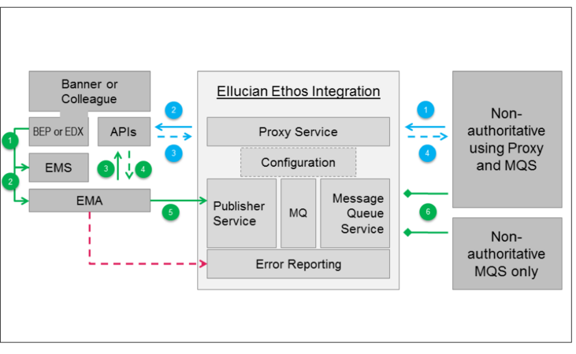
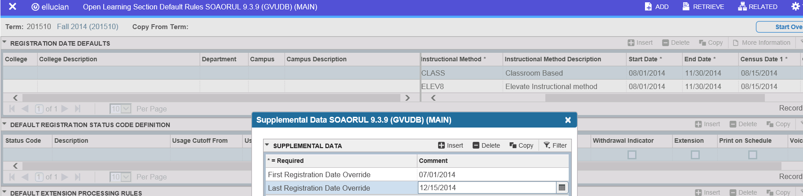

Connect applications to Ethos Integration
Configure applications to integrate with other applications through Ethos Integration.
Connect Banner to Ethos Integration
Prepare for Ethos Integration with Banner
Learn about Ethos Integration
Use these resources to gain a general understanding of how to integrate Banner with other applications using Ethos Integration.
| Resource | Description |
|---|---|
| About Ellucian Ethos | Documentation describing Ellucian Ethos. |
| Ellucian Ethos Integration | Documentation describing Ethos Integration fundamentals. |
Banner/Ethos Integration worksheet
Download the attached PDF worksheet to record values that you will need as you set up Banner with Ethos Integration.
Click Attachment  on this page to download the
Worksheet_Banner_Ethos_Integration.pdf
file.
on this page to download the
Worksheet_Banner_Ethos_Integration.pdf
file.
The setup procedures will guide you in entering values in the worksheet. You can either print the worksheet, or open it in Adobe Reader and enter the values directly in the PDF.
Identify Ethos Integration component versions for Banner
Locate the software and documentation
This table summarizes where to obtain each component that you will install, and where to find the documentation with the installation and setup procedures.
| Component | Where to get it | Documentation |
|---|---|---|
| Banner APIs, Integration, Student, and Business Process APIs. | Ellucian Solution Manager | See Install Banner Ethos API for your Banner Ethos API version and Install Banner Business Process APIs. |
| Banner Ethos API DB Upgrade | Ellucian Solution Manager | See Install Banner Ethos API. Click Attachment  on this page to download the Banner Ethos API DB Upgrade Guide. on this page to download the Banner Ethos API DB Upgrade Guide. |
| Banner DB Upgrade | Ellucian Solution Manager | See Banner Common DB Upgrade. Click the attachment icon in the navigation area at the side of this page to download the Banner DB Upgrade Guide. |
| Banner Event Publisher (BEP) | Ellucian Solution Manager | See Install Banner Event Publisher for your BEP version. |
| Ellucian Messaging Service | Ethos Integration documentation | Install the Ellucian Messaging Service with Banner |
| Ellucian Message Adapter | Ethos Integration documentation | Configure and deploy the Ellucian Message Adapter with Banner |
Install supporting Banner software
Before setting up Ethos Integration with Banner, install the supporting software listed here.
Banner Business Process APIs
Before you install the Business Process APIs, install the latest version of Banner Admin Common. See the Banner Admin Common Install Guide for more information.
Banner DB Upgrade
Before installing the Banner DB Upgrade, determine the appropriate version for your implementation. See Identify Ethos Integration component versions for Banner.
Use the Ellucian Solution Manager to install the Banner DB Upgrade. For the installation procedure, see Banner Common DB Upgrade. Click Attachment on this page and download the Banner DB Upgrade Guide.
Messaging component considerations
Banner and Colleague messaging components
This section provides an overview of the software components that collaborate to connect Banner or Colleague to Ellucian Ethos Integration.
Connecting Banner or Colleague to Ellucian Ethos Integration requires additional software components. The following components work together to adapt the applications to the messaging model and data format used by Ellucian Ethos Integration.
- The application's Ellucian Ethos Data Model APIs.
- The application's event generator:
- Banner Event Publisher (BEP) for Banner.
- Envision Data Exchange (EDX) for Colleague.
- The Ellucian Messaging Service.
- The Ellucian Message Adapter.
All of these software components are available on the Ellucian Download Center or SA Valet for Colleague clients, and require no additional licensing.

Ellucian Ethos Data Model APIs
The Ellucian Ethos Data Model APIs simplify and standardize integration with external applications by exposing Banner or Colleague data in the common Ellucian Ethos Data Model format.
The APIs enable request/reply messaging from external systems through the Proxy service of Ellucian Ethos Integration. The request/reply messaging flow is shown by the blue arrows and numbers in the diagram above. The APIs are also used by the Ellucian Message Adapter when it publishes change notifications to the Publisher service of Ellucian Ethos Integration. The publish and subscribe messaging flow is shown by the green arrows and numbers in the diagram.
The Ellucian Ethos Data Model APIs for Colleague are included in the Colleague Web API beginning with release 1.11. The Ellucian Ethos Data Model APIs for Banner are included in separate API packages for each functional area beginning with Banner Student 9.5.
Event Generator (BEP or EDX)
The event generators monitor database changes and trigger publication of messages to external systems. The event generator for Banner is the Banner Event Publisher (BEP). The event generator for Colleague is Envision Data Exchange (EDX).
The event generators publish data changes as rapidly as possible. They publish data as generic business events that contain only a limited amount of data to make them efficient and allow them to be used for a variety of integrations. A separate software component is required to turn these generic business events into a message that has relevance to an external application. Message queuing software is used to avoid tight coupling between the event generator and the software that processes the business events.
Ellucian Messaging Service
The Ellucian Messaging Service is message queuing software that decouples the event generator for Banner or Colleague from the software that processes the business events. Business events created by BEP or EDX are published to a defined queue in the Ellucian Messaging Service and are read by the software that processes business events asynchronously, but in the order in which they occurred. This allows the event generator and the software that processes business events to work at their own pace while maintaining the original order in which data changes occurred.
Ellucian Message Adapter
The Ellucian Message Adapter is the common software component that publishes data changes from Banner or Colleague to Ellucian Ethos Integration. Publishing change notifications is a requirement for these applications when they are configured as authoritative for Ellucian Ethos Data Model entities.
The Ellucian Message Adapter requires several other components to operate. The Ellucian Ethos Data Model APIs must be installed and available to the Ellucian Message Adapter for it to retrieve the appropriate Ellucian Ethos Data Model format to publish. The Ellucian Message Adapter is also dependent on the Ellucian Messaging Service and the event generator for Banner or Colleague. These components notify the Ellucian Message Adapter to publish a change notification whenever data in Banner or Colleague changes.
Understanding the Message Flow
The diagram above shows both the request/reply and the publish and subscribe messaging flow through Ellucian Ethos Integration.
The blue arrows show a service invocation being made to the Proxy service by an external application that is not authoritative for an Ellucian Ethos Data Model entity (1). Based on the configuration, the Proxy service forwards the request to the exposed API of the application that is authoritative for the entity in the request (2). The response that is returned to the Proxy service (3) is sent to the application that originated the service invocation (4).
The green arrows show the publish and subscribe flow which involves all of the messaging components. BEP or EDX is responsible for monitoring Banner or Colleague for data changes. The event generator posts a data change to the Ellucian Messaging Service (EMS) in a defined business event format (1). The Ellucian Message Adapter (EMA) is a consumer of the business event message published by BEP or EDX (2). When the EMA consumes a business event, it invokes the appropriate Banner or Colleague API (3) to get the full representation of the associated Ellucian Ethos Data Model entity (4). The EMA then posts the full representation of the entity to the Publisher service of Ellucian Ethos Integration (5). The Publisher service is responsible for publishing the change notification to the respective queues of Subscriber applications defined in the tenant's Configuration database. Non-authoritative applications that subscribe to change notifications for specific entities are responsible for polling the Message Queue service (6) to retrieve change notifications in their queue (the lines show the retrieval of queued messages by the consuming application).
Install the Ellucian Messaging Service with Banner
Install the Ellucian Messaging Service on Windows
Install the Ellucian Messaging Service on Linux
Upgrade the Ellucian Messaging Service on Linux
If you have installed the with a Linux operating system, perform this procedure to upgrade it.
About this task
You may encounter errors when you upgrade because of version incompatibilities. Errors can occur when you upgrade EMS from version 7 to 8.
If you run into RabbitMQ and Erlang incompatibility, and you want to preserve existing data and configuration, follow these steps Resolve RabbitMQ and Erlang incompatibilities when upgrading EMS.
Procedure
Resolve RabbitMQ and Erlang incompatibilities when upgrading EMS
When you upgrade the Ellucian Messaging Service, resolve RabbitMQ and Erlang incompatibilities if they occur.
About this task
Errors can occur when you upgrade EMS from version 7 to 8. If you run into RabbitMQ and Erlang incompatibility, and you want to preserve existing data and configuration, follow these steps.
Procedure
Configure RabbitMQ for SSL (Windows)
Install the SSL certificate, private key, and CA certificate files required to configure RabbitMQ for SSL on Windows. After performing these steps, a secure port will be set up that will accept AMQPS communications.
Before you begin
You must have three certificates files from a well-known Certificate Authority.
- Private Key (should not be password protected)
- Root + Intermediate Certificates
- Server Certificate
Any intermediate certificates need to be contained in the same file as the root certificate. The server certificate should be in its own file. All of the certificate files, including the key, should be in a Base64 encoded (PEM) format. If you view them in a text editor, the file should begin and end with Begin Certificate and End Certificate or Begin RSA Private Key and End RSA Private Key.
Procedure
Configure RabbitMQ for SSL (Linux)
Install the SSL certificate, private key, and CA certificate files required to configure RabbitMQ for SSL on Linux. After performing these steps, a secure port will be set up that will accept AMQPS communications.
Before you begin
You must have three certificates files from a well-known Certificate Authority.
- Private Key (should not be password protected)
- Root + Intermediate Certificates
- Server Certificate
Any intermediate certificates need to be contained in the same file as the root certificate. The server certificate should be in its own file. All of the certificate files, including the key, should be in a Base64 encoded (PEM) format. If you view them in a text editor, the file should begin and end with Begin Certificate and End Certificate or Begin RSA Private Key and End RSA Private Key.
Procedure
Validate the Ellucian Messaging Service
You can use the RabbitMQ administrative interface to check that the Ellucian Messaging Service is correctly configured for Ethos Integration.
Procedure
Install the Banner Event Publisher
The Banner Event Publisher (BEP) supports publishing notifications from Banner to Ethos Integration.
Before installing the Banner Event Publisher, determine the appropriate version for your implementation. See Identify Ethos Integration component versions for Banner.
For the procedures, see Install Banner Event Publisher for your BEP version.
When you set up the Banner Event Publisher, you will enter configuration settings in the BEP configuration file BannerEventPublisher_configuration.groovy. Note that the virtualHostName setting in the BEP configuration file must match the virtual host name that you specified when you installed the Ellucian Messaging Service.
Example settings in the BannerEventPublisher_configuration.groovy file:
virtualHostName = "bep_events_host"
exchangeName = "bep_events_topic"Install the Banner Ethos API DB Upgrade
Install the version of the Banner Ethos API DB Upgrade that matches your Banner Ethos API version.
This applies to Banner Ethos API version 9.30 and earlier versions. For example, if you are going to install Banner Ethos API 9.30, install Banner Ethos API DB Upgrade 9.30.
Before you install the Banner Ethos API DB Upgrade, determine the appropriate version for your implementation. See Identify Ethos Integration component versions for Banner.
For the procedures, see the Banner Ethos API DB Upgrade Guide for your version, available as a zipped attachment. See Install Banner Ethos API. Click Attachments and select the zip file associated with the release.
Starting from Banner Ethos APII version 9.31, all database objects related to the Banner Ethos API have been seamlessly incorporated into the respective modules of the Banner baseline and Banner Common DB Upgrade. As a result, there is no longer a need for a separate Banner Ethos DB Upgrade installation.
For detailed installation instructions, we recommend referring to the Install Banner Ethos API 9.33 documentation, which provides guidance on the new installation procedures aligned with this change.
Set up the Banner Ethos APIs and supporting Banner software
Open ports in the firewall
Generate Banner GUIDs
GUID definition
A GUID is a unique string of 36 characters.
The BANSECR.GOKGUID.get_uuid function generates Banner GUIDs and in the following format.
xxxxxxxx-xxxx-4xxx-zxxx-
xxxxxxxxxxxx- x = any lowercase hexadecimal digit.
- 4 = the digit 4.
- z = 8, 9, a, or b.
For example, e39bddad-386f-49ed-be63-54f7265de42b.
- The table itself (for example, GORVISA)
- A shadow table (for example, SHRTNID)
- The GORGUID table
Prepare for GUID generation
Familiarize yourself with the following procedure in preparation for generating Banner Ethos GUIDs.
About this task
Procedure
Job submission processes
There are several Ethos related job submission processes.
The following jobs are defined as part of the menu item Ethos Administrative Jobs (*GENETHOS), which is under the System Functions or Administration (*GENSYS) menu under the General (*GENERAL) menu.
Job submission processes associated with GUID generation
- GURGUDR: Summary of the GUID generation status
- GURGUID: GUID generation for Banner Ethos API
- GURGDJK: Kill or Report GUID generation jobs for Banner Ethos API
- GURGDTC: Disable Triggers and Constraints for Banner Ethos API
- GUADUPS: Find and Fix Duplicate Surrogate IDs
- GUAORPH: Find and Fix orphaned and missing GUID records
- GUREDIA: Ethos Diagnostics
Job submission processes not associated with GUID generation
- GUABEPR: Report for Banner Event Processing (BEP) Events
- GUABEPT: List Disabled BEP Events and Disable the Associated Triggers
- GUAMEPA: Report on the MEP status of all tables
- SURSSDE – Create SDE rule for SOAORUL dates.
- SURGRID – Process to correct grade errors in SHRGRID.
- SHRDGPA – Calculate GPAs for all earned degrees and store the results in SHRDGMRS.
All Ethos job submission jobs have been assigned to a new class, BAN_ETHOS_C. Due to the nature of these jobs no user has been assigned access to the jobs with a direct grant or through the BAN_ETHOS_C class. You will have to assign access for applicable users using Banner security.
Preparations for GUID generation if you are interfacing with Elevate
Additional information about the process that will create a Supplemental Data Rule (SDE) entry for the SOBODTE table to store two new values used for Elevate processing—First Registration Date Override and Last Registration Date Override.
The systems will use these values as the First Registration Date and Last Registration Date when creating sections through Ethos Integration.
The SDE rule enables the entry of the override dates on SOAORUL as shown here.

Preparations for GUID generation in a MEP environment
Run the Find Duplicate Surrogate IDs process (GUADUPS), which scans all tables under MEP that have a SURROGATE ID and identifies any duplicates that are found.
About this task
Because the surrogate ID is often the link between a parent table and its shadow GUID table, it is best to ensure that surrogate id values are always unique.
Procedure
- Go to the GUADUPS job submission page.
-
Specify the following parameters for the GUADUPS process:
Run the GUID Generation process (GURGUID)
The general recommendations for running GUID generation as required by Banner Ethos APIs.
About this task
Procedure
GURGUID parameters
The GURGUID process creates GUIDs as needed.
The following are parameters for the GURGUID process:
Enter GUID generation method
This value relates directly to the type of job as specified in GURTRCK. The valid values are as follows:
| Value | Description | Notes |
|---|---|---|
| S | Serial | Most tables are processed using the serial method. Always use the serial method to process shadow tables:
|
| P | Parallel |
|
| % | Run both Parallel and Serial type jobs (suggested value). | |
| N | Do not generate any GUIDs, and only report on the status. |
Modules for GUID generation
The process can be run for a single module or for multiple modules by duplicating the record. The valid values are as follows:
| Value | Description |
|---|---|
| F | Finance |
| G | General |
| N | Position Control |
| P | Payroll |
| R | Financial Aid |
| S | Student |
| T | Accounts Receivable |
| % | All modules (Suggested value) |
Debug Y or N
In most cases, there is no need to specify that the report be run in Debug mode, but if needed specify a value of Y. The valid values are as follows:
| Value | Description |
|---|---|
| N | Do not generate additional debug messages (suggested value). |
| Y | Generate additional debug messages if errors are found during the process. |
Print status (Y or N)
The valid values are as follows:
| Value | Description |
|---|---|
| N | Do not print GUID status before or after execution. |
| P | Print the GUID status but not the trigger information. |
| U | Print the status for unprocessed GUIDs (that is NOT_PROCESSED, ERROR, BYPASS). |
| Y | Print all GUID status and trigger information (suggested value). |
Maximum Parallel Threads
Use this parameter to override and update the values defined in GUREOPT for parallel processing. If left blank, use the current values (suggested value - blank).
Parallel row count threshold
Use this parameter to override and update the values defined in GUREOPT for parallel processing. If left blank, use the current values (suggested value - blank).
Gen GUIDs for Individual Tables
This parameter gives you the ability to indicate specific tables for which GUIDs should be generated. You may enter as many tables as required, or none. If entered, the GUID Generation Method and Module parameters are ignored, meaning you can mix and match products and methods (suggested value - blank).
Force GUID Generation
This parameter gives you the ability to force processing of the selected tables. If a GUID already exists, no action will be taken. If GUIDs are missing, they will be generated. The valid values are as follows:
| Value | Description |
|---|---|
| Y | Force a re-generation regardless of GURTRCK status. |
| N | Only process GUIDs if the GURTRCK indicator is NOT_PROCESSED or ERROR (suggested value). |
Force disabling of BEP trigger
This parameter gives you the ability to disable BEP triggers for the table for which you are generating GUIDs.
The valid values are as follows:
| Value | Description |
|---|---|
| Y | Force the BEP trigger defined in GURTRCK to be disabled. |
| N | Leave the BEP trigger as defined in GURTRCK. |
Differences between the GURGUID process and standard Banner processes
Run multiple GURGUID jobs
It is possible to submit the GURGUID job multiple times; one-time for each module, or one job to perform all modules.
Running GURGUID multiple times will decrease the overall elapsed time for completing the jobs. The GURTRCK table keeps track of what processes have not yet run, which ones are in progress, and which ones have completed successfully. If you run the job multiple times, there is no concern for re-processing an individual table.
Limitations while running GURGUID
It is recommended that you do not run multiple Banner update batch jobs on the same table at the same time, regardless of the actual process, because of potential errors with row deadlocking.
Due to limitations in Banner, running multiple Banner update batch jobs on the same table at the same time could lead to errors which will terminate the batch jobs. Operations from INB, Banner Admin page, or Self-Service during a Banner update batch job are less likely to generate errors because updates are usually made for a single row of data. If an error does occur, resubmitting the INB form, Banner Admin page, or Self-Service page should work.
Run the GUID generation Status Report (GURGUDR)
Use GURGUDR process to report on the progress of GUID generation.
Because the GURGUID can be a long-running process, a separate Banner job, GURGUDR, can be run to report on the progress of GUID generation. The GURGUDR process queries the GURTRCK table to report on which tables GURGUID have completed the GUID generation and which ones are not yet processed. The report will provide a list of tables eligible for GUID generation and their status. At the end of the report, it will also display an overall percent complete for GURGUID.
The GURGUDR process can be run while GURGUID is also running or it can be run at any other time.
Report, terminate, or purge the GURGUID process (GURGDJK)
You can run GURGDJK to terminate the GURGUID process.
About this task
GURGDJK will terminate all GURGUID jobs running in the Oracle DBMS Scheduler, in addition to any jobs that have been scheduled to run but are not yet running.
Procedure
- Go to the GURGDJK job submission page.
-
Specify the following parameters for the GURGDJK process:
Optional processes
You can run the additional processes on an as needed basis.
Calculate Degree GPAs (SHRDGPA)
Use this process to calculate and store the Degree GPAs for all earned degrees.
The API for student-grade-point-averages, will return earned degree GPAs and associated hours, which are not stored in Banner.
This process will calculate and store the Degree GPAs in the new SHRDGMRS table for all earned degrees; because to calculate them from within the API would be a huge performance issue. At this time, only earned degrees are included in the model.
The following are the parameters for this process:
| Parameter | Description |
|---|---|
| START_TERM | This parameter will have one value. It is an optional field. |
| END_TERM | This parameter will have one value. It is an optional field. |
| STUDENT_ID | This parameter will have multiple values. It is an optional field. |
Users will run this process for a term range to initially populate the table. Because the process may take a long time to run when you have been using Banner for several years, you may want to run it more than one time to populate the table.
Example: You may run this process for 199710-200440, from 200510-201240, and then again for 201310- <current-term>.
This process should become a part of normal end-of-term processing, after grades have been rolled and degrees have been awarded, so that records can be added to SHRDGMRS for newly earned degrees, and updated for existing degrees if needed. For end-of-term processing, START_TERM and END_TERM could be set to the same value. Example: 201840-201840.
Because you can use various fields to capture the term in which the degree was awarded or not capture it at all, the following hierarchy will be used for finding the term of the degree. The last field is a required field.
- SHRDGMR_TERM_CODE_GRAD
- SHRDGMR_TERM_CODE_COMP
- SHRDGMR_TERM_CODE_STUREC
Only earned degrees will be considered, means SHRDGMR_DEGS_CODE must have a value, where STVDEGS_AWARD_STATUS_IND = A (where A stands for Awarded).
Find and delete orphaned GUID rows in shadow tables (GUAORPH)
Use GUAORPH process to find any GUID rows are orphans.
This process is used to find any GUID rows that are orphans, that is, those that cannot relate back to a parent, and optionally delete those rows. This may be due to manual SQL manipulations of tables, PIDM Merges, or incorrect conversion processes.
This report should only be run after GUID generation has completed, otherwise the number of missing GUIDs would be excessive and misleading.
The following are parameters for the GUAORPH process:
Update or Audit
The valid values are as follows:
| Value | Description | Notes |
|---|---|---|
| A | Audit | Report on the changes that will be made. Review the results before running in Update mode. |
| U | Update | Delete orphaned GUIDs. If missing GUIDs were reported, set the Execute GURGUID parameter to Y to generate them. |
Max detail to print
- Specify the maximum number of detailed error messages to display.
- A value of 0 indicates that all errors should display. Typically, a value of 10 or 20 will be enough to give you an idea of any issues.
DEBUG (Y or N)
The valid values are as follows:
| Value | Description |
|---|---|
| Y | Display the SQL used to find and delete the orphans. |
| N | Do not display the SQL. This is the recommended value. |
GORGUID Verification
Because there are approximately 50 tables associated with GORGUID, you can specify that ALL, NONE, or an OVERRIDE list of parent tables should be processed. The valid values are as follows:
| Value | Description |
|---|---|
| ALL | Verify all tables are related to GORGUID. |
| NONE | Bypass validation for all tables related to GORGUID. |
| OVERRIDE | Only process those tables listed in the Override GORGUID resources option. |
Override GORGUID Resources
If OVERRIDE was selected for GORGUID Verification, select any of the options provided in the drop-down list for this parameter.
You may duplicate this row as many times as needed to indicate one or more resources to be processed.
Shadow Table Verification
Because there are several different shadow tables, you can specify that ALL, NONE, or an OVERRIDE list of tables should be processed. The valid values are as follows:
| Value | Description |
|---|---|
| ALL | Verify all shadow tables. |
| NONE | Bypass validation for all shadow tables. |
| OVERRIDE | Only process those tables listed in the Override Shadow Tables option. |
Override Shadow Tables
If OVERRIDE was selected for Shadow Table Verification, select any of the options provided in the drop-down list for this parameter.
You may duplicate this row as many times as needed to indicate one or more shadow tables to be processed.
Check for orphaned GUIDs
You can choose whether you would like to check for orphaned GUIDs. The valid values are as follows:
| Value | Description |
|---|---|
| Y | Check for orphans. |
| N | Do not check for orphans. |
Check for missing GUIDs
You can choose whether you would like to check for missing GUIDs, typically what GURGUID would generate. The valid values are as follows:
| Value | Description |
|---|---|
| Y | Check for missing GUIDs. |
| N | Do not check for missing GUIDs. |
Execute GURGUID (Y or N)
While running GUAORPH, you can now automatically run GURGUID. If you ran GUAORPH in an UPDATE mode, the tables affected would be passed to GURGUID to run that process. The valid values are as follows:
| Value | Description |
|---|---|
| Y | Automatically submit GURGUID. |
| N | Do not submit GURGUID. |
You can perform the following actions after the updates:
- Create the proper GUID rows, especially if the GUIDs are in a shadow table or GORGUID.
- Issue appropriate BEP transactions to indicate the deletion of the old GUID or primary key and the creation of a new GUID or primary key.
- Run GUAORPH followed by GURGUID to identify or fix orphaned records caused by the new primary key or GUID, or surrogate id combinations.
- Typically, if you delete and add a row instead of changing the primary key or surrogate id directly, this will not be an issue.
Report BEP Events (GUABEPR)
GUABEPR process will allow you to report all information on all or selected BEP events.
The following are parameters for the GUABEPR process:
Enter the Event Names option
Enter the name (wild cards allowed) of the events that you want to report. All Ethos events have the format: EEDM.<product>.<resource identifier>.<primary table>.
Example: EEDM.GEN.Persons.GOREMAL or EEDM.STU.Subject.STVSUBJ
Enter the Print Internal IDs option
The valid values are as follows:
| Value | Description |
|---|---|
| Y | Print the BEP internal IDs. This is only used for debugging. |
| N | Do not print the internal IDs. This is the recommended value. |
MEP analysis report (GUAMEPA)
GUAMEPA process analyzes and reports on the overall MEP environment including, triggers, policies, and non-valid MEP codes identifying any potential discrepancies.
The following are parameters for the GUAMEPA process:
Report Type
The valid values are as follows:
| Value | Description |
|---|---|
| FULL | List all relevant information along with any errors found. |
| ERROR | List only the errors. |
Count Rows per MEP code
The valid values are as follows:
| Value | Description |
|---|---|
| Y | Count the number of rows per MEP code and per table.
|
| N | Do not count rows per MEP code. |
Create "fixes" script
The valid values are as follows:
| Value | Description |
|---|---|
| Y | If errors are found because of missing triggers or policies, a fix it script will be created with the necessary SQL to fix these issues. |
| N | Do not create a fix it script. |
fix it SQL is not executed by this process and will have to be executed by a DBA after reviewing the contents and backing up as needed.Create OWNER policy
The valid values are as follows:
| Value | Description |
|---|---|
| Y | If the OWNER and ALL policies are NULL, an additional component will be added to the fix it script that will set the OWNER Policy to SUID. |
| N | No additional policy changes will be generated. |
Additional Schema Owners
The row can be replicated as many times as needed to specify any additional schemas that need to be analyzed in addition to the default set of schemas that will be processed. Those default schemas are as follows:
ALUMNI, BANIDM, BANIMGR, BANINST1, BANSECR, BWAMGR, BWFMGR, BWGMGR, BWLMGR, BWPMGR, BWRMGR, BWSMGR, FAISMGR, FIMSMGR, FLEXREG, FTAEMGR, GENERAL, NLSUSER, OTGMGR, PAYROLL, POSNCTL, SATURN, STREAMSADMIN, TAISMGR, WFBANNER, and WTAILOR
Output file generation (GUROUTF)
GUROUTF process will extract report files from GUROUTP into the respective file in the file system.
GUROUTF is basically the opposite of GURINSO. All the Banner Ethos jobs that are part of Job Submission write their output directly to GUROUTP and are automatically available for viewing on GJIREVO.
Standard Banner jobs write the .lis and .log files and then (if a Printer designation of DATABASE was specified on GJAPCTL) those files will be copied to GUROUTP for viewing on GJIREVO.
The GUROUTF job will automatically execute with all jobs defined as part of the Ethos Job Submission. This means that those jobs will produce a .lis file, unless overridden in GTVSDAX. For more information about GTVSDAX, see GTVSDAX.
There may be instances where a .lis file was not created and you now want to create it. This can be done by manually executing GUROUTF.
The only parameter required is the one up number of the job for which the files should be extracted.
Banner General 8.9.3 released GJRJLIS, a process that converts a file to a PDF. The file must exist on the file system and must be specified as an input parameter into this process. In order to enable this functionality for an Ethos job, the .lis file must be created through GUROUTF if it does not already exist.
GTVSDAX
If no .lis or .log file is desired, the automatic creation of these files can be controlled through GTVSDAX entries.
The GTVSDAX configurations for Ethos processes are defined in the ETHOS_JOBSUB GTVSDAX group. These are all enabled by default to write the report files to the file system for the given Ethos Job Sub process. If output files for any Ethos Job Sub process is not desired, the ETHOS_JOBSUB configurations can be set to N in GTVSDAX to prevent GUROUTF from writing the files to the file system.
The GTVSDAX settings are as follows:
| Parameter | Description |
|---|---|
| CODE | The Ethos Job Sub process name. Example: GURGUID |
| GROUP | Must equal ETHOS_JOBSUB. |
| SEQUENCE | Must be NULL or Blank. |
| EXTERNAL CODE | Y or N to indicate whether the .lis and .log files are automatically created when the job is running. Any other value or a missing entry is equivalent to a value of N. |
Set up Banner in Ethos Integration
Set up Banner in Ethos Integration (non-MEP)
Create the applications in Ethos Integration for Banner (non-MEP)
Update resources owned by Banner after an Ethos API upgrade (non-MEP)
Enable events associated with Banner-owned resources
Enable events associated with Banner-owned resources from the Applications tab
Update the Ethos applications for Banner with any events that are associated with resources that are owned by Banner.
Before you begin
- Upgrade to the latest Banner version.
- The event-configurations API must be installed on the Banner environment for these features to be available. See event-configurations.
- To install an API in Banner, see Install Banner Ethos API.
- Also see Set up the Banner Ethos APIs and supporting Banner software.
About this task
When you originally created the Ethos applications for Banner, you added the resources that Banner owns. A new version of the Banner Ethos APIs can include events that are associated with the resources owned by Banner. Perform the following procedure to update the Ethos applications for Banner with any events to Banner owned resources.
Perform this procedure for each Ethos application that you created for Banner Ethos APIs.
Procedure
-
On the resource that has the ability to configure events, click More
 and then select Configure Events.
The Events page displays for the selected resource.
and then select Configure Events.
The Events page displays for the selected resource. - Optional:
The Configure Events option displays only if the default resource owner has the ability to set up events.
If the Configure Events option does not display in the menu, the event-configurations API is probably not in the Banner environment for that resource.
Click the edit button
 in the Resource Owner column for the resource, select the correct environment, and click Confirm.
in the Resource Owner column for the resource, select the correct environment, and click Confirm.
Enable events associated with Banner-owned resources from the Resources tab
Update the Ethos applications for Banner with any events that are associated with a resource that is owned by Banner.
Before you begin
- Upgrade to the latest Banner version.
- The event-configurations API must be installed on the Banner environment for these features to be available. See event-configurations.
- To install an API in Banner, see Install Banner Ethos API.
- Also see Set up the Banner Ethos APIs and supporting Banner software.
About this task
When you originally created the Ethos applications for Banner, you added the resources that Banner owns. A new version of the Banner might include events that are associated with the resources owned by Banner. Perform the following procedure to update the Ethos applications for Banner with any events to Banner owned resources.
Perform this procedure for each Ethos application that you created for Banner Ethos APIs.
Procedure
-
On the resource that has the ability to configure events, click More and select Configure Events.
The Events page displays for the selected resource.
- Optional:
The Configure Events option displays only if the default resource owner has the ability to set up events.
If the Configure Events option does not display in the menu, the event-configurations API is probably not in the Banner environment for that resource.
Click the edit button
in the Resource Owner column for the resource, select the correct environment, and click Confirm.
Configure ISO Codes for Banner
If a Banner application owns the ISO code configuration APIs, you can configure the ISO codes for that application.
Before you begin
About this task
The Owned Resources page of the application contains a link to the API Configuration ISO Code Settings page if there are ISO code resources such as countries or currencies.
Procedure
-
Go back to the Applications landing page. On the application row, click the More icon, and then click API Configuration.
The API Configuration ISO Codes page displays. You can configure ISO codes for Country, Currency, Language, Region, and Subregion.
-
Click Edit to change the mapping selections.
Note: You have the option to view recommendations for ISO codes and update the configuration based on recommended values. A recommended value displays in the Recommendations column if there is an exact match.
- Optional:
Deselect Recommendations and click Filter
 in the ISO Code column to filter by Country in the Regions tab and to filter by Region in the Subregions tab.
in the ISO Code column to filter by Country in the Regions tab and to filter by Region in the Subregions tab.
Set up other applications to access Banner resources (non-MEP)
Set up Banner in Ethos Integration (MEP - single tenant)
Install the database function for identification of shared resources (MEP - single tenant)
Create the applications in Ethos Integration for Banner (MEP - single tenant)
Limit the resources owned by the shared resources applications (MEP - single tenant)
You created two Ethos applications for shared resources: one for the Student API and one for the Integration API. Those applications must own only the resources that are shared across your MEP implementation.
About this task
When you created the two Ethos applications for shared resources, the Application Setup Wizard automatically added ownership of all resources that Banner typically owns for that API type (Student or Integration API). Using the procedure below, you will remove all segregated resources (that is, resources that correspond to your MEP-enabled Banner tables) from those applications.
Procedure
-
On the Applications page, locate the tile for the application that you created for Student API shared resources, and click Edit .
Update Banner's owned resources after an Ethos API upgrade (MEP - single tenant)
Set up other applications to access Banner resources (MEP - single tenant)
Create a Banner user for proxy API requests (MEP - single tenant)
Create Ethos applications for other applications that access Banner (MEP - single tenant)
In Ethos Integration, create Ethos applications for the other application that needs to access Banner MEP.
Before you begin
- If this application needs to make proxy API requests to Banner, create a Banner user for authentication of those requests. See Create a Banner user for proxy API requests (MEP - single tenant).
- If this application needs to make GraphQL requests to Data Access, determine the resources that this application needs to access using those requests.
- If this application needs to subscribe to data changes published by Banner, determine the resources to which this application needs to subscribe.
About this task
- Campus Card System Main
- Campus Card System North
- For some Ellucian applications, including Banner and Colleague, you can select the application from a catalog, which automatically configures the appropriate owned resources and subscriptions. See the product-specific documentation for setting up each Ellucian application in Ethos Integration to determine whether the catalog method is supported and to see the procedure.
- You can set up or modify proxy API requests, GraphQL requests, and subscriptions by editing the application after you create it.
Procedure
-
If you selected Configure GraphQL resources in the first step of the wizard, set up GraphQL requests on the Add Resources page of the wizard:
-
In the table of resources, locate the resource that contains the property you want to hide, and then click Show more
 .
.
-
In the Attribute Filters area, click the Add
 icon.
icon.
-
In the table of resources, locate the resource that contains the property you want to hide, and then click Show more
Set up an application to subscribe to changes published by Banner (MEP - single tenant)
Set up an application to access data from Banner MEP by subscribing to published change notifications.
About this task
- Using these procedures, you will manually add subscriptions to an existing Ethos application. You can also add subscriptions when you create an Ethos application using the Add Application wizard. If you added the required subscriptions when you ran the wizard, you can skip this procedure.
- In addition to these procedures performed in Ethos Integration, you need to configure the subscribing software application to retrieve change notifications from Ethos Integration. See Retrieve messages.
Perform the procedure below for each Ethos application that you created. In the example used earlier, you would perform this procedure twice, one time for the Campus Card System Main application and one time for the Campus Card System North application.
In a Banner MEP implementation, resources are owned by multiple Ethos applications. As you add each subscription, you will need to select the appropriate instance of each owned resource. The table below shows an example.
| This Ethos application... | ...subscribes to change notifications published by these Ethos applications |
|---|---|
| Campus Card System Main |
Banner Student Main Banner Student Shared Banner Integration Main Banner Integration Shared |
| Campus Card System North |
Banner Student North Banner Student Shared Banner Integration North Banner Integration Shared |
Procedure
-
On the Applications page, locate the tile for the subscribing Ethos application and then click Edit .
Using the earlier example, you could click the tile for the Campus Card System Main application.
Add credentials for proxy API requests to Banner (MEP - single tenant)
In the Ethos applications that you created for the requesting application, add the Banner credentials that allow that application to access Banner data.
Before you begin
About this task
Perform the procedure below for each Ethos application that you created for the requesting application. In the example used earlier, you would perform this procedure twice, one time for the Campus Card System Main application and one time for the Campus Card System North application.
Each requesting application makes proxy API requests to its appropriate MEP instance through both the Student API and the Integration API. The table below shows an example. For each requesting application, you will enter credentials for both the Student API and the Integration API.
| In this Ethos application... | ...you enter credentials for these Ethos applications |
|---|---|
| Campus Card System Main | Banner Student Main Banner Integration Main |
| Campus Card System North | Banner Student North Banner Integration North |
Procedure
-
On the Applications page, locate the tile for the requesting Ethos application and then click Edit .
Using the earlier example, you could click the tile for the Campus Card System Main application.
Add GraphQL resources to an application (MEP - single tenant)
Set up an application to make GraphQL requests to Ellucian Ethos Data Access in a Banner MEP environment.
About this task
- Using these procedures, you will manually add GraphQL resources to an existing Ethos application. You can also add GraphQL resources when you create an Ethos application using the Add Application wizard. If you added the required resources when you ran the wizard, you can skip this procedure.
- In addition to this procedure performed in Ethos Integration, you need to configure the requesting application to make a GraphQL request to Ethos Integration. See Make GraphQL requests to Data Access.
Procedure
-
If you want to prevent this application from accessing certain properties within an added resource, perform the steps below to hide the properties.
For example, you might have loaded
personsdata into Data Access from Banner or Colleague. You want this application to be able to access mostpersonsinformation, but not thedateOfBirthproperty. You would add thepersonsresource and then use the steps below to hide thedateOfBirthproperty.Note: For examples of attribute filter setup, see Example attribute filters for GraphQL resources.-
In the table of resources, locate the resource that contains the property you want to hide, and then click Show more .
-
In the Attribute Filters area, click the Add icon.
-
In the table of resources, locate the resource that contains the property you want to hide, and then click Show more
Set up Banner in Ethos Integration (MEP - multiple tenants)
Create the applications in Ethos Integration for Banner (MEP - multiple tenants)
Update Banner's owned resources after an Ethos API upgrade (MEP - multiple tenants)
Set up other applications to access Banner resources (MEP - multiple tenants)
Create a Banner user for proxy API requests (MEP - multiple tenants)
Create Ethos applications for other applications that access Banner (MEP - multiple tenants)
In Ethos Integration, create Ethos applications for the other application that needs to access Banner MEP.
Before you begin
- If this application needs to make proxy API requests to Banner, create a Banner user for authentication of those requests. See Create a Banner user for proxy API requests (MEP - multiple tenants).
- If this application needs to make GraphQL requests to Data Access, determine the resources that this application needs to access using those requests.
- If this application needs to subscribe to data changes published by Banner, determine the resources to which this application needs to subscribe.
About this task
You would create an application, such as a Campus Card System, in each tenant for getting information from the various Banner MEP applications.
- For some Ellucian applications, including Banner and Colleague, you can select the application from a catalog, which automatically configures the appropriate owned resources and subscriptions. See the product-specific documentation for setting up each Ellucian application in Ethos Integration to determine whether the catalog method is supported and to see the procedure.
- You can set up or modify proxy API requests, GraphQL requests, and subscriptions by editing the application after you create it.
Procedure
-
If you selected Configure GraphQL resources in the first step of the wizard, set up GraphQL requests on the Add Resources page of the wizard:
-
In the table of resources, locate the resource that contains the property you want to hide, and then click Show more .
-
In the Attribute Filters area, click the Add icon.
-
In the table of resources, locate the resource that contains the property you want to hide, and then click Show more
Set up an application to subscribe to changes published by Banner (MEP - multiple tenants)
Set up an application to access data from Banner MEP by subscribing to published change notifications.
About this task
- Using these procedures, you will manually add subscriptions to an existing Ethos application. You can also add subscriptions when you create an Ethos application using the Add Application wizard. If you added the required subscriptions when you ran the wizard, you can skip this procedure.
- In addition to these procedures performed in Ethos Integration, you need to configure the subscribing software application to retrieve change notifications from Ethos Integration. See Retrieve messages.
Perform the procedure below in each MEP campus tenant. In the example used earlier, you would perform this procedure twice, creating a Campus Card System application in the Main Campus tenant and in the North Campus tenant.
Procedure
-
On the Applications page, locate the tile for the subscribing Ethos application and then click Edit .
Using the earlier example, you could click the tile for the Campus Card System application.
Add credentials for proxy API requests to Banner (MEP - multiple tenants)
In the Ethos applications that you created for the requesting application, add the Banner credentials that allow that application to access Banner data.
Before you begin
About this task
Perform the procedure below in each MEP campus tenant. In the example used earlier, you would perform this procedure twice, creating a Campus Card System application in the Main Campus tenant and in the North Campus tenant.
| In this Ethos application... | ...you would enter credentials for these Ethos applications |
|---|---|
|
Campus Card System Main Campus Card System North |
Banner Student Banner Integration |
Procedure
-
On the Applications page, locate the tile for the requesting Ethos application and then click Edit .
Using the earlier example, you could click the tile for the Campus Card System Main application.
Add GraphQL resources to an application (MEP - multiple tenants)
Set up an application to make GraphQL requests to Ellucian Ethos Data Access in a Banner MEP environment.
About this task
- Using these procedures, you will manually add GraphQL resources to an existing Ethos application. You can also add GraphQL resources when you create an Ethos application using the Add Application wizard. If you added the required resources when you ran the wizard, you can skip this procedure.
- In addition to this procedure performed in Ethos Integration, you need to configure the requesting application to make a GraphQL request to Ethos Integration. See Make GraphQL requests to Data Access.
Procedure
-
If you want to prevent this application from accessing certain properties within an added resource, perform the steps below to hide the properties.
For example, you might have loaded
personsdata into Data Access from Banner or Colleague. You want this application to be able to access mostpersonsinformation, but not thedateOfBirthproperty. You would add thepersonsresource and then use the steps below to hide thedateOfBirthproperty.Note: For examples of attribute filter setup, see Example attribute filters for GraphQL resources.-
In the table of resources, locate the resource that contains the property you want to hide, and then click Show more .
-
In the Attribute Filters area, click the Add icon.
-
In the table of resources, locate the resource that contains the property you want to hide, and then click Show more
Set up Banner with Data Access
Specify EMS settings in Banner
Create and Authorize a Banner User to Enable Proxy API calls for Ethos Integration
Create a Banner user
Assign privileges to the Banner user
Configure and deploy the Ellucian Message Adapter with Banner
Define the EMA_CONFIG encryption key
The Ellucian Message Adapter uses the EMA_CONFIG encryption key to encrypt and decrypt sensitive information stored in the emsConfig.xml file.
Use the appropriate procedure for your web server to define the encryption key.
(Tomcat) Create the EMA_CONFIG environment variable
Perform this procedure if you are using the Tomcat web server.
About this task
If you previously created the EMA_CONFIG environment variable for an earlier version of the Ellucian Message Adapter, you can skip this procedure.
Procedure
Configure the Ellucian Message Adapter
Configure the Ellucian Message Adapter on Windows with Banner
Configure the Ellucian Message Adapter on Linux with Banner
EMA configuration settings for Banner (non-MEP)
This topic describes the entries in the emsConfig.xml file for Ellucian Message Adapter with Banner.
Click Attachment on this page to download the Example_emsConfig_EMA... file for your EMA version and ERP (Banner or Colleague).
General settings
| XML Attribute | Description |
|---|---|
| clientErpType | Enter Banner |
| configId | Accept the default entry of ETHOS-INTEGRATION. |
| tenantalias | Enter the alias for the Ethos tenant. You can find this on the Settings drop-down menu on the integration UI. This field allows additional safeguards to prevent you from entering the incorrect API when you configure EMA. |
| amqpUsername | Enter the username and password of a RabbitMQ user who can access the virtual host that you created for Ellucian Ethos Integration. You specified the virtual host name and an administrative username and password when you installed the Ellucian Messaging Service. You can use the username and password that you entered there. If you do not remember it, use the RabbitMQ Management Console to identify that user. |
| amqpPassword |
Banner Student API settings
In the <bannerStudentConfig> section, enter the values for your Banner Student API.
Enter the Banner Student API URL and user credentials:
| XML Attribute | Description |
|---|---|
| baseUrl | Enter the base URL of the Banner Student API website, in the following form: https://<hostname>:<port>/StudentApi/api where <hostname> is the name of your Tomcat server, and <port> is the port on that server that you configured for the Banner Student API. |
| username | Enter the username and password of a Banner account with access to the Banner Student API. For a Banner MEP installation with EMA 4.0 or later, this must be the same user that you set up with permissions to access the database function that identifies shared and Multi-Entity Processing (MEP) resources. |
| password |
In the <apiKeys> section, for a single-instance (non-MEP) implementation, enter the values in the table below.
| XML Attribute | Description |
|---|---|
| hubApiKey | Enter the Ethos Integration API key for the Banner Student API application. To get the API key, edit the application record in Ethos Integration, go to API Keys, and copy the key. |
| vpdiCode | Leave this setting blank. |
Banner Integration API settings
In the <bannerIntegrationConfig> section, enter the values for your Banner Integration API.
Enter the Banner Integration API URL and user credentials:
| XML Attribute | Description |
|---|---|
| baseUrl | Enter the base URL of the Banner Integration API website, in the following form: https://<hostname>:<port>/IntegrationApi/api where <hostname> is the name of your Tomcat server, and <port> is the port on that server that you configured for the Banner Integration API. |
| username | Enter the username and password of a Banner account with access to the Banner Integration API. For a Banner MEP installation with EMA 4.0 or later, this must be the same user that you set up with permissions to access the database function that identifies shared and Multi-Entity Processing (MEP) resources. |
| password |
In the <apiKeys> section, for a single-instance (non-MEP) implementation, enter the values in the table below.
| XML Attribute | Description |
|---|---|
| hubApiKey | Enter the Ethos Integration API Key for the Banner Integration API application. To get the API key, edit the application record in Ethos Integration, go to API Keys, and copy the key. |
| vpdiCode | Leave this setting blank. |
Custom API settings
EMA 4.1.0 and later supports publishing from one custom API in addition to the Banner Integration API and Banner Student API. If you have configured a custom API in Ethos Integration, enter the settings below in the <customApiConfig> section.
Enter the API URL and user credentials:
| XML Attribute | Description |
|---|---|
| baseUrl | Enter the base URL of the custom API website. Example: https://<hostname>:<port>/CustomApi/api |
| username | Enter the username and password of a Banner account with access to the custom API. |
| password |
In the <apiKeys> section, for a single-instance (non-MEP) implementation, enter the values in the table below.
| XML Attribute | Description |
|---|---|
| hubApiKey | Enter the Ethos Integration API key for the Ethos application for the custom API. To get the API key, edit the application record in Ethos Integration, go to API Keys, and copy the key. |
| vpdiCode | Leave this setting blank. |
Specify whether to fetch the custom configuration:
| XML Attribute | Description |
|---|---|
| forceFetchCustomConfiguration | Enter true if you are using a custom API. That is, if you have entered the other settings in this section, change this setting to true. |
Business Event Settings
In the <businessEventExchangeConfig> section, enter the AMQP settings to be used for processing business-event type messages. This section is optional and is only used with Business Event publishing. If you are only planning to process change-notification type messages, then you can leave this section blank or delete it. If you are processing both Change Notifications and Business Events, the exchangeName and queueName must differ from those used with Change Notifications.
| XML Attribute | Description |
|---|---|
| exchangeName | Enter the name of the topic exchange where BEP will publish business-event type messages |
| queueName | Enter the name of a queue that will get the business-event messages from the topic exchange. If this queue doesn’t already exist, EMA will automatically create it at startup. |
| routingKeys | Define a <key> entry for each routing key binding that the queue should use. By default, it uses a key binding of BE.#, which will get every message with a routing key that starts with the BE. prefix. |
Logging setting
| XML Attribute | Description |
|---|---|
| logLevel | Enter the startup log level used to record Ellucian Message Adapter activity, during the period after the EMA is started and before it successfully connects to the Banner or Colleague Ethos APIs. The available logging levels are ERROR, WARN, INFO, and DEBUG. Ellucian recommends that you accept the default level of INFO for normal operation. If the EMA does not successfully connect to the Banner or Colleague Ethos APIs when it starts up, temporarily change the level to DEBUG to troubleshoot the issue.Note: After a successful connection to the Banner or Colleague Ethos APIs, the EMA log level is based on the value specified with the ERP:
|
Processing settings
- The Ellucian Message Adapter retrieves a batch of messages from the Ellucian Messaging Service. The batch size is based on the
amqpBatchSizesetting. - For all of the messages in that batch, EMA retrieves the required data model information from Banner or Colleague through the Banner or Colleague Ethos APIs. EMA retrieves the data using parallel processing with multiple threads:
- If
autoConfigurePoolis set to true, the number of parallel threads grows automatically based on the number of waiting messages and available memory. TheprocessingThreadssetting is ignored. - If
autoConfigurePoolis set to false, the number of parallel threads is based on theprocessingThreadssetting.
For each request, EMA waits for a response from the APIs up to the time limit specified in the
apiTimeoutIntervalsetting. If it receives no response in that time period, EMA repeatedly resends the request and waits for a response, up to the number of retries specified in themaxRetryAttemptssetting. If it receives no response after the specified number of retries, EMA considers the request failed and records an error message in the log file. - If
- After retrieving the Banner or Colleague information for all messages in the batch, EMA publishes all of the resulting change notifications to Ethos Integration in smaller batches, based on the
ethosPublishBatchSizesetting.
| XML Attribute | Description |
|---|---|
| amqpBatchSize | Specify the batch size for retrieving messages from the Ellucian Messaging Service. The default of 80 is an appropriate batch size for maximum throughput based on Ellucian's testing with 2 GB of memory assigned to the Ellucian Message Adapter. If you have less memory assigned to the EMA, and you are seeing issues with memory, you could decrease this setting. |
| autoConfigurePool | These settings determine how many parallel threads are used when EMA retrieves data from Banner or Colleague through the Ethos APIs. By default,
autoConfigurePool is set to true, so that the number of threads grows automatically based on the number of waiting messages and available memory. Ellucian recommends that you accept this default, unless there are indications that the Banner or Colleague Ethos APIs are unable to keep up with the rate of incoming requests from EMA. In that case, do the following:
|
| processingThreads | |
| apiTimeoutInterval | These settings determine how the EMA behaves when it does not receive a response from the APIs.
You can adjust these settings depending on whether you find that such failures are typically due to a temporary processing issue caused by an unusually high load, which might be resolved by waiting longer or retrying; or due to a problem getting the required data from Banner or Colleague, for which extra time or retries will not help. |
| maxRetryAttempts | |
| ethosPublishBatchSize | Specify the batch size, up to 20, for publishing change notifications from the EMA to Ethos Integration. Ellucian recommends that you accept the default for this setting. For the most efficient processing, the message retrieval batch size |
Other settings
The settings above are in the emsConfig.template file. After you first enter the settings described above and save the configuration file, some additional settings are automatically added to the file. You will see those settings if you later edit the emsConfig.xml file. You can ignore those additional settings unless instructed by Ellucian Professional Services to change them.
Optional settings
There are some settings that are not in the template that you can add to change the behavior of the Ellucian Message Adapter.
disableMessageSquashingThis boolean value allows you to turn off message squashing functionality in case you need fine-grained events, including duplicate updates. By default, EMA enables message squashing and remove subsequent messages within a single batch when they reference the same resource, ID, VPDI code if applicable, and when the operations are compatible.
| Compatible Operations | Squashed (Yes/No) |
|---|---|
| INSERT → UPDATE | Yes |
| UPDATE → UPDATE | Yes |
| INSERT → INSERT | Yes |
| ANY → DELETE | No |
| DELETE → ANY | No |
| UPDATE → INSERT | No |
Example: <disableMessageSquashing>true</disableMessageSquashing>
EMA configuration settings for Banner (MEP - single tenant)
This topic describes the entries in the emsConfig.xml file for Ellucian Message Adapter with Banner.
Click Attachment on this page to download the Example_emsConfig_EMA... file for your EMA version and ERP (Banner or Colleague).
General settings
| XML Attribute | Description |
|---|---|
| clientErpType | Enter Banner |
| configId | Accept the default entry of ETHOS-INTEGRATION. |
| tenantalias | Enter the alias for the Ethos tenant. You can find this on the Settings drop-down menu on the integration UI. This field allows additional safeguards to prevent you from entering the incorrect API when you configure EMA. |
| amqpUsername | Enter the username and password of a RabbitMQ user who can access the virtual host that you created for Ellucian Ethos Integration. You specified the virtual host name and an administrative username and password when you installed the Ellucian Messaging Service. You can use the username and password that you entered there. If you do not remember it, use the RabbitMQ Management Console to identify that user. |
| amqpPassword |
Banner Student API settings
In the <bannerStudentConfig> section, enter the values for your Banner Student API.
Enter the Banner Student API URL and user credentials:
| XML Attribute | Description |
|---|---|
| baseUrl | Enter the base URL of the Banner Student API website, in the following form: https://<hostname>:<port>/StudentApi/api where <hostname> is the name of your Tomcat server, and <port> is the port on that server that you configured for the Banner Student API. |
| username | Enter the username and password of a Banner account with access to the Banner Student API. For a Banner MEP installation with EMA 4.0 or later, this must be the same user that you set up with permissions to access the database function that identifies shared and Multi-Entity Processing (MEP) resources. |
| password |
- Create an <apiKey> section for each MEP instance.
- In each of those <apiKey> sections, enter the values in the table below.
| XML Attribute | Description |
|---|---|
| hubApiKey | Enter the Ethos Integration API Key for the Banner Student API application for this MEP instance. To get the API key, edit the application record in Ethos Integration, go to API Keys, and copy the key. |
| vpdiCode | Enter the VPDI code from Banner for this MEP instance. |
(MEP single tenant only) Enter the API key for the shared resources application:
| XML Attribute | Description |
|---|---|
| mepSharedDataApiKey | Enter the Ethos Integration API key for the Ethos application that you created for shared resources for the Banner Student API. To get the API key, edit the application record in Ethos Integration, go to API Keys, and copy the key. |
Banner Integration API settings
In the <bannerIntegrationConfig> section, enter the values for your Banner Integration API.
Enter the Banner Integration API URL and user credentials:
| XML Attribute | Description |
|---|---|
| baseUrl | Enter the base URL of the Banner Integration API website, in the following form: https://<hostname>:<port>/IntegrationApi/api where <hostname> is the name of your Tomcat server, and <port> is the port on that server that you configured for the Banner Integration API. |
| username | Enter the username and password of a Banner account with access to the Banner Integration API. For a Banner MEP installation with EMA 4.0 or later, this must be the same user that you set up with permissions to access the database function that identifies shared and Multi-Entity Processing (MEP) resources. |
| password |
- Create an <apiKey> section for each MEP instance.
- In each of those <apiKey> sections, enter the values in the table below.
| XML Attribute | Description |
|---|---|
| hubApiKey | Enter the Ethos Integration API Key for the Banner Integration API application for this MEP instance. To get the API key, edit the application record in Ethos Integration, go to API Keys, and copy the key. |
| vpdiCode | Enter the VPDI code from Banner for this MEP instance. |
(MEP single tenant only) Enter the API key for the shared resources application:
| XML Attribute | Description |
|---|---|
| mepSharedDataApiKey | Enter the Ethos Integration API key for the Ethos application that you created for shared resources for the Banner Integration API. To get the API key, edit the application record in Ethos Integration, go to API Keys, and copy the key. |
Custom API settings
EMA 4.1.0 and later supports publishing from one custom API in addition to the Banner Integration API and Banner Student API. If you have configured a custom API in Ethos Integration, enter the settings below in the <customApiConfig> section.
Enter the API URL and user credentials:
| XML Attribute | Description |
|---|---|
| baseUrl | Enter the base URL of the custom API website. Example: https://<hostname>:<port>/CustomApi/api |
| username | Enter the username and password of a Banner account with access to the custom API. |
| password |
- Create an <apiKey> section for each MEP instance.
- In each of those <apiKey> sections, enter the values in the table below.
| XML Attribute | Description |
|---|---|
| hubApiKey | Enter the Ethos Integration API key for the Ethos application for the custom API, for this MEP instance. To get the API key, edit the application record in Ethos Integration, go to API Keys, and copy the key. |
| vpdiCode | Enter the VPDI code from Banner for this MEP instance. |
(MEP single tenant only) Enter the API key for the shared resources application:
| XML Attribute | Description |
|---|---|
| mepSharedDataApiKey | Enter the Ethos Integration API key for the Ethos application that you created for shared resources for the custom API. To get the API key, edit the application record in Ethos Integration, go to API Keys, and copy the key. |
Specify whether to fetch the custom configuration:
| XML Attribute | Description |
|---|---|
| forceFetchCustomConfiguration | Enter true if you are using a custom API. That is, if you have entered the other settings in this section, change this setting to true. |
Business Event Settings
In the <businessEventExchangeConfig> section, enter the AMQP settings to be used for processing business-event type messages. This section is optional and is only used with Business Event publishing. If you are only planning to process change-notification type messages, then you can leave this section blank or delete it. If you are processing both Change Notifications and Business Events, the exchangeName and queuName must differ from those used with Change Notifications.
| XML Attribute | Description |
|---|---|
| exchangeName | Enter the name of the topic exchange where BEP will publish business-event type messages |
| queueName | Enter the name of a queue that will get the business-event messages from the topic exchange. If this queue doesn’t already exist, EMA will automatically create it at startup. |
| routingKeys | Define a <key> entry for each routing key binding that the queue should use. By default, it uses a key binding of ‘BE.#’, which will get every message with a routing key that starts with the ‘BE.’ prefix. |
Split Shared Data setting
Specify whether to split messages for shared data resources and publish for each VPDI code.
| XML Attribute | Description |
|---|---|
| splitSharedData | Leave this set to the default false setting. |
Logging setting
| XML Attribute | Description |
|---|---|
| logLevel | Enter the startup log level used to record Ellucian Message Adapter activity, during the period after the EMA is started and before it successfully connects to the Banner or Colleague Ethos APIs. The available logging levels are ERROR, WARN, INFO, and DEBUG. Ellucian recommends that you accept the default level of INFO for normal operation. If the EMA does not successfully connect to the Banner or Colleague Ethos APIs when it starts up, temporarily change the level to DEBUG to troubleshoot the issue.Note: After a successful connection to the Banner or Colleague Ethos APIs, the EMA log level is based on the value specified with the ERP:
|
Processing settings
- The Ellucian Message Adapter retrieves a batch of messages from the Ellucian Messaging Service. The batch size is based on the
amqpBatchSizesetting. - For all of the messages in that batch, EMA retrieves the required data model information from Banner or Colleague through the Banner or Colleague Ethos APIs. EMA retrieves the data using parallel processing with multiple threads:
- If
autoConfigurePoolis set to true, the number of parallel threads grows automatically based on the number of waiting messages and available memory. TheprocessingThreadssetting is ignored. - If
autoConfigurePoolis set to false, the number of parallel threads is based on theprocessingThreadssetting.
For each request, EMA waits for a response from the APIs up to the time limit specified in the
apiTimeoutIntervalsetting. If it receives no response in that time period, EMA repeatedly resends the request and waits for a response, up to the number of retries specified in themaxRetryAttemptssetting. If it receives no response after the specified number of retries, EMA considers the request failed and records an error message in the log file. - If
- After retrieving the Banner or Colleague information for all messages in the batch, EMA publishes all of the resulting change notifications to Ethos Integration in smaller batches, based on the
ethosPublishBatchSizesetting.
| XML Attribute | Description |
|---|---|
| amqpBatchSize | Specify the batch size for retrieving messages from the Ellucian Messaging Service. The default of 80 is an appropriate batch size for maximum throughput based on Ellucian's testing with 2 GB of memory assigned to the Ellucian Message Adapter. If you have less memory assigned to the EMA, and you are seeing issues with memory, you could decrease this setting. |
| autoConfigurePool | These settings determine how many parallel threads are used when EMA retrieves data from Banner or Colleague through the Ethos APIs. By default,
autoConfigurePool is set to true, so that the number of threads grows automatically based on the number of waiting messages and available memory. Ellucian recommends that you accept this default, unless there are indications that the Banner or Colleague Ethos APIs are unable to keep up with the rate of incoming requests from EMA. In that case, do the following:
|
| processingThreads | |
| apiTimeoutInterval | These settings determine how the EMA behaves when it does not receive a response from the APIs.
You can adjust these settings depending on whether you find that such failures are typically due to a temporary processing issue caused by an unusually high load, which might be resolved by waiting longer or retrying; or due to a problem getting the required data from Banner or Colleague, for which extra time or retries will not help. |
| maxRetryAttempts | |
| ethosPublishBatchSize | Specify the batch size, up to 20, for publishing change notifications from the EMA to Ethos Integration. Ellucian recommends that you accept the default for this setting. For the most efficient processing, the message retrieval batch size |
Database connection settings (Banner MEP single tenant setup only)
The Ellucian Message Adapter uses a JDBC driver to call a database function in the Banner database, to identify tables that are MEP-enabled.
| XML Attribute | Description |
|---|---|
| bannerConnectString | Enter jdbc:oracle:thin:@<db_host>:<db_port>:<sid> where:
Example: jdbc:oracle:thin:@oracle.mycollege.edu:1521:banner_prod |
| jdbcDriver | Accept the default. If Ellucian delivers an updated driver with a different name in the future, you will be instructed to update this setting. |
Other settings
The settings above are in the emsConfig.template file. After you first enter the settings described above and save the configuration file, some additional settings are automatically added to the file. You will see those settings if you later edit the emsConfig.xml file. You can ignore those additional settings unless instructed by Ellucian Professional Services to change them.
Optional settings
There are some settings that are not in the template that you can add to change the behavior of the Ellucian Message Adapter.
disableMessageSquashingThis boolean value allows you to turn off message squashing functionality in case you need fine-grained events, including duplicate updates. By default, EMA will remove subsequent messages in a single batch if they have the same resource, ID, operation, and if applicable, VPDI code.
Example: <disableMessageSquashing>true</disableMessageSquashing>
EMA configuration settings for Banner (MEP - multiple tenants)
This topic describes the entries in the emsConfig.xml file for Ellucian Message Adapter with Banner.
Click Attachment on this page to download the Example_emsConfig_EMA... file for your EMA version and ERP (Banner or Colleague).
General settings
| XML Attribute | Description |
|---|---|
| clientErpType | Enter Banner |
| configId | Accept the default entry of ETHOS-INTEGRATION. |
| tenantalias | Enter the alias for the Ethos tenant. You can find this on the Settings drop-down menu on the integration UI. This field allows additional safeguards to prevent you from entering the incorrect API when you configure EMA. |
| amqpUsername | Enter the username and password of a RabbitMQ user who can access the virtual host that you created for Ellucian Ethos Integration. You specified the virtual host name and an administrative username and password when you installed the Ellucian Messaging Service. You can use the username and password that you entered there. If you do not remember it, use the RabbitMQ Management Console to identify that user. |
| amqpPassword |
Banner Student API settings
In the <bannerStudentConfig> section, enter the values for your Banner Student API.
Enter the Banner Student API URL and user credentials:
| XML Attribute | Description |
|---|---|
| baseUrl | Enter the base URL of the Banner Student API website, in the following form: https://<hostname>:<port>/StudentApi/api where <hostname> is the name of your Tomcat server, and <port> is the port on that server that you configured for the Banner Student API. |
| username | Enter the username and password of a Banner account with access to the Banner Student API. For a Banner MEP installation with EMA 4.0 or later, this must be the same user that you set up with permissions to access the database function that identifies shared and Multi-Entity Processing (MEP) resources. |
| password |
- Create an <apiKey> section for each MEP instance.
- In each of those <apiKey> sections, enter the values in the table below.
| XML Attribute | Description |
|---|---|
| hubApiKey | Enter the Ethos Integration API key for the Banner Student API application for this MEP instance. To get the API key, log in to the tenant for the applications that use this MEP code. After you log in to that tenant, edit the application record in Ethos Integration, go to API Keys, and copy the key. |
| vpdiCode | Enter a VPDI code here that corresponds to the MEP instance for that application's tenant. |
MEP (multiple tenants) Enter the API key for the shared resources application:
| XML Attribute | Description |
|---|---|
| mepSharedDataApiKey | If you are using multiple tenants for your MEP codes, leave this setting blank. |
Banner Integration API settings
In the <bannerIntegrationConfig> section, enter the values for your Banner Integration API.
Enter the Banner Integration API URL and user credentials:
| XML Attribute | Description |
|---|---|
| baseUrl | Enter the base URL of the Banner Integration API website, in the following form: https://<hostname>:<port>/IntegrationApi/api where <hostname> is the name of your Tomcat server, and <port> is the port on that server that you configured for the Banner Integration API. |
| username | Enter the username and password of a Banner account with access to the Banner Integration API. For a Banner MEP installation with EMA 4.0 or later, this must be the same user that you set up with permissions to access the database function that identifies shared and Multi-Entity Processing (MEP) resources. |
| password |
- Create an <apiKey> section for each MEP instance.
- In each of those <apiKey> sections, enter the values in the table below.
| XML Attribute | Description |
|---|---|
| hubApiKey | Enter the Ethos Integration API key for the Banner Integration API application for this MEP instance. To get the API key, log in to the tenant for the applications that use this MEP code. After you log in to that tenant, edit the application record in Ethos Integration, go to API Keys, and copy the key. |
| vpdiCode | Enter a VPDI code here that corresponds to the MEP instance for that application's tenant. |
(MEP only - multiple tenants) Enter the API key for the shared resources application:
| XML Attribute | Description |
|---|---|
| mepSharedDataApiKey | When using multiple tenants, leave this setting blank. |
Custom API settings
EMA 4.1.0 and later supports publishing from one custom API in addition to the Banner Integration API and Banner Student API. If you have configured a custom API in Ethos Integration, enter the settings below in the <customApiConfig> section.
Enter the API URL and user credentials:
| XML Attribute | Description |
|---|---|
| baseUrl | Enter the base URL of the custom API website. Example: https://<hostname>:<port>/CustomApi/api |
| username | Enter the username and password of a Banner account with access to the custom API. |
| password |
- Create an <apiKey> section for each MEP instance.
- In each of those <apiKey> sections, enter the values in the table below.
| XML Attribute | Description |
|---|---|
| hubApiKey | Enter the Ethos Integration API key for the Ethos application for the custom API for this MEP instance. To get the API key, log in to the tenant for the applications that use this MEP code. After you log in to that tenant, edit the application record in Ethos Integration, go to API Keys, and copy the key. |
| vpdiCode | Enter a VPDI code here that corresponds to the MEP instance for that application's tenant. |
(MEP only - multiple tenants) Enter the API key for the shared resources application:
| XML Attribute | Description |
|---|---|
| mepSharedDataApiKey | When using multiple tenants, leave this setting blank. |
Specify whether to fetch the custom configuration:
| XML Attribute | Description |
|---|---|
| forceFetchCustomConfiguration | Enter true if you are using a custom API. That is, if you have entered the other settings in this section, change this setting to true. |
Business Event Settings
In the <businessEventExchangeConfig> section, enter the AMQP settings to be used for processing business-event type messages. This section is optional and is only used with Business Event publishing. If you are only planning to process change-notification type messages, then you can leave this section blank or delete it. If you are processing both Change Notifications and Business Events, the exchangeName and queuName must differ from those used with Change Notifications.
| XML Attribute | Description |
|---|---|
| exchangeName | Enter the name of the topic exchange where BEP will publish business-event type messages |
| queueName | Enter the name of a queue that will get the business-event messages from the topic exchange. If this queue doesn’t already exist, EMA will automatically create it at startup. |
| routingKeys | Define a <key> entry for each routing key binding that the queue should use. By default, it uses a key binding of ‘BE.#’, which will get every message with a routing key that starts with the ‘BE.’ prefix. |
Split Shared Data setting
Specify whether to split messages for shared data resources and publish for each VPDI code. You need to do this if using the multiple tenant setup.
| XML Attribute | Description |
|---|---|
| splitSharedData | This is set to false by default. Set this to true if MEP shared data should be published for every VPDI code. |
Logging setting
| XML Attribute | Description |
|---|---|
| logLevel | Enter the startup log level used to record Ellucian Message Adapter activity, during the period after the EMA is started and before it successfully connects to the Banner or Colleague Ethos APIs. The available logging levels are ERROR, WARN, INFO, and DEBUG. Ellucian recommends that you accept the default level of INFO for normal operation. If the EMA does not successfully connect to the Banner or Colleague Ethos APIs when it starts up, temporarily change the level to DEBUG to troubleshoot the issue.Note: After a successful connection to the Banner or Colleague Ethos APIs, the EMA log level is based on the value specified with the ERP:
|
Processing settings
- The Ellucian Message Adapter retrieves a batch of messages from the Ellucian Messaging Service. The batch size is based on the
amqpBatchSizesetting. - For all of the messages in that batch, EMA retrieves the required data model information from Banner or Colleague through the Banner or Colleague Ethos APIs. EMA retrieves the data using parallel processing with multiple threads:
- If
autoConfigurePoolis set to true, the number of parallel threads grows automatically based on the number of waiting messages and available memory. TheprocessingThreadssetting is ignored. - If
autoConfigurePoolis set to false, the number of parallel threads is based on theprocessingThreadssetting.
For each request, EMA waits for a response from the APIs up to the time limit specified in the
apiTimeoutIntervalsetting. If it receives no response in that time period, EMA repeatedly resends the request and waits for a response, up to the number of retries specified in themaxRetryAttemptssetting. If it receives no response after the specified number of retries, EMA considers the request failed and records an error message in the log file. - If
- After retrieving the Banner or Colleague information for all messages in the batch, EMA publishes all of the resulting change notifications to Ethos Integration in smaller batches, based on the
ethosPublishBatchSizesetting.
| XML Attribute | Description |
|---|---|
| amqpBatchSize | Specify the batch size for retrieving messages from the Ellucian Messaging Service. The default of 80 is an appropriate batch size for maximum throughput based on Ellucian's testing with 2 GB of memory assigned to the Ellucian Message Adapter. If you have less memory assigned to the EMA, and you are seeing issues with memory, you could decrease this setting. |
| autoConfigurePool | These settings determine how many parallel threads are used when EMA retrieves data from Banner or Colleague through the Ethos APIs. By default,
autoConfigurePool is set to true, so that the number of threads grows automatically based on the number of waiting messages and available memory. Ellucian recommends that you accept this default, unless there are indications that the Banner or Colleague Ethos APIs are unable to keep up with the rate of incoming requests from EMA. In that case, do the following:
|
| processingThreads | |
| apiTimeoutInterval | These settings determine how the EMA behaves when it does not receive a response from the APIs.
You can adjust these settings depending on whether you find that such failures are typically due to a temporary processing issue caused by an unusually high load, which might be resolved by waiting longer or retrying; or due to a problem getting the required data from Banner or Colleague, for which extra time or retries will not help. |
| maxRetryAttempts | |
| ethosPublishBatchSize | Specify the batch size, up to 20, for publishing change notifications from the EMA to Ethos Integration. Ellucian recommends that you accept the default for this setting. For the most efficient processing, the message retrieval batch size |
Database connection settings (Banner MEP - multiple tenant setup only)
The Ellucian Message Adapter uses a JDBC driver to call a database function in the Banner database, to identify tables that are MEP-enabled.
| XML Attribute | Description |
|---|---|
| bannerConnectString | Leave this setting blank when using multiple tenants. |
| jdbcDriver | Leave this setting blank when using multiple tenants. |
Other settings
The settings above are in the emsConfig.template file. After you first enter the settings described above and save the configuration file, some additional settings are automatically added to the file. You will see those settings if you later edit the emsConfig.xml file. You can ignore those additional settings unless instructed by Ellucian Professional Services to change them.
Optional settings
There are some settings that are not in the template that you can add to change the behavior of the Ellucian Message Adapter.
disableMessageSquashingThis boolean value allows you to turn off message squashing functionality in case you need fine-grained events, including duplicate updates. By default, EMA will remove subsequent messages in a single batch if they have the same resource, ID, operation, and if applicable, VPDI code.
Example: <disableMessageSquashing>true</disableMessageSquashing>
Deploy the Ellucian Message Adapter to Tomcat
If you are deploying the Ellucian Message Adapter to a Tomcat web server, perform this procedure to deploy the WAR file.
Before you begin
Procedure
EMA log files
EMA activity is recorded in multiple log files.
Log file location
In most cases, the log files are located with your Tomcat web server logs. If you use a script to start the EMA, the log files will be in a logs directory under the directory where the script is located.
Log files
EMA activity is recorded in the following log files:
| Log file | Activity recorded |
|---|---|
| ema.log | Records all activity. |
| ema_events.log | Records information about each event:
|
| ema_ack.log | Records information about each acknowledged business event message. After the processes a business event message by retrieving the associated data from Banner or Colleague and then sending the change notification to Ethos Integration, it sends an acknowledgment to the so that the business event can be deleted from the EMS queue. |
| ema_metric.log | Collects metrics related to memory usage. This file will be empty unless Ellucian instructs you to enable metrics collection for troubleshooting. |
The ema_events.log and ema_ack.log files allow you to more easily research issues with specific messages, without the detailed activity presented in the ema.log file.
Log level
logLevel setting in the emsConfig.xml file. After a successful connection to the Banner or Colleague Ethos APIs, the log level is the value specified with the ERP:- Banner - the log level specified in the EMS log level setting on the GORICCR page.
- Colleague - the log level specified in the Log Level field on the CINC form.
Change logging directory and file names
By default, log files are located with your Tomcat web server logs.
You can specify a different log file directory, if desired. You can also change the log file names.
You will need to add properties to the emsConfig.xml file embedded in your EllucianMessagingAdapterx.x.x.war file. Follow the procedures for configuring the EMA on Windows or Linux. See Configure the Ellucian Message Adapter.
- logFileDirectory - This allows you to specify the logging directory. It can be a relative or full path.
- logFileNamePrefix - This allows you to specify a custom log filename prefix. This helps if you have multiple EMA deployments running side-by-side, and you want them to write to different log files.
Examples
Logging Directory
| Scenario | Example |
|---|---|
| Windows, absolute path | <logFileDirectory>C:/ellucian/EMA/logs</logFileDirectory> |
| Windows, relative path | <logFileDirectory>logs</logFileDirectory> |
| Linux, absolute path | <logFileDirectory>/home/ema/logs</logFileDirectory> |
| Linux, relative path | <logFileDirectory>logs</logFileDirectory> |
Log File Names
<logFileNamePrefix>ema</logFileNamePrefix>
Connect Colleague to Ethos Integration
Set up Colleague, the Colleague Web API, and messaging components to support messaging between Colleague and other applications using Ellucian Ethos Integration.
Colleague setup checklist
The checklist below lists the steps needed to set up Colleague in Ethos Integration, and identifies which steps are required to support each of the mechanisms by which other applications get data from Colleague through Ethos Integration: by making proxy API requests to Colleague, making GraphQL requests to Ellucian Ethos Data Access, or subscribing to changes published by Colleague.
You only need to perform the setup required for your integration. For example, if your integration requires only API requests, you can skip some of the setup that supports publish/subscribe, such as installing and configuring the Ellucian Messaging Service, Ellucian Message Adapter, and EDX.
| Step | Proxy API requests | GraphQL requests/Data Access | Publish/subscribe |
|---|---|---|---|
| Install and configure Colleague Web API | X | X | X |
| Open ports in the firewall | X | X | |
| Set up Colleague data | X | X | X |
| Define Colleague data integration parameters | X | X | X |
| Create the Colleague user accounts for Ethos Integration | X | X | X |
| Set up Colleague in Ethos Integration | X | X | X |
| Set up Colleague with Data Access | X | ||
| Install the Ellucian Messaging Service with Colleague | X | X | |
| Specify EMS settings in Colleague | X | X | |
| Configure and deploy the Ellucian Message Adapter with Colleague | X | X | |
| Configure EDX | X | X | |
| Schedule the warmup script | X | X | X |
| Set up Colleague data security and privacy | X | X | X |
Messaging component considerations
This section provides considerations for deploying the software components that connect Colleague to Ellucian Ethos Integration.
Connecting Colleague to Ellucian Ethos Integration requires the following software components.
- The application's Ellucian Ethos Data Model APIs (the Colleague Web API).
- The Ellucian Message Adapter.
- The application's event generator, Envision Data Exchange (EDX).
- The Ellucian Messaging Service.
Some of these components may already be installed at your institution to support other integrations. The messaging components may be installed on a single server to reduce the number of servers in your environment. Alternately, you can co-locate the event generator and Ellucian Messaging Service on one server and the Ellucian Message Adapter and application APIs on another server.
Ellucian Ethos Data Model APIs
APIs that support the Ellucian Ethos Data Model are available for Colleague. API packages must be downloaded and installed separately from your Colleague installation.
Applications that integrate with Colleague using Ellucian Ethos Integration may require a more recent version of the APIs than the minimum version. Review the documentation of the application that you plan to integrate to understand its dependencies on specific Ellucian Ethos Data Model entities.
Event Generator
Data changes in Colleague are captured and communicated by the EDX business event generator.
The event generator may already be installed at your institution to support other integrations. The installed software can be used to support Ellucian Ethos Integration. Configuration may be required so that business events are published to the appropriate queues for each support integration.
The event generator for Colleague, EDX, is delivered as part of the Colleague deployment.
Ellucian Messaging Service
The Ellucian Messaging Service is message queuing software that provides a decoupled channel of communication between the event generator and the Ellucian Message Adapter.
The Ellucian Messaging Service may already be installed at your institution to support other integrations. The installed software can be used to support integration with Ellucian Ethos Integration. Configuration will required to create a queue for the event generator to publish business events for the Ellucian Message Adapter.
Ellucian Message Adapter
The Ellucian Message Adapter is the software component that publishes change notifications to Ellucian Ethos Integration for Colleague. Previous versions of the Ellucian Message Adapter were used to support integration between Colleague and Ellucian Elevate.
The Ellucian Message Adapter can be configured to publish messages to Ellucian Ethos Integration or to the Ellucian Messaging Service for legacy integration with Elevate, but not both. If you need to publish messages to both destinations, two instances of the Ellucian Message Adapter are required.
Banner and Colleague messaging components
This section provides an overview of the software components that collaborate to connect Banner or Colleague to Ellucian Ethos Integration.
Connecting Banner or Colleague to Ellucian Ethos Integration requires additional software components. The following components work together to adapt the applications to the messaging model and data format used by Ellucian Ethos Integration.
- The application's Ellucian Ethos Data Model APIs.
- The application's event generator:
- Banner Event Publisher (BEP) for Banner.
- Envision Data Exchange (EDX) for Colleague.
- The Ellucian Messaging Service.
- The Ellucian Message Adapter.
All of these software components are available on the Ellucian Download Center or SA Valet for Colleague clients, and require no additional licensing.
Ellucian Ethos Data Model APIs
The Ellucian Ethos Data Model APIs simplify and standardize integration with external applications by exposing Banner or Colleague data in the common Ellucian Ethos Data Model format.
The APIs enable request/reply messaging from external systems through the Proxy service of Ellucian Ethos Integration. The request/reply messaging flow is shown by the blue arrows and numbers in the diagram above. The APIs are also used by the Ellucian Message Adapter when it publishes change notifications to the Publisher service of Ellucian Ethos Integration. The publish and subscribe messaging flow is shown by the green arrows and numbers in the diagram.
The Ellucian Ethos Data Model APIs for Colleague are included in the Colleague Web API beginning with release 1.11. The Ellucian Ethos Data Model APIs for Banner are included in separate API packages for each functional area beginning with Banner Student 9.5.
Event Generator (BEP or EDX)
The event generators monitor database changes and trigger publication of messages to external systems. The event generator for Banner is the Banner Event Publisher (BEP). The event generator for Colleague is Envision Data Exchange (EDX).
The event generators publish data changes as rapidly as possible. They publish data as generic business events that contain only a limited amount of data to make them efficient and allow them to be used for a variety of integrations. A separate software component is required to turn these generic business events into a message that has relevance to an external application. Message queuing software is used to avoid tight coupling between the event generator and the software that processes the business events.
Ellucian Messaging Service
The Ellucian Messaging Service is message queuing software that decouples the event generator for Banner or Colleague from the software that processes the business events. Business events created by BEP or EDX are published to a defined queue in the Ellucian Messaging Service and are read by the software that processes business events asynchronously, but in the order in which they occurred. This allows the event generator and the software that processes business events to work at their own pace while maintaining the original order in which data changes occurred.
Ellucian Message Adapter
The Ellucian Message Adapter is the common software component that publishes data changes from Banner or Colleague to Ellucian Ethos Integration. Publishing change notifications is a requirement for these applications when they are configured as authoritative for Ellucian Ethos Data Model entities.
The Ellucian Message Adapter requires several other components to operate. The Ellucian Ethos Data Model APIs must be installed and available to the Ellucian Message Adapter for it to retrieve the appropriate Ellucian Ethos Data Model format to publish. The Ellucian Message Adapter is also dependent on the Ellucian Messaging Service and the event generator for Banner or Colleague. These components notify the Ellucian Message Adapter to publish a change notification whenever data in Banner or Colleague changes.
Understanding the Message Flow
The diagram above shows both the request/reply and the publish and subscribe messaging flow through Ellucian Ethos Integration.
The blue arrows show a service invocation being made to the Proxy service by an external application that is not authoritative for an Ellucian Ethos Data Model entity (1). Based on the configuration, the Proxy service forwards the request to the exposed API of the application that is authoritative for the entity in the request (2). The response that is returned to the Proxy service (3) is sent to the application that originated the service invocation (4).
The green arrows show the publish and subscribe flow which involves all of the messaging components. BEP or EDX is responsible for monitoring Banner or Colleague for data changes. The event generator posts a data change to the Ellucian Messaging Service (EMS) in a defined business event format (1). The Ellucian Message Adapter (EMA) is a consumer of the business event message published by BEP or EDX (2). When the EMA consumes a business event, it invokes the appropriate Banner or Colleague API (3) to get the full representation of the associated Ellucian Ethos Data Model entity (4). The EMA then posts the full representation of the entity to the Publisher service of Ellucian Ethos Integration (5). The Publisher service is responsible for publishing the change notification to the respective queues of Subscriber applications defined in the tenant's Configuration database. Non-authoritative applications that subscribe to change notifications for specific entities are responsible for polling the Message Queue service (6) to retrieve change notifications in their queue (the lines show the retrieval of queued messages by the consuming application).
About Colleague Ethos API
Use Colleague Ethos APIs to develop integrations that leverage Ellucian Ethos.
Before you can install and configure Ellucian Ethos Integration for Colleague, you must install Colleague Web API and supporting software updates. See Install and configure Colleague Web API.
You can then set up messaging between Colleague and Ellucian Ethos Integration and configure the APIs for data integration within Colleague UI. See Connect Colleague to Ethos Integration.
After you have connected Colleague to Ethos Integration, you can create Ethos Integration applications. See Set up applications in Ethos Integration (single owner).
For information specific to using Colleague Ethos API integrations, release notes, and upgrade instructions see Colleague Ethos APIs.
- Extend Ellucian-delivered Ethos Data Models and APIs
- Build your own Integration APIs
Install and configure Colleague Web API
Before you can install and configure Ellucian Ethos Integration for Colleague, you must install Colleague Web API and supporting software updates.
About this task
Procedure
Open ports in the firewall
To allow communications between applications, you need to open ports in your firewall.
Procedure
Set up Colleague data
Maintain Colleague file indexing and generate GUIDs.
Before you set up Colleague data, it is important to maintain a complete (or useful) database. This includes finding and resolving errors using the Ethos APO Data Health Scanner, correct indexing, and in some cases, creating GUIDs.
See Clean up Colleague data, Maintain Colleague file indexing, Create GUIDs for Colleague Web API 1.19, and Create GUIDs for Colleague Web API 1.20 or higher.
Clean up Colleague data
For historical reasons, there might be data in your Colleague database that is not complete or correct. This can cause issues with implementations of other applications through Ellucian Ethos Integration.
The Colleague Web API does not allow some data issue types and requires you fix them. This improves the integration and accuracy with other consumers of Colleague data through Ellucian Ethos Integration.
For example, records that have been manually manipulated might be missing some critical information. Records from the FACULTY file that have no associated record in the PERSON file cause issues with the faculty resource within Ellucian Ethos Integration. Also, records in the SITES file, which do not require a description in Colleague, do require a description in Ellucian Ethos Integration.
The Ethos API Data Health Scanner (EDHS) form in the Colleague UI can be used to locate unacceptable data conditions then create reports and spreadsheets to use when resolving the found data errors. See Use the Ethos API Data Health Scanner.
For additional information about resolving issues for Colleague Ethos API endpoints, refer to Colleague Ethos API: Documented Questions and Issues.
Use the Ethos API Data Health Scanner
Use Ethos API Data Health Scanner (EDHS) to scan for data conditions that may cause an Ethos API issue or log an error.
Before you begin
If you are using Colleague Integration Get All Parameters (CIGP) for Data Access to reduce the Get All response for specified resources, you can limit the EDHS response to scan the limited list for Curriculum Management, Academic Records, and Financial Aid.
About this task
Procedure
Maintain Colleague file indexing
Use the File Indexing (UTBI) process to create and build index structures for an entity, and to calculate any computed index columns for a entity.
Procedure
Indexing Function C - Calculate Computed Index Columns
When you run the UTBI process for the entities listed below, use the C indexing function (Calculate Computed Index Columns).
| Colleague Ethos API | Effective with Colleague Web API | Entity | Index |
|---|---|---|---|
| admission-application-supporting-items | 1.18 | MAILING | MAILING.ADM.APP.SI.INDEX |
| admission-decisions | 1.18 | APPLICATIONS | APPL.STATUS.DATE.TIME.INDEX |
| admission-decision-types | 1.18 | APPLICATION.STATUSES | APP.INTG.ADM.DEC.TYP.INDEX |
| budget-codes | 1.19 | BUDGET | BU.INTG.KEY.INDEX |
| employment-departments | 1.18 | DEPTS | DEPT.INTG.KEY.INDEX |
| housing-requests | 1.18 | ROOM.ASSIGNMENT | RMAS.INTG.KEY.INDEX |
| job-applications | 1.18 | JOBAPPS | JBAP.POS.DATE.INDEX |
| payment-transactions | 1.18 | VOUCHERS | VOU.PMT.TXN.INTG.INDEX |
| persons | 1.19 | PERSON | PERSON.EMAIL.ADDRESSES.INDEX |
| student-cohort-assignments | 1.24 | STUDENT.ACAD.LEVELS | STA.OTHER.COHORTS.INDEX |
| student-transcript-grades | 1.22 | STUDENT.ACAD.CRED | STC.INTG.KEY.INDEX |
Indexing Function A - Calculate, Create & Build All Index Components
When you run the UTBI process for the entities listed below, use the A indexing function (Calculate, Create & Build All Index Components).
| Colleague Ethos API | Effective with Colleague Web API | Entity | Index |
|---|---|---|---|
| employees | 1.19 | PERBEN | PERBEN.HRP.ID |
| institution-jobs | 1.19 | PERPOSWG | PPWG.PERPOS.ID |
| persons | 1.20 | PERSON.PIN | PERSON.PIN.USER.ID |
| persons-credentials | 1.20 | PERSON.PIN | PERSON.PIN.USER.ID |
| restricted-student-financial-aid-awards | 1.23 | FA.AWARD.HISTORY | FAWH.AWARD.CODE |
| FAWH.AWARD.PERIOD | |||
| FAWH.FA.YEAR | |||
| FAWH.STUDENT.ID | |||
| student-academic-programs | 1.19 | ACAD.CREDENTIALS | ACAD.PERSON.ID |
| student-advisor-relationships | 1.19 | STUDENT.ADVISEMENT | STAD.STUDENT |
| student-financial-aid-awards | 1.23 | FA.AWARD.HISTORY | FAWH.AWARD.CODE |
| FAWH.AWARD.PERIOD | |||
| FAWH.FA.YEAR | |||
| FAWH.STUDENT.ID | |||
| student-payments | 1.20 | AR.PAY.ITEMS.INTG | ARP.INTG.AR.TYPE |
| ARP.INTG.DISTR.MTHD | |||
| ARP.INTG.PAYMENT.TYPE | |||
| ARP.INTG.PERSON.ID | |||
| ARP.INTG.TERM |
Create GUIDs
Create GUIDs for Colleague Web API 1.19
Use the Generate GUIDs for multiple Entities (GNGE) form to manually generate GUIDs for records.
Before you begin
About this task
Ellucian has defined a data model that describes Colleague data for integration. You use GUIDs to identify the data objects defined in the data model. The authoritative system creates the GUIDs, and the other system relays and stores them.
GUIDs ensure consistency across systems, and are assigned to all data that is passed back and forth. GUIDs are used in place of application-specific IDs when referring to specific records. For example, you can use a GUID to link to the same person in both Colleague and CRM Advance.
When the Colleague software updates supporting data integration are installed, GUIDs are automatically generated for most data that exists in code files and validation code tables whose data is eligible for integration with Ellucian Ethos Integration. However, for some entities you need to generate the GUIDs manually.
Procedure
Create GUIDs for Colleague Web API 1.20 or higher
Globally unique identifiers (GUIDs) are introduced to Colleague as part of the infrastructure that enables Ethos Integration for Colleague.
Ellucian has defined a data model that describes Colleague data for integration. GUIDs are used to uniquely identify the data objects defined in the data model. GUIDs are created by the authoritative system, and are then relayed and stored by the other system.
GUIDs ensure consistency across systems, and are assigned to all data that is passed back and forth. GUIDs are used in place of application-specific IDs when referring to specific records. For example, a GUID can be used to link to the same person in both Colleague and CRM Advance.
When the Colleague software updates supporting data integration are installed, GUIDs are automatically generated for most data that exists in code files and validation code tables whose data is eligible for integration with Ethos Integration. However, for some larger entities you need to generate the GUIDs manually.
- Create GUID generation history for Colleague Web API resources (one time only).
- Manually generate GUIDs for large Colleague entities used by Colleague Web API resources.
Run the Generate GUID table entries for existing records (GNGU) process for UT.VALCODES after running GNGE for new clients.
Create GUID generation history
Use the Generate GUIDs for Multiple Entities (GNGE) form to initially create GUID generation history in a Colleague environment.
Before you begin
About this task
When you access the GNGE form for the first time only and GUID history exists in the Colleague environment, the GNGE form displays the date, time, and operator for when GUIDs were last generated for a resource.
If no GUID generation history data exists in the Colleague environment, the GNGE form becomes inquiry-only and you must save the GNGE form to create the missing GUID generation history.
When you run the GNGE process the first time to create the GUID generation history, Colleague does not actually generate any GUIDs. Instead, Colleague evaluates each resource to determine if the number of GUIDs for each related entity is equal to or greater than the number of source data records for that entity. If the number of GUIDs equals or exceeds the source count for an entity, Colleague records the current date, time, and operator on the GUID generation history entry for that resource. If the number of GUIDs is less than the source count for an entity, you will need to subsequently run the GNGE process again to actually generate GUIDs for those resources.
Procedure
What to do next
Generate GUIDs
Use the Generate GUIDs for Multiple Entities (GNGE) form to manually generate GUIDs for new Colleague Web API resources.
Before you begin
Ellucian delivers the LDM.GUID file as a dynamic file. For UniData clients, this file must be dynamic to correctly generate GUIDs. Before you begin generating GUIDs, confirm that your files are set up for dynamic creation. In Colleague UI, access the File Creation Type Defaults (UTCD) form and verify that the Enable Unidata Dynamic Files field is set to Yes.
About this task
Procedure
What to do next
Define Colleague data integration parameters
You need to define how Colleague integrates select data with external applications using the Ellucian Ethos Data Model.
About this task
Procedure
Colleague data integration parameter forms
The Colleague Data Integration Parameters (CDIP) form provides access to parameter forms used to define how Colleague integrates select data with external applications using the Ellucian Ethos Data Model.
The table below provides high-level information about the forms you use to define Colleague integration parameters. For detailed information about defining the parameters and mappings, refer to the online help for each form.
You can configure the APIs for data integration within Colleague UI using the procedures below or, you can configure the API using the administrative user interface for Ethos Integration, see Configure API settings.
| Form | Purpose | Additional Information |
|---|---|---|
| Demographic Data Integration Parameters (CDHP) | Define how Colleague integrates select demographic data with external applications. The CDHP parameters identify person and address duplicate matching criteria in addition to mappings used to integrate person information from external applications. |
|
| Human Resources Integration Parameters (CHRP) | Define how Colleague integrates select human resources data with external applications. The CHRP parameters identify the default human resources parameters and mappings used to integrate employee information from external applications. |
|
| Accounts Receivable Integration Parameters (CDAP) | Define how Colleague integrates select accounts receivable data with external applications. The CDAP parameters identify the default accounts receivable and cash receipt parameters used to integrate charges and payments from external applications. |
If you integrate student charges and payments from Ellucian Elevate, you must set the Elevate Posting Performed in Colleague field to No. If you set this field to Yes, your student charges and payments from Ellucian Elevate will be double-posted in Colleague. Use the GL Import (GLIM) process to import student charges and payments from Ellucian Elevate to Colleague. If you integrate student charges v6 and student payments v6, you must define the following fields:
|
| Course and Section Integration Parameters (CSHP) | Define how Colleague integrates select course and section data with external applications. | |
| Registration Integration Parameters (CRGP) | Define how Colleague integrates registrations from external applications. Define the registration status codes to include in enrollment headcounts used by the section-registration-statuses resource. |
|
| Finance Integration Parameters (CDFP) | Define how Colleague integrates select finance data with external applications and to set a default AP.TYPE code. The CDFP parameters identify mappings used to integrate select currency and grant data with external applications. |
|
| Financial Aid Integration Parameters (CDFA) | Define how Colleague integrates select financial aid data with external applications. The CDFA parameters identify mappings used to integrate select financial aid award data with external applications. |
|
| Residence Life Integration Parameters (CDRL) | Define how Colleague integrates select residence life data with external applications. The CDRL parameters identify mappings for room and meal plan statuses. |
|
| Admissions Integration Parameters (CDAM) | Define how Colleague integrates select admissions data with external applications. The CDAM parameters identify the communications management data used to integrate information that supports the admission application. CDAM parameters also define how Colleague integrates admission application statuses with external applications. |
If you update the list of office codes, you must also run the File Indexing (UTBI) process for the MAILING file. The admission-application-supporting-items resource determines which correspondence items are valid for Ellucian Ethos Integration based on indexes determined by this list of office codes. If you update this list and save your changes, Colleague issues a warning that you must run the UTBI process. Run the UTBI process for the MAILING.ADM.APP.SI.INDEX index using the C Calc Comp Index Columns indexing function. |
Colleague data integration parameters by resource domain
Identify the Colleague data integration parameters for each domain's resources.
Finance
Identify the parameters used for Finance resources.
The fields are also applicable to any supported minor version for the noted major version.
| Resource | Major Version(s) | Parameter Form | Field |
|---|---|---|---|
| account-funds-available_transactions | 8 | CDFP | Currency Codes |
| account-funds-available-transactions | 11 | CDFP | Currency Codes |
| accounts-payable-invoices | 8, 11 | CDFP | Currency Codes |
| budget-phase-line-items | 12 | CDFP | Currency Codes |
| fixed-assets | 12 | CDFP | Currency Codes |
| general-ledger-transactions | 6, 8, 12 | CDFP | Currency Codes |
| grants | 11 | CDFP | Principal Investigator Contact Role Currency Codes |
| ledger-activities | 11 | CDFP | Currency Codes |
| payment-transactions | 12 | CDFP | Currency Codes |
| procurement-receipts | 13 | CDFP | Currency Codes |
| purchase-orders | 10, 11 | CDFP | Currency Codes |
| requisitions | 11 | CDFP | Currency Codes |
Financial Aid
Identify the parameters used for Financial Aid resources.
The fields are also applicable to any supported minor version for the noted major version.
| Resource | Major Version(s) | Parameter Form | Field |
|---|---|---|---|
| restricted-student-financial-aid-awards | 7, 11 | CDFA | Award Categories |
| student-financial-aid-awards | 7, 11 | CDFA | Award Categories |
Foundation
Identify the parameters used for Foundation resources.
The fields are also applicable to any supported minor version for the noted major version.
| Resource | Major Version(s) | Parameter Form | Field |
|---|---|---|---|
| address-types | 6 | CDHP | Address Types |
| educational-institutions | 6 | CDHP | Institution Match Criteria Address Types |
| educational-institutions QAPI | 6 | CDHP | Institution Match Criteria |
| email-types | 6 | CDHP | Email Types |
| housing-assignments | 10 | CDRL | Room Assignment Statuses Default Residence Life AR Type |
| housing-requests | 10 | CDRL | Room Request Statuses |
| languages | 1 | CDHP | Languages |
| meal-plan-assignments | 10 | CDRL | Meal Plan Statuses Default Residence Life AR Type |
| organizations | 6, 13 | CDHP | Organization Match Criteria Address Types Phone Types Email Types Social Media Types |
| organizations QAPI | 6 | CDHP | Organization Match Criteria |
| person-guardians | 7 | CDHP | Guardian Relation Types |
| person-hold-types | 6 | CDHP | Restrictions |
| person-holds | 6 | CDHP | Restrictions |
| person-matching-requests | 1.0 | CDHP | Prospect Match Request Criteria |
| person-visas | 6, 11 | CDHP | Visa Types |
| personal-relationship-initiation-process | 1 | CDHP | Relation Match Request Criteria |
| personal-relationship-types | 6, 7 | CDHP | Relation Types |
| personal-relationships | 6 | CDHP | Relation Types |
| persons | 6, 8, 12 | CDHP | Address Match Criteria Email Types Phone Types Address Types Veteran Statuses Social Media Types Visa Types Default Privacy Code |
| persons QAPI | 8, 12 | CDHP | Person Match Criteria Note: See fields for the persons resource
|
| phone-types | 6 | CDHP | Phone Types |
| room-types | 6 | CSHP | Room Types |
| rooms | 6, 10 | CSHP | Room Types |
| rooms_room-availability | 6, 10 | CSHP |
Note: See field for the rooms resource
|
| social-media-types | 6 | CDHP | Social Media Types |
| veteran-statuses | 9 | CDHP | Veteran Statuses |
| visa-types | 6 | CDHP | Visa Types |
Human Resources
Identify the parameters used for Human Resources resources.
The fields are also applicable to any supported minor version for the noted major version.
| Resource | Major Version(s) | Parameter Form | Field |
|---|---|---|---|
| payroll-deduction-arrangements | 7 | CHRP | Commitment Type Ben/Ded Code 1 Ben/Ded Code 2 Ben/Ded Code 3 Interval Period Code Monthly Period Code |
| employees | 7, 11, 12 | CHRP | Rehire Eligibility Human Resource Statuses Employee Benefits to Exclude HR Status Codes denoting Leave |
Recruitment
Identify the parameters used for Recruitment resources.
The fields are also applicable to any supported minor version for the noted major version.
| Resource | Major Version(s) | Parameter Form | Field |
|---|---|---|---|
| admission-applications | 11 | CDAM | Default Application Status Default Application Status Staff |
| admission-applications-submissions | 1 | CDAM | Default Application Status Default Application Status Staff |
| admission-application-supporting-items | 12 | CDAM | Office Codes |
| admission-decisions | 11 | CDAM | Default Application Status Default Application Status Staff Allow Move to Student |
| prospect-opportunities-submissions | 1 | CDAM | Default Prospect Application Status Default Prospect Application Status Staff |
Student
Identify the parameters used for Student resources.
The fields are also applicable to any supported minor version for the noted major version.
| Resource | Major Version(s) | Parameter Form | Field |
|---|---|---|---|
| academic-periods | 16 | CSHP | Sessions |
| courses | 6, 8, 16 | CSHP | Subject/ Dept Mapping Course Status Defaults
Colleague default value:
Contact Measures (v16) |
| section-instructors | 10 | CSHP | Check Faculty Load |
| section-registration-statuses | 8 | CRGP | Include in Enrollment Headcount |
| section-registrations | 6, 7, 16 | CRGP | Default Registration Users ID Default Student Programs:
|
| sections | 6, 8, 11, 16 | CSHP | Section Statuses Contact Measures (v16) |
| sections-maximum | 6, 8, 11,16 | CSHP | Section Statuses Sessions (v16) Contact Measures (v16) |
| section-statuses | 11 | CSHP | Section Statuses |
| student-charges | 6 | CDAP | Default AR Type Default AR Codes:
|
| student-charges | 11 | CDAP | Default AR Type Elevate Posting Performed in Colleague |
| student-payments | 6 | CDAP | Student Payment Cashier Distribution for Cash Receipts Default AR Type Default Payment Method Default Payment Sponsor Sponsor AR Type Sponsor AR Code |
| student-payments | 11 | CDAP | Student Payment Cashier Default AR Type Default Payment Method Default Payment Sponsor Sponsor AR Type Sponsor AR Code Elevate Posting Performed in Colleague |
Create the Colleague user accounts for Ethos Integration
Create the Colleague users that support proxy API requests and publishing Colleague changes to Ethos Integration.
Create Colleague users for proxy API requests
For each interfacing application that makes proxy API requests to Colleague through Ellucian Ethos Integration, create a Colleague user with only the data model permissions needed by that application.
For security reasons, Ellucian recommends you create a unique API user for each interfacing application, and assign only the required permissions to each user. Do not use the same generic API user for all interfacing applications, because this will provide all interfacing applications with the same level of access to Colleague data.
- Create a person record for the API user
- Create an operator record for the API user
- Create a DMI user for the API user
- Change the default password for the API user
- Define the organizational role for the API user
- Assign permissions to the API user organizational role
- Assign the organizational role to the API user
Create a person record for the API user
Use the Name and Address Entry (NAE) form to create a person record in for each API user.
About this task
| Person | Purpose | Person Example |
|---|---|---|
| API user | Colleague needs a person record to define other settings for the API user. | For a CRM Advance user, you could create a person with a name similar to:
|
Procedure
Create an operator record for the API user
Use the Operator Definition (SOD) form to create an unique operator record for each API user. Colleague records this operator ID on Colleague data records that proxy API requests create or update.
About this task
| Operator | Purpose | Operator ID Example |
|---|---|---|
| API user | Colleague needs an operator record when you create a DMI user. | For a CRM Advance user, you could create an operator record with an ID similar to CRMADV_ETHOS. |
Procedure
- In Colleague UI, in the Search window, enter UT-SOD to access the Operator Definition (SOD) form.
- At the Operator ID LookUp prompt, create an Operator ID to associate with the user.
- Click OK, and then click Add.
- In the Name field, enter a name.
- In the Security Classes field, select DMI_REG_GUEST.
- Save your changes on the SOD form.
- Repeat these steps to create an operator record for each person defined for an API user.
Create a DMI user for the API user
Use the DMI Registry User Setup (DRUS) form to create a DMI user for each person associated with an API user.
About this task
| DMI User | Purpose | DMI User Example |
|---|---|---|
| API user | Colleague needs a DMI user to authenticate API requests. | For a CRM Advance user, you could create a DMI user with a name similar to crmadv_ethos. |
Procedure
Change the default password for the API user
Use the Colleague System Credentials Def (CCDF) form to manage all system accounts including API users.
About this task
Procedure
Define an organizational role for the API user
Use the Organization Role Definition (ORGR) form to define the organizational role for each API user.
About this task
For proxy API requests, you need to create a unique role for each API user that interacts with Colleague data through Ellucian Ethos Integration. For example, CRM Advance is an external application that makes API requests for Colleague data.
| Organizational Role | Purpose | Organizational Role Example |
|---|---|---|
| API user | Colleague needs a role for each API user to which you can assign permissions required for a resource. | For a CRM Advance user, you could create an organizational role with a name similar to CRM Advance with a role type similar to Information Technology. |
Refer to the Using the Resource Database manual for additional information about using the ORGR form.
Procedure
Assign permissions to the API user organizational role
Use the Maintain Role-Permission Relationships (MRPR) form to assign permission codes to the organizational role created for each API user.
About this task
Consult the documentation for your integrating application for a list of resources needed along with the levels of permission required for each resource.
Procedure
Assign the organizational role to the API user
Use the Assign Resource to Org Roles (AROR) form to assign the organizational role to the corresponding person created for an API user.
About this task
| Person | Purpose | Person Example |
|---|---|---|
| API user | Colleague needs you to assign a role with the permissions required for a resource to the API user. | For a CRM Advance user, you could assign the CRM Advance role to the person created for the API user. |
Procedure
- In Colleague UI, access the Assign Resource to Org Roles (AROR) form.
- At the Resource LookUp prompt, enter the ID of the person associated with a user and click OK.
- In the Organization Role Hierarchy Department field, enter the organizational role associated with the corresponding account, to which you added the correct permissions.
- Save your changes on the AROR form.
- Repeat these steps to assign roles to each person defined for a user.
Colleague integration permissions for the API user
For each API user role, assign the required permissions to support and secure the Colleague Ethos APIs.
The following chart of permissions is maintained to reflect the most recent version for each of the Colleague Ethos APIs listed.
An API user does not need special permission to retrieve (GET) resources that provide non-sensitive data such as validation tables and code files and are not listed. If an API is not listed, it does not require assigned permissions.
- (*) For those permissions noted with an asterisk, see the Colleague API documentation within the API Catalog for information regarding the impact on the API when using that permission.
- (**) A double asterisk displays where the READ permission grants view permission for the corresponding default representation. For example, when granted UPDATE permissions for an alternative representation such as admission-applications-submissions, the VIEW permissions are granted automatically for the default representation of admission-applications.
|
Colleague Ethos API |
Permission |
Access Allowed |
|---|---|---|
|
account-funds-available |
VIEW.ACCOUNT.FUNDS.AVAILABLE |
READ |
|
accounting-string-component-values |
VIEW.ACCOUNTING.STRINGS |
READ |
|
accounting-strings |
VIEW.ACCOUNTING.STRINGS |
READ |
|
accounting-string-subcomponents |
VIEW.ACCOUNTING.STRINGS |
READ |
|
accounting-string-subcomponent-values |
VIEW.ACCOUNTING.STRINGS |
READ |
|
accounts-payable-invoices |
VIEW.AP.INVOICES |
READ |
|
UPDATE.AP.INVOICES |
READ CREATE UPDATE |
|
|
BYPASS.COLL.VOU.APPROVALS * |
CREATE UPDATE |
|
|
BYPASS.PARTNER.TAX.FORMS * |
CREATE UPDATE |
|
|
addresses |
VIEW.ADDRESS |
READ |
|
UPDATE.ADDRESS |
READ UPDATE |
|
|
admission-applications |
VIEW.APPLICATIONS |
READ |
|
admission-applications-submissions |
UPDATE.APPLICATIONS |
READ** CREATE UPDATE |
|
admission-application-supporting-items |
VIEW.APPL.SUPPORTING.ITEMS |
READ |
|
UPDATE.APPL.SUPPORTING.ITEMS |
READ CREATE UPDATE |
|
|
admission-decisions |
VIEW.ADMISSION.DECISIONS |
READ |
|
UPDATE.ADMISSION.DECISIONS |
READ CREATE UPDATE |
|
|
blanket-purchase-orders |
VIEW.BLANKET.PURCHASE.ORDERS |
READ |
|
UPDATE.BLANKET.PURCHASE.ORDERS |
READ CREATE UPDATE |
|
|
BYPASS.COLL.BPO.APPROVALS * |
CREATE UPDATE |
|
|
budget-codes |
VIEW.BUDGET.CODES |
READ |
|
budget-phase-line-items |
VIEW.BUDGET.PHASE.LINE.ITEMS |
READ |
|
budget-phases |
VIEW.BUDGET.PHASES |
READ |
|
campus-involvements |
VIEW.CAMPUS.ORG.MEMBERS |
READ |
|
comments |
VIEW.COMMENT |
READ |
|
UPDATE.COMMENT |
READ CREATE UPDATE |
|
|
DELETE.COMMENT |
DELETE |
|
|
compound-configuration-settings |
UPDATE.CMPD.SETTING |
UPDATE |
|
configuration-settings |
UPDATE.CONFIG.SETTING |
UPDATE |
|
contribution-payroll-deductions |
VIEW.CONTR.PAYROLL.DEDUCTIONS |
READ |
|
countries |
UPDATE.COUNTRY |
UPDATE |
|
courses |
CREATE.UPDATE.COURSE |
CREATE UPDATE |
|
currencies |
UPDATE.CURRENCY |
UPDATE |
|
default-settings |
UPDATE.DEFAULT.SETTING |
UPDATE |
|
educational-institutions |
VIEW.EDUCATIONAL.INSTITUTION |
READ |
|
employee-leave-plans |
VIEW.EMP.LEAVE.PLANS |
READ |
|
employee-leave-transactions |
VIEW.EMPL.LEAVE.TRANSACTIONS |
READ |
|
employees |
VIEW.EMPLOYEE.DATA |
READ |
|
UPDATE.EMPLOYEE |
READ UPDATE |
|
|
employment-performance-reviews |
VIEW.EMPL.PERF.REVIEWS |
READ |
|
UPDATE.EMPL.PERF.REVIEWS |
READ CREATE UPDATE |
|
|
DELETE.EMPL.PERF.REVIEWS |
DELETE |
|
|
external-employments |
VIEW.EXTERNAL.EMPLOYMENTS |
READ |
|
financial-aid-application-outcomes |
VIEW.FA.APPLICATION.OUTCOMES |
READ |
|
financial-aid-applications |
VIEW.FA.APPLICATIONS |
READ |
|
fixed-assets |
VIEW.FIXED.ASSETS |
READ |
|
general-ledger-transactions |
CREATE.GL.POSTINGS |
READ CREATE UPDATE |
|
CREATE.JOURNAL.ENTRIES |
READ CREATE UPDATE |
|
|
CREATE.BUDGET.ENTRIES |
READ CREATE UPDATE |
|
|
CREATE.ENCUMBRANCE.ENTRIES |
READ CREATE UPDATE |
|
| BYPASS.COLL.JE.APPROVALS |
CREATE UPDATE |
|
|
grants |
VIEW.GRANTS |
READ |
|
housing-assignments |
VIEW.ROOM.ASSIGNMENT |
READ |
|
UPDATE.ROOM.ASSIGNMENT |
READ CREATE UPDATE |
|
|
housing-requests |
VIEW.HOUSING.REQS |
READ |
|
UPDATE.HOUSING.REQS |
READ CREATE UPDATE |
|
|
institution-jobs |
VIEW.INSTITUTION.JOB |
READ |
|
CREATE.UPDATE.INSTITUTION.JOB |
READ CREATE UPDATE |
|
|
institution-job-supervisors |
VIEW.INSTITUTION.JOB.SUPERVISORS |
READ |
|
institution-positions |
VIEW.INSTITUTION.POSITION |
READ |
|
instructional-events |
UPDATE.ROOM.BOOKING (before 1.34) |
CREATE UPDATE |
| UPDATE.INSTRUCTIONAL.EVENT (as of 1.34) |
CREATE UPDATE |
|
| DELETE.INSTRUCTIONAL.EVENT (as of 1.34) | DELETE | |
|
instructors |
VIEW.INSTRUCTORS |
READ |
|
job-applications |
VIEW.JOB.APPLICATIONS |
READ |
|
languages |
UPDATE.LANGUAGE |
UPDATE |
|
ledger-activities |
VIEW.LEDGER.ACTIVITIES |
READ |
|
mapping-settings |
UPDATE.MAPPING.SETTING |
UPDATE |
|
meal-plan-assignments |
VIEW.MEAL.PLAN.ASSIGNMENT |
READ |
|
CREATE.MEAL.PLAN.ASSIGNMENT |
READ CREATE UPDATE |
|
|
meal-plan-requests |
VIEW.MEAL.PLAN.REQUEST |
READ |
|
CREATE.MEAL.PLAN.REQUEST |
READ CREATE UPDATE |
|
|
organizations |
VIEW.ANY.ORGANIZATION |
READ |
|
CREATE.ORGANIZATION |
READ CREATE |
|
|
UPDATE.ORGANIZATION |
READ UPDATE |
|
|
payment-transactions |
VIEW.PAYMENT.TRANSACTIONS |
READ |
|
payroll-deduction-arrangements |
CREATE.PAYROLL.DEDUCTION.ARRANGEMENTS |
READ CREATE UPDATE |
|
pay-scales |
VIEW.PAY.SCALES |
READ |
|
personal-relationships |
VIEW.RELATIONSHIP |
READ |
|
UPDATE.RELATIONSHIP |
READ CREATE UPDATE |
|
|
DELETE.RELATIONSHIP |
DELETE |
|
|
personal-relationship-initiation-process |
PROCESS.RELATIONSHIP.REQUEST |
CREATE |
|
person-contacts |
VIEW.PERSON.CONTACT |
READ |
| person-emergency-contacts | VIEW.PERSON.CONTACT | READ |
| UPDATE.PERSON.CONTACT | READ CREATE UPDATE |
|
| DELETE.PERSON.CONTACT | DELETE | |
|
person-employment-proficiencies |
VIEW.PERSON.EMPL.PROFICIENCIES |
READ |
|
person-external-education |
VIEW.EXTERNAL.EDUCATION |
READ |
|
UPDATE.EXTERNAL.EDUCATION |
READ CREATE UPDATE |
|
|
person-external-education-credentials |
VIEW.PER.EXT.EDUC.CREDENTIAL |
READ |
|
UPDATE.PER.EXT.EDUC.CREDENTIAL |
READ CREATE UPDATE |
|
|
person-guardians |
VIEW.PERSON.GUARDIAN |
READ |
|
person-holds |
VIEW.PERSON.HOLD |
READ |
|
UPDATE.PERSON.HOLD |
READ CREATE UPDATE |
|
|
DELETE.PERSON.HOLD |
DELETE |
|
|
person-matching-requests |
VIEW.PERSON.MATCH.REQUEST |
READ |
|
person-matching-requests-initiations-prospects |
CREATE.PERSON.MATCH.REQUEST.PROSPECTS |
READ** CREATE |
|
persons |
VIEW.ANY.PERSON |
READ |
|
CREATE.PERSON |
READ CREATE |
|
|
UPDATE.PERSON |
READ UPDATE |
|
| persons-credentials | VIEW.ANY.PERSON |
READ |
|
person-visas |
VIEW.PERSON.VISA |
READ |
|
UPDATE.PERSON.VISA |
READ CREATE UPDATE |
|
|
procurement-receipts |
VIEW.PROCUREMENT.RECEIPTS |
READ |
|
CREATE.PROCUREMENT.RECEIPTS |
READ CREATE |
|
|
prospect-opportunities |
VIEW.PROSPECT.OPPORTUNITY |
READ |
|
prospect-opportunities-submissions |
UPDATE.PROSPECT.OPPORTUNITY |
READ** CREATE UPDATE |
|
purchase-orders |
VIEW.PURCHASE.ORDERS |
READ |
|
UPDATE.PURCHASE.ORDERS |
READ CREATE UPDATE |
|
|
BYPASS.COLL.PO.APPROVALS * |
CREATE UPDATE |
|
|
BYPASS.PARTNER.TAX.FORMS * |
CREATE UPDATE |
|
|
requisitions |
VIEW.REQUISITIONS |
READ |
|
UPDATE.REQUISITIONS |
READ CREATE UPDATE |
|
|
DELETE.REQUISITIONS |
DELETE |
|
|
BYPASS.COLL.REQ.APPROVALS * |
CREATE UPDATE |
|
|
restricted-student-financial-aid-awards |
VIEW.RES.STU.FA.AWARDS |
READ |
|
section-instructors |
VIEW.SECTION.INSTRUCTORS |
READ |
|
UPDATE.SECTION.INSTRUCTORS |
READ CREATE UPDATE |
|
|
DELETE.SECTION.INSTRUCTORS |
DELETE |
|
|
section-registrations |
VIEW.REGISTRATIONS |
READ |
|
UPDATE.REGISTRATIONS |
READ CREATE UPDATE |
|
|
sections |
CREATE.UPDATE.SECTION |
CREATE UPDATE |
|
student-academic-credentials |
VIEW.STUDENT.ACADEMIC.CREDENTIALS |
READ |
|
student-academic-period-profiles |
VIEW.STUDENT.ACADEMIC.PERIOD.PROFILE |
READ |
|
student-academic-periods |
VIEW.STUDENT.ACADEMIC.PERIODS |
READ |
|
student-academic-programs |
VIEW.STUDENT.ACADEMIC.PROGRAM |
READ |
|
student-academic-programs-replacements |
REPLACE.STUDENT.ACADEMIC.PROGRAM |
READ** CREATE |
|
student-academic-programs-submissions |
CREATE.UPDATE.STUDENT.ACADEMIC.PROGRAM |
READ** CREATE UPDATE |
|
student-academic-standings |
VIEW.STUDENT.ACAD.STANDINGS |
READ |
|
student-advisor-relationships |
VIEW.STU.ADV.RELATIONSHIPS |
READ |
|
student-aptitude-assessments |
VIEW.STUDENT.TEST.SCORES |
READ |
|
UPDATE.STUDENT.TEST.SCORES |
READ CREATE UPDATE |
|
|
DELETE.STUDENT.TEST.SCORES |
DELETE |
|
|
student-charges |
VIEW.STUDENT.CHARGES |
READ |
|
CREATE.STUDENT.CHARGES |
READ CREATE |
|
|
student-cohort-assignments |
VIEW.STUDENT.COHORT.ASSIGNMENTS |
READ |
|
student-course-transfers |
VIEW.STUDENT.COURSE.TRANSFERS |
READ |
|
student-financial-aid-academic-progress-statuses |
VIEW.STU.FA.ACAD.PROGRESS |
READ |
|
student-financial-aid-awards |
VIEW.STUDENT.FA.AWARDS |
READ |
|
student-financial-aid-need-summaries |
VIEW.STU.FA.NEED.SUMMARIES |
READ |
|
student-grade-point-averages |
VIEW.STUDENT.GRADE.POINT.AVERAGES |
READ |
|
student-payments |
VIEW.STUDENT.PAYMENTS |
READ |
|
CREATE.STUDENT.PAYMENTS |
READ CREATE |
|
|
student-registration-eligibilities |
VIEW.STU.REGISTRATION.ELIGIBILITY |
READ |
|
students |
VIEW.STUDENT.INFORMATION |
READ |
|
UPDATE.STUDENT.INFORMATION |
UPDATE |
|
|
student-section-waitlists |
VIEW.STUDENT.SECTION.WAITLIST |
READ |
|
student-transcript-grades |
VIEW.STUDENT.TRANSCRIPT.GRADES |
READ |
|
student-transcript-grades-adjustments |
UPDATE.STUDENT.TRANSCRIPT.GRADES.ADJUSTMENTS |
READ** UPDATE |
|
student-transcript-grades-options |
VIEW.STUDENT.TRANSCRIPT.GRADES or UPDATE.STUDENT.TRANSCRIPT.GRADES.ADJUSTMENTS |
READ |
|
student-unverified-grades |
VIEW.STUDENT.UNVERIFIED.GRADES |
READ |
|
student-unverified-grades-submissions |
UPDATE.STUDENT.UNVERIFIED.GRADES.SUBMISSIONS |
READ** CREATE UPDATE |
|
vendors |
VIEW.VENDORS |
READ |
|
UPDATE.VENDORS |
READ CREATE UPDATE |
|
|
vendor-contacts |
VIEW.VENDOR.CONTACT |
VIEW |
|
vendor-maximum |
VIEW.VENDORS |
READ |
Clear the Colleague Web API cache
After you create a new user or update the permissions for an existing user, you need to recycle the application pool to clear the cache for Colleague Web API for changes to take effect.
Create a Colleague administrative user for publishing business event notifications
You must create an EMA Admin user in Colleague to support publishing business event notifications to Ellucian Ethos Integration.
- Create a person record for the EMA Admin user
- Create an operator record for the EMA Admin user
- Create a DMI user for the EMA Admin user
- Change the default password for the EMA Admin user
- Define the organizational role for the EMA Admin user
- Assign permissions to the EMA Admin user organizational role
- Assign the organizational role to the EMA Admin user
If you have not yet installed EMA 2.4.1, you must also create an EMA configuration user.
- Create a person record for the EMA Config user
- Create an operator record for the EMA Config user
- Create a DMI user for the EMA Config user
- Change the default password for the EMA Config user
- Define the organizational role for the EMA Config user
- Assign permissions to the EMA Config user organizational role
- Assign the organizational role to the EMA Config user
Create a person record for the EMA Admin user
Use the Name and Address Entry (NAE) form to create a person record in Colleague for the EMA admin user.
About this task
| User | Purpose | Name Example |
|---|---|---|
| EMA Admin user | Colleague needs a person record to define other settings for the EMA Admin user. | For an EMA Admin user, you could create a person with a name similar to:
|
Procedure
Create an operator record for the EMA Admin user
Use the Operator Definition (SOD) form to create a unique operator record for the EMA Admin user. You use this operator ID when you create the DMI user.
About this task
| Operator | Purpose | Operator ID Example |
|---|---|---|
| EMA Admin user | Colleague needs an operator record when you create a DMI user. | For the EMA Admin user, you could create an Operator record with an ID similar to EMA_ADMIN. |
Procedure
- In Colleague UI, in the Search window, enter UT-SOD to access the Operator Definition (SOD) form.
- At the Operator ID LookUp prompt, create an Operator ID to associate with the user.
- Click OK, and then click Add.
- In the Name field, enter a name.
- In the Security Classes field, select DMI_REG_GUEST.
- Save your changes on the SOD form.
Create a DMI user for the EMA Admin user
Use the DMI Registry User Setup (DRUS) form to create a DMI user for the person associated with the EMA Admin user.
About this task
| DMI User | Purpose | DMI User Example |
|---|---|---|
| EMA Admin user | Colleague needs a DMI user to authenticate subscriber notifications. | For the EMA Admin user, you could create a DMI user with a name similar to ema_admin. |
Procedure
Change the default password for the EMA Admin user
Use the Colleague System Credentials Def (CCDF) form to manage all system accounts including the EMA Admin user.
About this task
Procedure
Define an organizational role for the EMA Admin user
Use the Organization Role Definition (ORGR) form to define the organizational role for the EMA Admin user.
About this task
For subscriber notifications, you need to create a role for the EMA Admin user that interacts with Colleague data through Ellucian Ethos Integration.
| Organizational Role | Purpose | Organizational Role Example |
|---|---|---|
| EMA Admin user | Colleague needs an EMA Admin user role to which you can assign permissions required for subscriber notifications. | For the EMA Admin user, you could create an organizational role with a name similar to EMA Admin with a role type similar to Information Technology. |
Refer to the Using the Resource Database manual for additional information about using the ORGR form.
Procedure
Assign permissions to the EMA Admin user organizational role
Use the Maintain Role-Permission Relationships (MRPR) form to assign the VIEW permission codes to the organizational role created for the EMA Admin user.
About this task
Whenever Ellucian delivers a new version of Colleague Web API, you might need to update the list of VIEW permissions for the EMA Admin to include those needed by any new resources.
Procedure
Colleague integration permissions for the EMA Admin user
For the EMA Admin user role, assign the VIEW permissions required to support and secure the Colleague Ethos APIs.
The following chart of permissions is maintained to reflect the most recent version for each of the Colleague Ethos APIs listed.
An API user does not need special permission to retrieve (GET) resources that provide non-sensitive data such as validation tables and code files and are not listed. If an API is not listed, it does not require assigned permissions.
Use the Assign Resource to Org Roles (AROR) form to assign the EMA Admin organizational role to the person created for the EMA Admin user.
| Colleague Ethos API | Permission | Access Allowed |
|---|---|---|
| account-funds-available | VIEW.ACCOUNT.FUNDS.AVAILABLE | READ |
| accounting-string-component-values | VIEW.ACCOUNTING.STRINGS | READ |
| accounting-strings | VIEW.ACCOUNTING.STRINGS | READ |
| accounting-string-subcomponents | VIEW.ACCOUNTING.STRINGS | READ |
| accounting-string-subcomponent-values | VIEW.ACCOUNTING.STRINGS | READ |
| accounts-payable-invoices | VIEW.AP.INVOICES | READ |
| addresses | VIEW.ADDRESS | READ |
| admission-applications | VIEW.APPLICATIONS | READ |
| admission-application-supporting-items | VIEW.APPL.SUPPORTING.ITEMS | READ |
| admission-decisions | VIEW.ADMISSION.DECISIONS | READ |
| blanket-purchase-orders | VIEW.BLANKET.PURCHASE.ORDERS | READ |
| budget-codes | VIEW.BUDGET.CODES | READ |
| budget-phase-line-items | VIEW.BUDGET.PHASE.LINE.ITEMS | READ |
| budget-phases | VIEW.BUDGET.PHASES | READ |
| campus-involvements | VIEW.CAMPUS.ORG.MEMBERS | READ |
| comments | VIEW.COMMENT | READ |
| contribution-payroll-deductions | VIEW.CONTR.PAYROLL.DEDUCTIONS | READ |
| educational-institutions | VIEW.EDUCATIONAL.INSTITUTION | READ |
| employee-leave-plans | VIEW.EMP.LEAVE.PLANS | READ |
| employee-leave-transactions | VIEW.EMPL.LEAVE.TRANSACTIONS | READ |
| employees | VIEW.EMPLOYEE.DATA | READ |
| employment-performance-reviews | VIEW.EMPL.PERF.REVIEWS | READ |
| external-employments | VIEW.EXTERNAL.EMPLOYMENTS | READ |
| financial-aid-application-outcomes | VIEW.FA.APPLICATION.OUTCOMES | READ |
| financial-aid-applications | VIEW.FA.APPLICATIONS | READ |
| fixed-assets | VIEW.FIXED.ASSETS | READ |
| grants | VIEW.GRANTS | READ |
| housing-assignments | VIEW.ROOM.ASSIGNMENT | READ |
| housing-requests | VIEW.HOUSING.REQS | READ |
| institution-jobs | VIEW.INSTITUTION.JOB | READ |
| institution-job-supervisors | VIEW.INSTITUTION.JOB.SUPERVISORS | READ |
| institution-positions | VIEW.INSTITUTION.POSITION | READ |
| instructors | VIEW.INSTRUCTORS | READ |
| job-applications | VIEW.JOB.APPLICATIONS | READ |
| ledger-activities | VIEW.LEDGER.ACTIVITIES | READ |
| meal-plan-assignments | VIEW.MEAL.PLAN.ASSIGNMENT | READ |
| meal-plan-rates | VIEW.MEAL.PLAN.RATES | READ |
| meal-plan-requests | VIEW.MEAL.PLAN.REQUEST | READ |
| meal-plans | VIEW.MEAL.PLANS | READ |
| organizations | VIEW.ANY.ORGANIZATION | READ |
| payment-transactions | VIEW.PAYMENT.TRANSACTIONS | READ |
| payroll-deduction-arrangements | CREATE.PAYROLL.DEDUCTION.ARRANGEMENTS | READ |
| pay-scales | VIEW.PAY.SCALES | READ |
| personal-relationships | VIEW.RELATIONSHIP | READ |
| person-contacts | VIEW.PERSON.CONTACT | READ |
| person-emergency-contacts | VIEW.PERSON.CONTACT | READ |
| person-employment-proficiencies | VIEW.PERSON.EMPL.PROFICIENCIES | READ |
| person-external-education | VIEW.EXTERNAL.EDUCATION | READ |
| person-external-education-credentials | VIEW.PER.EXT.EDUC.CREDENTIAL | READ |
| person-guardians | VIEW.PERSON.GUARDIAN | READ |
| person-holds | VIEW.PERSON.HOLD | READ |
| person-matching-requests | VIEW.PERSON.MATCH.REQUEST | READ |
| persons | VIEW.ANY.PERSON | READ |
| person-visas | VIEW.PERSON.VISA | READ |
| procurement-receipts | VIEW.PROCUREMENT.RECEIPTS | READ |
| prospect-opportunities | VIEW.PROSPECT.OPPORTUNITY | READ |
| purchase-orders | VIEW.PURCHASE.ORDERS | READ |
| requisitions | VIEW.REQUISITIONS | READ |
| restricted-student-financial-aid-awards | VIEW.RES.STU.FA.AWARDS | READ |
| section-instructors | VIEW.SECTION.INSTRUCTORS | READ |
| section-registrations | VIEW.REGISTRATIONS | READ |
| section-registrations-grade-options | VIEW.REGISTRATIONS | READ |
| student-academic-credentials | VIEW.STUDENT.ACADEMIC.CREDENTIALS | READ |
| student-academic-period-profiles | VIEW.STUDENT.ACADEMIC.PERIOD.PROFILE | READ |
| student-academic-periods | VIEW.STUDENT.ACADEMIC.PERIODS | READ |
| student-academic-programs | VIEW.STUDENT.ACADEMIC.PROGRAM | READ |
| student-academic-standings | VIEW.STUDENT.ACAD.STANDINGS | READ |
| student-advisor-relationships | VIEW.STU.ADV.RELATIONSHIPS | READ |
| student-aptitude-assessments | VIEW.STUDENT.TEST.SCORES | READ |
| student-charges | VIEW.STUDENT.CHARGES | READ |
| student-cohort-assignments | VIEW.STUDENT.COHORT.ASSIGNMENTS | READ |
| student-course-transfers | VIEW.STUDENT.COURSE.TRANSFERS | READ |
| student-financial-aid-academic-progress-statuses | VIEW.STU.FA.ACAD.PROGRESS | READ |
| student-financial-aid-awards | VIEW.STUDENT.FA.AWARDS | READ |
| student-financial-aid-need-summaries | VIEW.STU.FA.NEED.SUMMARIES | READ |
| student-grade-point-averages | VIEW.STUDENT.GRADE.POINT.AVERAGES | READ |
| student-payments | VIEW.STUDENT.PAYMENTS | READ |
| student-registration-eligibilities | VIEW.STU.REGISTRATION.ELIGIBILITY | READ |
| students | VIEW.STUDENT.INFORMATION | READ |
| student-section-waitlists | VIEW.STUDENT.SECTION.WAITLIST | READ |
| student-transcript-grades | VIEW.STUDENT.TRANSCRIPT.GRADES | READ |
| student-transcript-grades-options | VIEW.STUDENT.TRANSCRIPT.GRADES | READ |
| student-unverified-grades | VIEW.STUDENT.UNVERIFIED.GRADES | READ |
| vendors | VIEW.VENDORS | READ |
| vendor-contacts | VIEW.VENDOR.CONTACT | READ |
Assign the organizational role to the EMA Admin user
Use the Assign Resource to Org Roles (AROR) form to assign the EMA Admin organizational role to the person created for the EMA Admin user.
Procedure
- In Colleague UI, access the Assign Resource to Org Roles (AROR) form.
- At the Resource LookUp prompt, enter the ID of the person associated with a user and click OK.
- In the Organization Role Hierarchy Department field, enter the organizational role associated with the corresponding account, to which you added the correct permissions.
- Save your changes on the AROR form.
What to do next
Create a Colleague user to run the warmup script
You must have a Colleague user with a login and password to run the warmup script.
- Create a person record for the warmup script user
- Create an operator record for the warmup script user
- Create a DMI user for the warmup script user
- Change the default password for the warmup script user
- Define the organizational role for the warmup script user
- Assign permissions to the warmup script user organizational role
- Assign the organizational role to the warmup script user
Create a person record for the warmup script user
Use the Name and Address Entry (NAE) form to create a person record in Colleague for the warmup script user.
About this task
| User | Purpose | Name Example |
|---|---|---|
| Warmup Script user | Colleague needs a person record to define other settings for the warmup script user. | For a warmup script user, you could create a person with a name similar to:
|
Procedure
Create an operator record for the warmup script user
Use the Operator Definition (SOD) form to create a unique operator record for the warmup script user. You use this operator ID when you create the DMI user.
About this task
| Operator | Purpose | Operator ID Example |
|---|---|---|
| Warmup Script user | Colleague needs an operator record when you create a DMI user. | For the warmup script user, you could create an Operator record with an ID similar to WARMUPSCRIPT_USER. |
Procedure
- In Colleague UI, in the Search window, enter UT-SOD to access the Operator Definition (SOD) form.
- At the Operator ID LookUp prompt, create an Operator ID to associate with the user.
- Click OK, and then click Add.
- In the Name field, enter a name.
- In the Security Classes field, select DMI_REG_GUEST.
- Save your changes on the SOD form.
Create a DMI user for the warmup script_user user
Use the DMI Registry User Setup (DRUS) form to create a DMI user for the person associated with the warmup script user.
About this task
| DMI User | Purpose | DMI User Example |
|---|---|---|
| Warmup Script user | Colleague needs a DMI user to authenticate subscriber notifications. | For the warmup script user, you could create a DMI user with a name similar to warmupscript_user. |
Procedure
Change the default password for the warmup script user
Use the Colleague System Credentials Def (CCDF) form to manage all system accounts including the warmup script user.
About this task
Procedure
Define an organizational role for the warmup script user
Use the Organization Role Definition (ORGR) form to define the organizational role for the warmup script user.
About this task
| Organizational Role | Purpose | Organizational Role Example |
|---|---|---|
| Warmup Script user | Colleague needs an warmup script user role to which you can assign permissions required to run the warmup script. | For the warmup script user, you could create an organizational role with a name similar to Warmup Script User with a role type similar to Information Technology. |
Refer to the Using the Resource Database manual for additional information about using the ORGR form.
Procedure
Assign permissions to the warmup script user organizational role
Use the Maintain Role-Permission Relationships (MRPR) form to assign the VIEW permission codes to the organizational role created for the warmup script user.
About this task
Procedure
Colleague permissions for the warmup script user
For the warmup script user role, assign the VIEW permissions needed to run the warmup script.
The following chart of permissions is maintained to reflect the most recent version for each of the Colleague Ethos APIs listed.
| Colleague Ethos API | Permission | Access Allowed |
|---|---|---|
| accounting-string-component-values | VIEW.ACCOUNTING.STRINGS | READ |
| accounting-string-subcomponents | VIEW.ACCOUNTING.STRINGS | READ |
| accounting-string-subcomponent-values | VIEW.ACCOUNTING.STRINGS | READ |
| addresses | VIEW.ADDRESS | READ |
| admission-application-supporting-items | VIEW.APPL.SUPPORTING.ITEMS | READ |
| employee-leave-plans | VIEW.EMP.LEAVE.PLANS | READ |
| budget-codes | VIEW.BUDGET.CODES | READ |
| budget-phases | VIEW.BUDGET.PHASES | READ |
| fiscal-periods | VIEW.FISCAL.PERIODS.INTG | READ |
| grants | VIEW.GRANTS | READ |
| pay-scales | VIEW.PAY.SCALES | READ |
| student-course-transfers | VIEW.STUDENT.COURSE.TRANSFERS | READ |
Assign the organizational role to the warmup script user
Use the Assign Resource to Org Roles (AROR) form to assign the warmup script organizational role to the person created for the warmup script user.
Procedure
- In Colleague UI, access the Assign Resource to Org Roles (AROR) form.
- At the Resource LookUp prompt, enter the ID of the person associated with a user and click OK.
- In the Organization Role Hierarchy Department field, enter the organizational role associated with the corresponding account, to which you added the correct permissions.
- Save your changes on the AROR form.
What to do next
Additional user account setup
Specific APIs require additional user setup to access certain types of information.
For example, to access certain financial information a user needs access to general ledger accounts.
Setup for ledger-activities
To interact with Colleague General Ledger information, the user needs to have general ledger access.
- Create a staff record for the user.
- Create a GL role with access to all general ledger accounts.
- Create a GL user definition and assign the GL access role.
Create a staff record for the user
Use the Staff and Volunteers (SVM) form to create a staff record for the user.
Before you begin
- Created the user.
- Created an operator record for the user.
About this task
| User | Purpose | Name Example |
|---|---|---|
| Proxy API user or EMA Admin user | Colleague needs a staff record to provide staff access for the user. | For the user, you could create a staff record with an ID similar to the ID that was set up for the user's person record. |
Procedure
What to do next
Create a GL role with access to all general ledger accounts
Use the GL Role Definition (GLRD) form to create a role in Colleague General Ledger that has access to all GL accounts.
About this task
For the user to have access to general ledger information, you need to create a GL role for the user if one does not already exist.
| User | Purpose | Name Example |
|---|---|---|
| Proxy API user or EMA Admin user | Colleague needs a GL role to grant the user access to all GL accounts. | For a user, you could create a role with a name similar to ETHOS_ALL_ACCESS. |
Procedure
What to do next
Create a GL user definition and assign the GL access role
Use the GL User Definition (GLUD) form to assign the GL access role to a user.
Before you begin
About this task
| User | Purpose | Name Example |
|---|---|---|
| Proxy API user or EMA Admin user | Colleague needs a user to have a role that has access to all GL accounts. | For a user, assign the GL role that grants access to all GL accounts. For example, ETHOS_ALL_ACCESS. |
Procedure
Set up Colleague in Ethos Integration
In Ethos Integration, create an application for Colleague and add the resources for which Colleague is authoritative.
Create the application in Ethos Integration for Colleague
The application record in Ethos Integration contains basic information about Colleague, including the location of the Colleague Web APIs, the resources for which Colleague is the authoritative source, and the API key.
About this task
The Application Setup Wizard automatically adds ownership of Ethos resources to the application. It will get the list of resources to add by calling the /resources endpoint of the API.
Procedure
Specify EMS settings in Colleague
Define settings that the Ellucian Message Adapter uses to link the Ellucian Messaging Service with Colleague.
About this task
To enter these settings, you will need the values you entered when setting up the RabbitMQ server.
Procedure
Manually add resources that are owned by Colleague
If you created the Ethos application for Colleague using the option to add an application manually (rather than from the catalog), add the resources for which Colleague is the authoritative source.
About this task
Procedure
-
Enter the Base URI and Base QAPI URI. If you entered those URIs previously, skip to Step 7.
After entering each URI, click Save
 .
.
Field Entry Base URI Enter the base URI of the Colleague Web API website, in the following form: https://<hostname>:<port>/ColleagueApi
where <hostname> is the name of the web server hosting the Colleague Web API, and <port> is the port number you specified when you created the website.
Base QAPI URI Enter the base QAPI URI of the Colleague Web API website, in the following form: https://<hostname>:<port>/ColleagueApi/qapi
Update Colleague's owned resources after a Colleague Web API upgrade
Update the Ethos application for Colleague with any changes to Colleague's owned resources resulting from a new version of the Colleague Web API.
About this task
Procedure
Configure ISO codes for Colleague
If a Colleague application owns the ISO code configuration APIs, you can configure that application's ISO codes.
Before you begin
About this task
The application's Owned Resources page contains a link to the API Configuration ISO Code Settings page if there are ISO code resources such as countries or currencies.
Procedure
-
On the application row, click the More icon and then click API Configuration.
The API Configuration ISO Codes page appears. You can configure ISO codes for Country, Currency, and Language.
-
Click Edit to change the mapping selections.
Note: You have the option to view recommendations for ISO codes and update the configuration based on recommended values. A recommended value displays in the Recommendations column if there is an exact match.
Set up other applications to access Colleague resources
Other applications can access Colleague resources through Ethos Integration by making proxy API requests or GraphQL requests, or by subscribing to data changes.
Setting up other applications is not part of initial setup of Colleague with Ethos Integration. Instead, you will perform these procedures when you set up the other application in Ethos Integration.
For some Ellucian applications, there are specific procedures for setup in Ethos Integration. For other applications or your own custom application, use the general procedures in Set up applications in Ethos Integration (single owner).
Person saved lists and Colleague Ethos APIs
Certain Colleague Ethos APIs provide a way to filter responses based on a set of person IDs, or a person saved list. Such an API request is made using a named query that references person-filters.
For example, when requesting a GET of all persons, the API accepts a personFilter named query and responds with the set of persons whose IDs are in the saved list. Some APIs further narrow this list based on the selection criteria for the API. For example, the list of persons returned by the personFilter named query for the students API is filtered to ignore non-students.
- Create and maintain person saved lists using the Person Save List Creation (SLC) form. The selection criteria and other selection parameters are stored in the SAVE.LIST.PARMS file, whereas the resulting select list is stored in the SAVEDLISTS file.
- The person-filters API exposes the SAVE.LIST.PARMS file records, regardless of whether a saved list has been generated for a set of criteria.
- The selection criteria captured in SAVE.LIST.PARMS are not executed when invoked as a personFilter named query during an API read operation.
- If a SAVE.LIST.PARMS record has been defined but the selection has not been executed and stored to the SAVEDLISTS file using the Save List Name to Save Results Under field on SLC, a personFilter named query returns an empty set when used to filter an API request.
- If a SAVE.LIST.PARMS record has been defined and the selection has already been executed, a personFilter named query uses only those keys in the saved list that refer to a person. Any corporation keys are ignored when applying a personFilter named query to the response set.
For more information, refer to Ellucian Ethos Data Model API Filtering.
Set up Colleague with Data Access
If your integration will use GraphQL requests to read Colleague data stored in Ellucian Ethos Data Access, you need to set up the loading of Colleague data into Data Access.
Install the Ellucian Messaging Service with Colleague
The Ellucian Messaging Service is message queuing software that decouples the event generator for Banner or Colleague from the software that processes the business events.
It is recommended that the Messaging Service and Messaging Adapter be installed behind a firewall.
If Erlang or RabbitMQ are already installed for a prior product, they should not be re-installed. Multiple Ellucian products can and should use the same RabbitMQ installation, but you can use different installations for production and non-production environments.
However, on the CRM application servers for CRM Recruit, Ellucian installs RabbitMQ separately from any other RabbitMQ installation to be used specifically for the Ellucian Task Service for Recruit. This is used separately from Banner Event Publisher or Ethos functionality, which is the recommended usage.
Install the Ellucian Messaging Service on Windows
If you are installing the Ellucian Messaging Service with a Windows operating system, perform this procedure to download the installer and install the components.
Before you begin
If you have a previous version of the Ellucian Messaging Service installed, you must uninstall it before installing a newer version. In addition, you must stop the RabbitMQ service using the Windows Services console.
Install the prerequisite Microsoft® package. Go to https://learn.microsoft.com/en-us/cpp/windows/latest-supported-vc-redist?view=msvc-170 and install C and C++ (MSVC) runtime libraries.
Procedure
Results
- Install Erlang and RabbitMQ.
- Enable the RabbitMQ admin UI.
- Configure RabbitMQ for the specified admin user.
- Create the indicated AMQP virtual host.
Install the Ellucian Messaging Service on Linux
If you are installing the Ellucian Messaging Service with a Linux operating system, perform this procedure to download the installer and install the components.
Procedure
Upgrade the Ellucian Messaging Service on Linux
If you have installed the with a Linux operating system, perform this procedure to upgrade it.
About this task
You may encounter errors when you upgrade because of version incompatibilities. Errors can occur when you upgrade EMS from version 7 to 8.
If you run into RabbitMQ and Erlang incompatibility, and you want to preserve existing data and configuration, follow these steps Resolve RabbitMQ and Erlang incompatibilities when upgrading EMS.
Procedure
Resolve RabbitMQ and Erlang incompatibilities when upgrading EMS
When you upgrade the Ellucian Messaging Service, resolve RabbitMQ and Erlang incompatibilities if they occur.
About this task
Errors can occur when you upgrade EMS from version 7 to 8. If you run into RabbitMQ and Erlang incompatibility, and you want to preserve existing data and configuration, follow these steps.
Procedure
Configure RabbitMQ for SSL (Windows)
Install the SSL certificate, private key, and CA certificate files required to configure RabbitMQ for SSL on Windows. After performing these steps, a secure port will be set up that will accept AMQPS communications.
Before you begin
You must have three certificates files from a well-known Certificate Authority.
- Private Key (should not be password protected)
- Root + Intermediate Certificates
- Server Certificate
Any intermediate certificates need to be contained in the same file as the root certificate. The server certificate should be in its own file. All of the certificate files, including the key, should be in a Base64 encoded (PEM) format. If you view them in a text editor, the file should begin and end with Begin Certificate and End Certificate or Begin RSA Private Key and End RSA Private Key.
Procedure
Configure RabbitMQ for SSL (Linux)
Install the SSL certificate, private key, and CA certificate files required to configure RabbitMQ for SSL on Linux. After performing these steps, a secure port will be set up that will accept AMQPS communications.
Before you begin
You must have three certificates files from a well-known Certificate Authority.
- Private Key (should not be password protected)
- Root + Intermediate Certificates
- Server Certificate
Any intermediate certificates need to be contained in the same file as the root certificate. The server certificate should be in its own file. All of the certificate files, including the key, should be in a Base64 encoded (PEM) format. If you view them in a text editor, the file should begin and end with Begin Certificate and End Certificate or Begin RSA Private Key and End RSA Private Key.
Procedure
Validate the Ellucian Messaging Service
You can use the RabbitMQ administrative interface to check that the Ellucian Messaging Service is correctly configured for Ethos Integration.
Procedure
Configure EDX
Colleague notifies Ellucian Ethos Integration about changes to data using Envision Data Exchange (EDX).
Set up the EDX subscriber settings
For Colleague to publish data to Ellucian Ethos Integration using the Ellucian Messaging Service, you must complete the EDX subscriber settings for the INTG subscriber.
About this task
Procedure
Load the EDX subscriber triggers
For Colleague to send data to Ellucian Ethos Integration, you must first load the associated EDX subscriber triggers.
About this task
For more information, see the EDX Administration manual.
Procedure
- In Colleague UI, access the EDX Interface Load Utility (UT-EDIL) form.
- In the Clear all existing trigger definitions field, enter No, which ensures that the triggers for other subscribers are unaffected.
- In the Subscriber Interfaces to Load field, enter INTG.
- Save your changes on the EDIL form.
Start the EDX background process
For Colleague to send data to Ellucian Ethos Integration, you must start the EDX background process.
About this task
Procedure
Review EDX transactions
You can view EDX and process transaction status and details. You can also use the Ellucian Messaging Service to view EDX transaction responses.
- Success—The transaction was successful and can be viewed on the EDX Log (EDXL) form.
- Failure—A validation error occurred and can be viewed on the EDX Errors (EDXE) form. The EDX queue continues to run normally.
- Error—A low-level error occurred and can be viewed on the EDX Queue Status (EDQS) form. DMI will continue to connect to the subscriber up to the number of consecutive attempts specified on the EDX Queue Management (EDQM) form.
| Form | Purpose |
|---|---|
| EDX Queue Status (EDQS) | View a list of transactions in the EDX.STATUS file. |
| EDX Queue Detail (EDQD) | View transaction details in the EDX.STATUS file. Access this form from the EDQS form. |
| EDX Errors (EDXE) | View transactions in the EDX.ERR file. |
| EDX Error Details (EDED) | View transaction details in the EDX.ERR file. Access this form from the EDXE form. |
| EDX Log (EDXL) | View transactions in the EDX.LOG file. |
| EDX Log Detail (EDLD) | View transaction details in the EDX.LOG file. Access this form from the EDXL form. |
Resolve errors when sending Colleague data
If you experience issues when sending data from Colleague to the Ellucian Messaging Service, you must resolve the issues. Data sent from Colleague to the Ellucian Messaging Service uses Envision Data Exchange (EDX).
| Error | Resolution |
|---|---|
| Trigger is not being executed. | Run the EDX Interface Load Utility (EDIL) process for the INTG subscriber (do not clear all existing trigger definitions) to update the RFSPECS records for affected Colleague files with the trigger information. |
| Trigger is being executed but data is still not being sent to the Ellucian Messaging Service. | Access the EDX Subscriber Definition (EDSD) form for the INTG subscriber, and determine whether the correct subscriber address, port, and path were entered. |
| Transaction appears on the EDX Queue Status (EDQS) form as an error and shuts down the subscriber. The error message shown on the EDX Queue Detail (EDQD) form from the transaction attempt is "Listener failed to respond." | Confirm that the Ellucian Messaging Service is running on the server that is defined on the EDSD form. Confirm that there is enough disk space on that server for a successful transaction. |
| Transaction has a New status on the EDX Queue Status (EDQS) form and has not been processed. | Access the EDX Queue Management (EDQM) form and ensure that the EDX background process is running. If there are other transactions ahead of this one that have an Error status, then the subscriber may have been disabled for having too many errors. Fix the cause of the errors, and then check the EDSD form to ensure that the INTG subscriber is Active. If it has been disabled, enable the subscriber and go to the EDQM form to halt and restart the EDX background process. |
Enable and disable Ethos EDX triggers
You can turn on (enable) or turn off (disable) EDX triggers for Ethos resources based on the needs of your subscribing systems.
About this task
EDX triggers for existing Ethos resources are enabled by default. You can use the Enable/Disable control on the CIMC form in addition to trigger conditions of the business events checking for a user-specified "1" EQ "0" to turn off EDX triggers. To disable EDX triggers, use the CIMC form and update the Action to Disable. Then detail from the business event to the Colleague Integration Trigger Conditions (CITC) form and detail from there to the EDX Trigger Conditions (EDTC) form to remove any "1" EQ "0" conditions. Alternatively, you can leave the "1" EQ "0" conditions in place. However, if you want to then change the resource EDX triggers to enable, you must update the Action to Enable on the CIMC form AND remove any "1" EQ "0" conditions for the EDX Triggers to work properly.
Procedure
- In Colleague UI, access the Colleague Integration API Configuration (CINC) form
- At the Configuration LookUp prompt, enter HUB.
- From the Mapping field, access the Integration API Mapping Configuration (CIMC) form.
- On the CIMC form, use the Set All Actions and the Action field for each resource to enable or disable all or specific EDX triggers.
-
Triggers that have been disabled using a trigger condition such as WITH "1" EQ "0" or a similar construct are displayed on CIMC with a status of Enabled. To remove this workaround so that you can manage Ethos EDX triggers using the CIMC form, complete the following steps:
- From the Business Event(s) field, access the Colleague Integration Trigger Conditions (CITC) form.
- On the CITC form, access EDX Trigger Conditions (EDTC) form for each trigger condition.
- On the EDTC form, remove the workaround.
- Return to the CIMC form and disable the trigger if you want it to remain disabled.
Specify EMS settings in Colleague
Define settings that the Ellucian Message Adapter uses to link the Ellucian Messaging Service with Colleague.
About this task
To enter these settings, you will need the values you entered when setting up the RabbitMQ server.
Procedure
Configure and deploy the Ellucian Message Adapter with Colleague
The Ellucian Message Adapter publishes data changes from Colleague to Ellucian Ethos Integration. Perform these procedures to configure the Ellucian Message Adapter and then deploy it to either a Tomcat web server.
WebLogic is no longer supported as a web server.
EMA Java requirements:
| EMA version | Minimum Java version, compatible with version |
|---|---|
| 5.0 | 11 |
| 5.1 and 5.2 | Minimum 8, compatible with 11 |
| 5.3 | Minimum 17 |
| 5.3.1 | Minimum 17, compatible with 21 |
| 5.4.0 | Minimum 17, compatible with 21 |
| 5.4.1 | Minimum 17, compatible with 21 |
| 5.4.2 | Minimum 17, compatible with 21 |
| 6.0.0 | Minimum 17, compatible with 21 |
- EMA 5.x requires Tomcat 9
- EMA 6.x requires Tomcat 10
Define the EMA_CONFIG encryption key
The Ellucian Message Adapter uses the EMA_CONFIG encryption key to encrypt and decrypt sensitive information stored in the emsConfig.xml file.
Use the appropriate procedure for your web server to define the encryption key.
(Tomcat) Create the EMA_CONFIG environment variable
Perform this procedure if you are using the Tomcat web server.
About this task
If you previously created the EMA_CONFIG environment variable for an earlier version of the Ellucian Message Adapter, you can skip this procedure.
Procedure
Configure the Ellucian Message Adapter
Enter values in the configuration file that the Ellucian Message Adapter uses to communicate with the Ethos APIs and other Ellucian Ethos Integration components.
You will download the EMA zip file to a Windows or Linux server. The zip file includes a WAR file which contains the emsConfig.xml configuration file where you will enter the settings.
Configure the Ellucian Message Adapter on Windows with Colleague
If you are installing the Ellucian Message Adapter zip file on a Windows server, perform this procedure to enter the configuration settings.
Procedure
Results
Configure the Ellucian Message Adapter on Linux with Colleague
If you are installing the Ellucian Message Adapter zip file on a Linux server, perform this procedure to enter the configuration settings.
Procedure
Results
EMA configuration settings for Colleague
This topic describes the entries in the emsConfig.xml file for Ellucian Message Adapter with Colleague.
Click Attachment on this page to download the Example_emsConfig_EMA... file for your EMA version and ERP (Banner or Colleague).
General settings
| XML Attribute | Description |
|---|---|
| clientErpType | Enter Colleague |
| configId | Enter HUB |
| tenantalias | Enter the alias for the Ellucian Ethos tenant. You can find this on the Settings drop-down menu on the integration UI. This field allows additional safeguards to prevent you from entering the incorrect API when you configure EMA. |
| amqpUsername | Enter the username and password of a RabbitMQ user who can access the virtual host that you created for Ellucian Ethos Integration. You specified the virtual host name and an administrative username and password when you installed the Ellucian Messaging Service. You can use the username and password that you entered there. If you do not remember it, use the RabbitMQ Management Console to identify that user. |
| amqpPassword |
Colleague Web API settings
In the <colleagueApiConfig> section, enter the values for your Colleague Web API:
| XML Attribute | Description |
|---|---|
| baseUrl | Enter the base URL of the Colleague Web API website, in the following form:. https://<hostname>:<port>/ColleagueApi where <hostname> is the name of the web server hosting the Colleague Web API, and <port> is the port number you specified when you created the website. |
| username | Enter the username and password of the ema_admin user that you created in Colleague.For the procedure for creating the |
| password | |
| hubApiKey | Enter the Ethos Integration API Key for Colleague. To get the API key, edit the application record in Ethos Integration, go to API Keys, and copy the key. |
Custom API settings
- Settings in the <customApiConfig> section
- <forceFetchCustomConfiguration>
Business Event Settings
In the <businessEventExchangeConfig> section, enter the AMQP settings to be used for processing business-event type messages. This section is optional and is only used with Business Event publishing. If you are only planning to process change-notification type messages, then you can leave this section blank or delete it. If you are processing both Change Notifications and Business Events, the exchangeName and queuName must differ from those used with Change Notifications.
| XML Attribute | Description |
|---|---|
| exchangeName | Enter the name of the topic exchange where EDX will publish business-event type messages. |
| queueName | Enter the name of a queue that will get the business-event messages from the topic exchange. If this queue doesn’t already exist, EMA will automatically create it at startup. |
| routingKeys | Define a <key> entry for each routing key binding that the queue should use. By default, it uses a key binding of ‘BE.#’, which will get every message with a routing key that starts with the ‘BE.’ prefix. |
Logging setting
| XML Attribute | Description |
|---|---|
| logLevel | Enter the startup log level used to record Ellucian Message Adapter activity, during the period after the EMA is started and before it successfully connects to the Banner or Colleague Ethos APIs. The available logging levels are ERROR, WARN, INFO, and DEBUG. Ellucian recommends that you accept the default level of INFO for normal operation. If the EMA does not successfully connect to the Banner or Colleague Ethos APIs when it starts up, temporarily change the level to DEBUG to troubleshoot the issue.Note: After a successful connection to the Banner or Colleague Ethos APIs, the EMA log level is based on the value specified with the ERP:
|
Processing settings
- The Ellucian Message Adapter retrieves a batch of messages from the Ellucian Messaging Service. The batch size is based on the
amqpBatchSizesetting. - For all of the messages in that batch, EMA retrieves the required data model information from Banner or Colleague through the Banner or Colleague Ethos APIs. EMA retrieves the data using parallel processing with multiple threads:
- If
autoConfigurePoolis set to true, the number of parallel threads grows automatically based on the number of waiting messages and available memory. TheprocessingThreadssetting is ignored. - If
autoConfigurePoolis set to false, the number of parallel threads is based on theprocessingThreadssetting.
For each request, EMA waits for a response from the APIs up to the time limit specified in the
apiTimeoutIntervalsetting. If it receives no response in that time period, EMA repeatedly resends the request and waits for a response, up to the number of retries specified in themaxRetryAttemptssetting. If it receives no response after the specified number of retries, EMA considers the request failed and records an error message in the log file. - If
- After retrieving the Banner or Colleague information for all messages in the batch, EMA publishes all of the resulting change notifications to Ethos Integration in smaller batches, based on the
ethosPublishBatchSizesetting.
| XML Attribute | Description |
|---|---|
| amqpBatchSize | Specify the batch size for retrieving messages from the Ellucian Messaging Service. The default of 80 is an appropriate batch size for maximum throughput based on Ellucian testing with 2 GB of memory assigned to the Ellucian Message Adapter. If you have less memory assigned to the EMA, and you are seeing issues with memory, you could decrease this setting. |
| autoConfigurePool | These settings determine how many parallel threads are used when EMA retrieves data from Banner or Colleague through the Ethos APIs. By default,
autoConfigurePool is set to true, so that the number of threads grows automatically based on the number of waiting messages and available memory. Ellucian recommends that you accept this default, unless there are indications that the Banner or Colleague Ethos APIs are unable to keep up with the rate of incoming requests from EMA. In that case, do the following:
|
| processingThreads | |
| apiTimeoutInterval | These settings determine how the EMA behaves when it does not receive a response from the APIs.
You can adjust these settings depending on whether you find that such failures are typically due to a temporary processing issue caused by an unusually high load, which might be resolved by waiting longer or retrying; or due to a problem getting the required data from Banner or Colleague, for which extra time or retries will not help. |
| maxRetryAttempts | |
| ethosPublishBatchSize | Specify the batch size, up to 20, for publishing change notifications from the EMA to Ethos Integration. Ellucian recommends that you accept the default for this setting. For the most efficient processing, the message retrieval batch size |
Other settings
The settings above are in the emsConfig.template file. After you first enter the settings described above and save the configuration file, some additional settings are automatically added to the file. You will see those settings if you later edit the emsConfig.xml file. You can ignore those additional settings unless instructed by Ellucian Professional Services to change them.
Deploy the Ellucian Message Adapter to Tomcat
If you are deploying the Ellucian Message Adapter to a Tomcat web server, perform this procedure to deploy the WAR file.
Before you begin
Procedure
EMA log files
EMA activity is recorded in multiple log files.
Log file location
In most cases, the log files are located with your Tomcat web server logs. If you use a script to start the EMA, the log files will be in a logs directory under the directory where the script is located.
Log files
EMA activity is recorded in the following log files:
| Log file | Activity recorded |
|---|---|
| ema.log | Records all activity. |
| ema_events.log | Records information about each event:
|
| ema_ack.log | Records information about each acknowledged business event message. After the processes a business event message by retrieving the associated data from Banner or Colleague and then sending the change notification to Ethos Integration, it sends an acknowledgment to the so that the business event can be deleted from the EMS queue. |
| ema_metric.log | Collects metrics related to memory usage. This file will be empty unless Ellucian instructs you to enable metrics collection for troubleshooting. |
The ema_events.log and ema_ack.log files allow you to more easily research issues with specific messages, without the detailed activity presented in the ema.log file.
Log level
logLevel setting in the emsConfig.xml file. After a successful connection to the Banner or Colleague Ethos APIs, the log level is the value specified with the ERP:- Banner - the log level specified in the EMS log level setting on the GORICCR page.
- Colleague - the log level specified in the Log Level field on the CINC form.
Change logging directory and file names
By default, log files are located with your Tomcat web server logs.
You can specify a different log file directory, if desired. You can also change the log file names.
You will need to add properties to the emsConfig.xml file embedded in your EllucianMessagingAdapterx.x.x.war file. Follow the procedures for configuring the EMA on Windows or Linux. See Configure the Ellucian Message Adapter.
- logFileDirectory - This allows you to specify the logging directory. It can be a relative or full path.
- logFileNamePrefix - This allows you to specify a custom log filename prefix. This helps if you have multiple EMA deployments running side-by-side, and you want them to write to different log files.
Examples
Logging Directory
| Scenario | Example |
|---|---|
| Windows, absolute path | <logFileDirectory>C:/ellucian/EMA/logs</logFileDirectory> |
| Windows, relative path | <logFileDirectory>logs</logFileDirectory> |
| Linux, absolute path | <logFileDirectory>/home/ema/logs</logFileDirectory> |
| Linux, relative path | <logFileDirectory>logs</logFileDirectory> |
Log File Names
<logFileNamePrefix>ema</logFileNamePrefix>
Schedule the warmup script
Products that use Colleague Ethos APIs will cache relatively static data for a specified period of time, which saves having to retrieve this data from the database and decreases processing time.
Colleague Ethos APIs use data caching such as validation code tables, code files, and parameter records, but also use caching for other Colleague data such as grades and buildings.
The data caches maintained by Colleague Ethos APIs are not retained when its application pool is recycled. As a result, there can be a noticeable delay in the responsiveness of integrated applications that make use of the Colleague Ethos APIs. To avoid delays in API response time, schedule the warmup script to run at least one time every 24 hours, during off-peak times or just after daily Colleague backup activities.
You can use the warmup script with an option that performs a recycle of the IIS application pool of the Colleague Ethos APIs. To ensure that the application pool recycle and warmup happen at the same time, Ellucian suggests you create a scheduled task to run the warmup script with the -recycleAppPool option. If needed, you can run the warmup script periodically throughout the day using a separate scheduled task that does not use the -recycleAppPool option.
Run the warm up script for Colleague Ethos APIs
The Colleague Web API warm up script is an Ellucian-delivered and maintained PowerShell script that warms up the Web API by pre-loading the most frequently used data repository caches to reduce initial load times.
Before you begin
Procedure
Set up Colleague data security and privacy
You can optionally define interfacing applications with various access levels to Colleague data.
An interfacing application has access to retrieve (GET) resources that provide non-sensitive data such as parameters and code files. However, access to sensitive data such as persons and section-registrations requires an application to have specific permissions in Colleague. Additionally, you can further refine an interfacing application's access to a subset of properties within a schema or resource.
- Resource-based security
- Property-based security
Resource-based security
As the primary security level, resource-based security allows an interfacing application to access a specific Ellucian Ethos Integration resource. Depending on your Ellucian Ethos Integration implementation, a resource can have different permissions to view, create, update, and delete Colleague data.
When you create Colleague users for an interfacing application to make proxy API requests, you are applying resource-based security.
For example, the table below shows the difference between users who have various permission types.
| Resource | User | Permission | Expected Behavior |
|---|---|---|---|
| persons | User 1 | VIEW.ANY.PERSON | Allows read-only (GET) operation. |
| persons | User 2 | VIEW.ANY.PERSON | Allows read, create, and update operations. |
| CREATE.PERSON | |||
| UPDATE.PERSON | |||
| section-registrations | User 1 | none | All operations fail. |
You can restrict the HTTP operations of GET, POST, PUT, and DELETE for an integration user based on predefined permission codes. Assign permissions to roles, and assign roles to specific users.
Any API that supports create, update, or delete will first determine if the appropriate permissions are assigned. If the user does not have the required permissions, the API rejects the operation with an HTTP response code of 401 'Unauthorized'.
See Create Colleague users for proxy API requests for an explanation of how to set up resource-based security.
Create Colleague users for proxy API requests
For each interfacing application that makes proxy API requests to Colleague through Ellucian Ethos Integration, create a Colleague user with only the data model permissions needed by that application.
For security reasons, Ellucian recommends you create a unique API user for each interfacing application, and assign only the required permissions to each user. Do not use the same generic API user for all interfacing applications, because this will provide all interfacing applications with the same level of access to Colleague data.
- Create a person record for the API user
- Create an operator record for the API user
- Create a DMI user for the API user
- Change the default password for the API user
- Define the organizational role for the API user
- Assign permissions to the API user organizational role
- Assign the organizational role to the API user
Property-based security
As the secondary security level, property-based security allows you to limit access to individual resource properties. A user may be able to perform operations on parts of the resource, but may be prohibited from other parts or properties.
You can use this security level to hide sensitive information for a resource. For example, an interfacing application might have permission to view the persons resource. Within the persons data model, you may want to expose the business address and phone number to an interfacing application, but hide the home address and phone number.
When you use data security to hide data, that hidden data cannot be viewed, created, or updated by interfacing applications.
An example payload for the persons resource would be:
{
"firstName":"John",
"lastName:"Doe",
"telephoneNumber":"+31 42 1123 45679"
}
To prevent the phone number from being exposed to interfacing applications, you could restrict access (deny permission) to view the phone number. When an interfacing application accesses the resource, the example payload shown below is the result:
{
"firstName":"John",
"lastName:"Doe",
}
Set up property-based security
Use the Ethos Data Privacy Setup (EDPS) form to set up property-based security for Colleague data.
Before you begin
About this task
When the API is called, Colleague reads the data privacy definition and evaluates it to restrict read access to the properties defined on the EDPS form. All Colleague Ethos APIs support property-based security except APIs that publish validation codes, such as advisor-types and student-statuses.
You can link API properties to users, roles, or permission codes. In addition to any users who are identified by your entries in the Users, Roles, and Permissions fields, Colleague also applies the privacy restrictions that you define here to the EMA Admin user whose username you entered in the EMA Admin Username field on the Colleague Integration API Configuration (CINC) form.
Procedure
Clone a Colleague Ethos Integration environment
When cloning Colleague Ethos Integration environments for testing, development, or training purposes, you need to keep the data records and related GUIDs synchronized between your Colleague environment and your integrating systems.
Keeping your data records and GUIDs synchronized requires cloning the data in your integrating systems at the same time that you clone your Colleague environment. For example, any integrating system that was previously connected to your test environment will have GUIDs that were generated in your test environment. If you subsequently clone your production environment to your test environment, the test environment will now contain GUIDs that were generated in your production environment. If an integrating system uses the GUIDs that were generated in the prior test environment, they will no longer match the GUIDs that were cloned from your production environment.
This section provides only limited information and considerations about cloning a Colleague Ethos Integration environment. For complete information about cloning, see Clone and Application Environment in the Colleague System Administration Installation documentation on the Ellucian Customer Center. You can also download an attachment called Managing Colleague Software Environments from this documentation set by clicking the attachments icon and then selecting the appropriate file.
Update your Colleague EDX subscriber information
After you clone a Colleague Ethos Integration environment, you need to update your Colleague EDX subscriber information in your cloned environment.
About this task
Procedure
Update your Colleague Integration API configuration
After you clone a Colleague Ethos Integration environment, you need to update your Colleague Integration API configuration in your cloned environment.
About this task
Procedure
Connect PowerCampus to Ethos Integration
Set up PowerCampus APIs and messaging components to support messaging between PowerCampus and other applications using Ellucian Ethos Integration.
For PowerCampus documentation, see the PowerCampus Documentation page.
PowerCampus setup checklist
The checklist below lists the steps needed to set up PowerCampus in Ethos Integration, and identifies which steps are required to support each of the mechanisms by which other applications get data from PowerCampus through Ethos Integration: by making proxy API requests to PowerCampus or subscribing to changes published by PowerCampus.
| Step | Proxy API requests | Publish/subscribe |
|---|---|---|
| Prepare for Ethos Integration with PowerCampus | X | X |
| Install supporting PowerCampus software | X | X |
| Set up PowerCampus in Ethos Integration | X | X |
| Create PowerCampus users for Proxy API requests | X | X |
| Set up PowerCampus mapping | X | X |
Prepare for Ethos Integration with PowerCampus
Perform these steps before beginning the installation and setup process.
Learn about Ethos Integration
Use these resources to gain a general understanding of how to integrate PowerCampus with other applications using Ethos Integration.
| Resource | Description |
|---|---|
| About Ellucian Ethos | Documentation describing Ellucian Ethos. |
| Ethos Integration overview | Documentation describing Ethos Integration fundamentals. |
Install supporting PowerCampus software
Before setting up Ethos Integration with PowerCampus, install the supporting software listed here.
For the install guides and procedures, see the attachments on the PowerCampus Documentation page.
Install or upgrade your PowerCampus database to 9.2.1
Before you connect PowerCampus to Ethos Integration, create a new PowerCampus database or upgrade your current PowerCampus database 9.0.0 or later to 9.2.1. For more information, see "Install or Upgrade your PowerCampus Database" in the PowerCampus Install Guide.
Install or upgrade your PowerCampus application to 9.2.1
For more information, see "Install or Upgrade PowerCampus application" in the PowerCampus Install Guide.
Install or upgrade your PowerCampus Identity database to 9.2.1
For more information on the Identity database installation, see "Install PowerCampus Identity database" in the PowerCampus Self-Service Install Guide.
If you have already installed a PowerCampus Identity database, then see "Upgrade PowerCampus Identity database" in the PowerCampus Self-Service Upgrade Guide to upgrade to 9.2.1.
Install or upgrade PowerCampus Service Bus to 9.2.1
Use PowerCampus Service Bus to transfer information between PowerCampus 9.2.1 and other applications. For more information, see "Install PowerCampus Service Bus" in the PowerCampus Install Guide.
Install PowerCampus Ethos API
Install PowerCampus Ethos API. For more information, see "Install PowerCampus Ethos API" in the PowerCampus Self-Service Install Guide.
The Ethos API APIs allow Ethos API applications to retrieve information from PowerCampus.
Install PowerCampus Web Administration
Install PowerCampus Web Administration to map the Code table values to Ethos values. To allow access to the application, set the Web Administration URL in PowerCampus. See "PowerCampus Web Administration" in the PowerCampus Web Administration Install Guide.Install PowerCampus User Management
The User Management application allows you to manage users, roles, and to assign permissions for Ethos API. For more information, see "Install PowerCampus User Management" in the PowerCampus Self-Service Install Guide.
Set up PowerCampus in Ethos Integration
In Ethos Integration, create the Ethos applications for PowerCampus and add the resources for which PowerCampus is authoritative.
Create the Ethos Integration application user for PowerCampus
Create a user in PowerCampus User Management and assign permissions to allow the user to access PowerCampus resources in Ethos Integration.
Procedure
Create the application in Ethos Integration for PowerCampus
The Ethos Integration application records contain basic information about PowerCampus, including the location of the PowerCampus APIs, the resources for which PowerCampus is the authoritative source, and the API key.
About this task
Procedure
Set up the Ethos Integration API key in the subscriber
Enable the messaging between the authoritative source application created in Ethos Integration and PowerCampus through Service Bus.
Procedure
Auto-configure resources that are owned by PowerCampus
Configure the Ethos applications for PowerCampus with PowerCampus owned resources.
Procedure
Update the PowerCampus owned resources after an Ethos API upgrade
Update the Ethos applications for PowerCampus with any changes to PowerCampus owned resources resulting from a new version of the PowerCampus Ethos APIs.
About this task
When you originally created the Ethos applications for PowerCampus, you added the resources that PowerCampus owns. A new version of the PowerCampus Ethos APIs might include changes to the resources owned by PowerCampus. Perform the following procedure to update the Ethos applications for PowerCampus with any changes to PowerCampus owned resources.
Perform this procedure for each Ethos application that you created for PowerCampus.
Procedure
Create PowerCampus users for Proxy API requests
Create a user in your ERP to support proxy API requests from Ellucian applications.
Create administrative users in PowerCampus and assign the appropriate API permissions, to allow those users to make proxy API calls to Ethos Integration.
Use the same procedures to set up a user for each proxy application you create. Assign the user permissions to the Ethos API that corresponds to each application.
Create the API user
The Users option allows you to create and edit users, reset password, generate tokens, list the user's tokens, and delete accounts for PowerCampus Ethos API.
For more information on how to create users in Ethos API see "Users in Ethos API" in the PowerCampus Self-Service Administrator Guide.
For the install guides and procedures, see the attachments on the PowerCampus Documentation page.
Define the role for the API user
Assign a role to a user.
First, you need to create roles in Ethos API, for more information. see "Roles in Ethos API". Then, you can assign the role to a user, for more information, see "Edit Ethos API user account" in the PowerCampus Self-Service Administrator Guide.
For the install guides and procedures, see the attachments on the PowerCampus Documentation page.
Assign permissions to the API user role
The PowerCampus Ethos API provides some claims that you can map to a role. You can add claims or change the existing mapping to a role.
To set up a user with access to ILP resources, assign the claims for the APIs located in Resources for which ILP makes API requests.
To set up a user with access to Experience resources, assign the claims for the APIs located in Data models for which Ellucian Experience makes API requests.
If the API requires Read permissions, in claims, select Get and Get.id
If the API requires Update permissions, in claims, select Post and Put
For more information about how to assign claims in Ethos API, see "Configure claim mapping to an Ethos API role" in the PowerCampus Self-Service Administrator Guide.
For the install guides and procedures, see the attachments on the PowerCampus Documentation page.
Set up PowerCampus mapping
Add mapping records allows to integrate PowerCampus values with Ethos enumerations.
Create mappings for the code values on each code table, for the application you want to integrate with.
| Code Table name | Ethos API | ILP | Experience |
|---|---|---|---|
| Address type | address-types | X | X |
| Curriculum | academic-disciplines | X | |
| Degree | academic-credentials | X | |
| Email type | email-types | X | X |
| Institution type | educational-institutions | X | X |
| Person phone type | phone-types | X | X |
| Record type | persons | X | X |
| Release information | privacy-statuses | X | |
| Stop list | person-hold-types | X |
For more information about how to add Ethos mappings, see "Configure Code values with Ethos mapping" in the PowerCampus Web Administration Handbook.
For the install guides and procedures, see the attachments on the PowerCampus Documentation page.
General procedures to set up an application in Ethos Integration
Create Ethos Integration applications, and set up resources, subscriptions, proxy API requests, and GraphQL requests.
- Create Ethos Integration application records for each application.
- Add the resources that each application owns (that is, for which the application is the authoritative source in Ethos Integration).
- Add subscriptions so that an application is updated with data changes for resources that are owned by other applications.
- Set up applications to make proxy API requests to other applications, to read or modify data.
- Set up applications to make GraphQL requests to Ellucian Ethos Data Access, to read data.
In Ethos Integration, each resource can be owned by just one application or by multiple applications. The table below summarizes those two scenarios and tells you where to find the detailed procedures.
| Resource ownership | Description | Procedures |
|---|---|---|
| Single owner | Each Ethos resource is owned by just one application. Other applications that access a resource, through subscriptions, proxy API requests, or GraphQL requests, simply identify the resource. Ethos Integration directs the request to the application that owns the resource. | Set up applications in Ethos Integration (single owner) |
| Multiple owners | Some Ethos resources are owned by multiple applications, so that there are multiple instances of some owned resources. For other applications that access that resource, you must specify the instance of the resource to use in the subscription, proxy API request, or GraphQL request. | Set up applications in Ethos Integration (multiple owners) |
View a list of catalog applications
You can browse the list of available catalogs.
Procedure
View catalog details
You can view detailed information about the catalogs.
Procedure
Create an application using a catalog
You can create an application using a catalog template.
Procedure
-
If the catalog has GraphQL resources, on the GraphQL Resources page, the available GraphQL resources display preselected with the first owner application available.
If the added catalog template contains GraphQL resources that are not owned, a warning prompt displays in the header bar that the unowned GraphQL resources will be removed.
You can change the owner application by clicking Edit
.For information about preventing an application from accessing certain properties within an added resource by hiding the properties, see Grant access to resource configurations your tenant owns.
Associate an application with a catalog
The first time you log in to Ethos Integration, if you have applications that are not associated with a catalog, Ellucian prompts you to associate them with a catalog.
About this task
For Ellucian applications and Ellucian partner applications, Ellucian can track which applications are mapped to catalogs and provide support for those applications.
Procedure
Set up applications in Ethos Integration (single owner)
Create the Ethos Integration applications, and set up resources, subscriptions, proxy API requests, and GraphQL requests, in an environment where each resource is owned by just one application.
Create authentication credentials for proxy API requests
If your software application will make proxy API requests to another software application, you need to set up a user or token in the target application to support authentication of the requests.
You will enter the user credentials or token when you set up proxy API requests in the requesting application, which you can do either in the Add Application wizard or later by editing the application.
Types of authentication
- Basic authentication - The request includes credentials for a user that you create in the target software application and that has the required permissions to create/read/update/delete data in the target application. For example, proxy API requests to Banner or Colleague use basic authentication.
- User-defined authentication - The request includes a token or API key that you create in the target software application.
Example
- In Ethos Integration, create an Ethos application for Colleague, and ensure that Colleague owns the housing-assignments resource. (This resource is added automatically if you create the Colleague application from the catalog.)
- In Colleague, create a Colleague user with READ permissions on the housing-assignments resource.
- In Ethos Integration, create an Ethos application for the campus card system, and enter username and password for that Colleague user.
Create a user for proxy API requests with basic authentication
If your application will make proxy API requests using basic authentication, set up a user in the target application.
Procedure
Create a token for proxy API requests with user-defined authentication
If your application will make proxy API requests using user-defined authentication, set up a token or API key in the target application.
Procedure
Create the applications in Ethos Integration (single owner)
Each instance of a software application that participates in Ethos Integration requires an Ethos application.
Before you begin
- If this application needs to make proxy API requests to another application, create a user or token in the target application for authentication of those requests. See Create authentication credentials for proxy API requests.
- If this application needs to make GraphQL requests to Data Access, determine the resources that this application needs to access using those requests.
- If this application needs to subscribe to data changes published by another application, determine the resources to which this application needs to subscribe.
About this task
Use this procedure to create an Ethos application for each instance of a software application that will participate in Ethos Integration. In the simplest single-owner scenario, you would create two applications: one for the application that owns resources, and one for the application that accesses that data through proxy API requests, GraphQL requests, and subscriptions.
- For some Ellucian applications, including Banner and Colleague, you can select the application from a catalog, which automatically configures the appropriate owned resources and subscriptions. See the product-specific documentation for setting up each Ellucian application in Ethos Integration to determine whether the catalog method is supported and to see the procedure.
- You can set up or modify proxy API requests, GraphQL requests, and subscriptions by editing the application after you create it.
Procedure
-
If you selected Configure GraphQL resources in the first step of the wizard, set up GraphQL requests on the Add Resources page of the wizard:
-
In the table of resources, locate the resource that contains the property you want to hide, and then click Show more .
-
In the Attribute Filters area, click the Add icon.
-
In the table of resources, locate the resource that contains the property you want to hide, and then click Show more
View applications in Ellucian Experience
Each instance of a software application that participates in Ethos Integration requires an Ethos application.
Before you begin
In Ellucian Experience, before you set up a card, you need to set up the permissions and roles that you want to have access to the card. See Set up permissions to access Ethos Integration in Ellucian Experience.
When permissions are set, you can set up the Ethos Integration cards in Ellucian Experience See Set up Ethos Integration cards in Ellucian Experience.
About this task
Procedure
Add owned resources to an application (single owner)
Specify the resources that an application owns, in an environment where each resource is owned by just one application.
Before you begin
About this task
Using this procedure, you will add owned resources by individually selecting resources. For some Ellucian applications, when you create the application, you can select the Ellucian application from a catalog and automatically add all owned resources. See the product-specific documentation for setting up each Ellucian application in Ethos Integration to determine whether that option is supported and to see the procedure.
Procedure
-
Enter the Base URI and Base QAPI URI. If you entered those URIs previously, skip to Step 8.
After entering each URI, click Save.
Field Entry Base URI Enter the default location at which all of the APIs for this application reside. Base QAPI URI If this application supports query by POST, enter the QAPI endpoint URI. If the Base URI receives an upgrade, the Upgrade Actions tab on the API Configuration page displays instructions to auto configure resources again for that application. See Set up API settings. -
Click More to view the following options:
Field Description Override URI Use this to override the base URI. API Details Displays details about Ethos Data Model resources. Select Show Alternative Representations to view an additional or alternative representation in addition to the default. If you receive a 400 error, verify that your Base URI and credentials are correct and try to view the information again.
If you do not see hyperlinks on the resources, check for errors. See Troubleshooting API settings.
Health Details Displays the Health Check window that determines the health of a resource. Refer to Resources Health Check. Configure Events Displays if Ethos applications for Banner have any events that are associated with a resource owned by Banner. See Enable events associated with Banner-owned resources. Note: API Details and Health Details are hidden if they are not owned resources, or if they are Data Access resources, custom resources, or another type of non-owned resources.
Add subscriptions to an application (single owner)
Set up an application to access data in another application by subscribing to published data changes, in an environment where each resource is owned by just one application.
- Using these procedures, you will manually add subscriptions to an existing Ethos application. You can also add subscriptions when you create an Ethos application using the Add Application wizard. If you added the required subscriptions when you ran the wizard, you can skip this procedure.
- In addition to these procedures performed in Ethos Integration, you need to configure the subscribing software application to retrieve change notifications from Ethos Integration. See Retrieve messages.
- Add by Resource Name - Resources are listed alphabetically and can be selected one-by-one. Adding by resource name is the ideal method when it is only necessary to add a few subscriptions and you know the resource names.
- Add by Resource Owner - Resources are listed based on the application that is configured to own them in Ethos Integration (an authoritative application). Selecting the authoritative application populates the list with all the resources that application is set up to own. You can add subscriptions to one, some, or all of the resources. Adding by resource owner is the ideal method when multiple authoritative applications share ownership over the same sets of resources, such as in a Banner Multi-Entity Processing (MEP) environment.
Add subscriptions by resource name (single owner)
Use these instructions to add subscriptions by resource name.
Before you begin
- Create the application records in Ethos Integration for the subscribing applications.
- Make sure that all resources to which this application will subscribe are owned by another application in Ethos Integration.
Procedure
-
If you do not want all messages published and want to subscribe to specific data, you can consume only the messages you want by setting up filter criteria. Unnecessary messages will not be saved to your queues.
If the application has no filters set up, the application will receive all messages for the resources to which it subscribes. All published messages will be saved to your queues.For examples of attribute filter setup, see Example subscription filters.
-
In the table of resources, locate the resource that contains the property you want to apply a filter to, and click Show more at the right end of the row.
-
In the Filters area, click Add .
-
In the table of resources, locate the resource that contains the property you want to apply a filter to, and click Show more
Add subscriptions by resource owner (single owner)
Use these instructions to add subscriptions by resource owner.
Before you begin
- Create the application records in Ethos Integration for the subscribing applications.
- Make sure that all resources to which this application will subscribe are owned by another application in Ethos Integration.
Procedure
-
If you do not want all messages published and want to subscribe to specific data, you can consume only the messages you want by setting up filter criteria. Unnecessary messages will not be saved to your queues.
If the application has no filters set up, the application will receive all messages for the resources to which it subscribes. All published messages will be saved to your queues.For examples of attribute filter setup, see Example subscription filters.
-
In the table of resources, locate the resource that contains the property you want to apply a filter to, and click Show more at the right end of the row.
-
In the Filters area, click Add .
-
In the table of resources, locate the resource that contains the property you want to apply a filter to, and click Show more
Example subscription filters
Subscription filtering allows you to specify conditions in which you get a change notification added to a subscriber’s queue for a particular resource, reducing the size of subscription queues that can impact performance of the consume endpoint.
When you add a resource to an Ethos application, you can specify attribute filters to deny that application access to certain attributes within the resource.
Example subscription filter strings
| Use Case | Path | Operator | Value |
|---|---|---|---|
| Only get change notifications if the dateOfBirth string contains ‘1984’ | /dateOfBirth | contains | 1984 |
| Only get change notifications if there is a gender property present | /gender | exists | Value is not applicable if operator is "exists". |
| Only get change notifications if privacyStatus.privacyCategory != restricted | /privacyStatus/privacyCategory | not equals | restricted |
| Only get change notifications if maritalStatus.maritalCategory = 'married' | /maritalStatus/maritalCategory | equals | married |
| Only get change notifications if eventNotificationId = '1' | /eventNotificationId | starts with | 1 |
Example subscription filter array
| Use Case | Path | Operator | Value |
|---|---|---|---|
| Only get change notifications if the credentials array contains an object that has a type property equal to 'bannerId' | /credentials[]/type | equals | bannerId |
Configure API settings
If a resource is configurable in the source system, you can go to the resource-level API settings by clicking on the resource name on the Owned Resources tab.
Before you begin
The minimum API release to use these features is Banner Ethos API 9.20 and Colleague Ethos API 1.27.
The Banner or Colleague application in Ethos Integration should be created using the Ellucian Banner or Ellucian Colleague catalog application.
If the Banner or Colleague application was not created from the catalog, then you can associate the application to a catalog. Refer to Associate a manually created application to a catalog.
- mapping-settings
- default-settings
- configuration-settings
- compound-configuration-settings
- collection-configuration-settings
If you want to use a different API user for configuration settings, you can override the Auto-Configure API user on the API Configuration tab.
Perform a Health Check of the configuration-related APIs.
To learn more about these resources and the security objects they use, see Foundation APIs.
About this task
Procedure
-
Click the Expand row icon to view a description of the resource.
Associate a manually created application to a catalog
If you created a manual application, you can associate that application to a catalog application.
Procedure
-
Select an application.
If an application was created using a catalog, the catalog name displays on the Application Overview page under Application Created Using Catalog.If an application was created manually, the Application Overview page prompts you to select a catalog to associate under Application Created Manually, Pick Catalog to Associate. Select Ellucian Banner or Ellucian Colleague and click Save.
Review Upgrade Actions report
When a source system has gone through an API upgrade and new resources are available after you upgraded your API environment, the Upgrade Actions report provides you with step-by-step guidance on actions you need to take.
Procedure
Add credentials for proxy API requests
Add the credentials that this software application will use to make proxy API requests to another software application.
Before you begin
- In Ethos Integration, create Ethos applications for both the requesting software application and the target software application, if they do not yet exist.
- Create a user (for basic authentication), or a token or API key (for user-defined authentication), in the target software application. For more information about those authentication types, and the procedures for creating the user or token, see Create authentication credentials for proxy API requests.
- In Ethos Integration, ensure that the target software application owns the required Ethos resources, and that the authentication type is correct (Basic Authentication or User-Defined Authentication).
About this task
- Using these procedures, you will manually add credentials to an existing Ethos application. You can also add credentials when you create an Ethos application using the Add Application wizard. If you added the required credentials when you ran the wizard, you can skip this procedure.
- In addition to this procedure performed in Ethos Integration, you need to configure the requesting application to make a GET, PUT, POST, or DELETE request to Ethos Integration. See Use the Proxy API service.
Procedure
Enable caching for proxy API responses
You can enable caching for proxy Ethos API responses for a consuming application.
Before you begin
- In Ethos Integration, create Ethos applications for both the requesting software application and the target software application, if they do not yet exist.
- Create a user (for basic authentication), or a token or API key (for user-defined authentication), in the target software application. For more information about those authentication types and the procedures for creating the user or token, see Create authentication credentials for proxy API requests.
- In Ethos Integration, ensure that the target software application owns the required Ethos resources and that the authentication type is correct (Basic Authentication or User-Defined Authentication).
- Add the credentials that this software application will use to make proxy API requests to another software application. See Add credentials for proxy API requests.
About this task
You can enable or disable caching of Ethos API responses for a consuming application. When enabled, proxy API responses for that consuming application are cached, if caching is configured for the resource. When caching is disabled for the consuming application, the request is always made to the authoritative owner of the resource.
Caching is disabled by default.
See API Cache TTLs for the list of resources that can be cached by Ellucian.
To enable caching for proxy Ethos API responses for a custom resource, see Configure API caching for custom resources.
To bypass caching, see Bypass caching.
Procedure
Configure API caching for custom resources
You can enable caching for proxy Ethos API responses for a consuming application for a custom resource.
Before you begin
When you publish a custom resource for the first time, select Auto-Configure Resources to allow the resource to display in the list of resources for the owning application.
About this task
You can request cache responses from your custom APIs. You can accomplish this by configuring a TTL for the custom resource on the owning application and then opting into the API cache in the consuming application.
A resource is considered custom based on the response from calling the /resources endpoint to get versions back. If the custom setting is set to true, you can set the caching TTL.
Procedure
-
Find and select the custom resource for which you want to enable caching, click More , and select Configure API Caching.
The Configure API Caching page displays for the selected resource, where you can configure the resource TTL.Note: Setting a TTL on this resource enables caching only when the resource is accessed by an API call using an Ethos token based on an API Key from an Ethos application. If the API is called with any other type of security token, it will not use the cache and will be returned directly from the authoritative source.
Bypass caching
You can bypass caching when making a request.
To bypass the API cache for a single request, pass in the header cache-control with the value no-cache. This will cause the proxy service to skip checking the cache for a response and forward the request to the authoritative source.
To determine if a response came from the authoritative source or the cache, check the cache-control response header. If it has a value of no-cache, the response came from the authoritative source. A response of no-cache means it is not eligible for caching, and it will always be forwarded to the authoritative source.
If the response is eligible for caching, the cache-control header will have a value of max-age={time-to-live}, where time-to-live is an integer indicating how many seconds the value will remain in the cache before it is deleted. There will also be an age header with an integer value showing how many seconds the current value has been in the cache. An age value of 0 means the response came from the authoritative source but was added to the cache for future requests. An age value higher than 0 means the response came from the cache.
Using these two values, you can determine when the cached value will expire. For example, if you have these two response headers:
cache-control: max-age=300
age: 60This indicates that the value will live in the cache for five minutes, and it has already been there for one minute. Subtracting age from max-age tells you that the value will stay in the cache for another 240 seconds, or four minutes.
API Cache TTLs
This page lists all the resources that are eligible for caching and shows the URL patterns that can be cached for each resource. It also shows how long the responses for each type of request will stay in the cache.
These settings are global and will apply to every application that opts into the cache. Requests for resources that are not listed here, or requests with a URL that does not match one of the patterns listed here will never be cached.
URL pattern syntax
| URL pattern | Description | Matches | Does not match |
|---|---|---|---|
| /{resource}* | Match any path for this resource. |
/resource?limit=1 /resource?criteria=... /resource /resource/123 |
|
| /{resource} | Match the "GET ALL" route ONLY, exactly as shown. | /resource |
/resource?limit=1 /resource?criteria=... /resource/123 |
| /{resource}/{id} | Match the "GET BY ID" route only. |
/resource/some-guid-here /resource/123 |
/resource /resource?limit=1 /resource?criteria=... |
TTLs
| URL pattern | TTL |
|---|---|
| /academic-catalogs* | 24 hours |
| /academic-disciplines* | 24 hours |
| /academic-levels* | 24 hours |
| /academic-periods* | 24 hours |
| /academic-programs* | 24 hours |
| /address-types* | 24 hours |
| /addresses* | 5 minutes |
| /buildings* | 24 hours |
| /course-title-types* | 24 hours |
| /courses* | 24 hours |
| /general-person-identification-address* | 5 minutes |
| /grade-definitions* | 24 hours |
| /instructional-events* | 5 minutes |
| /metadata* | 24 hours |
| /nation-codes* | 24 hours |
| /organizations* | 5 minutes |
| /persons/{id} | 10 hours |
| /persons-credentials* | 10 hours |
| /resources* | 24 hours |
| /rooms* | 24 hours |
| /section-instructors* | 5 minutes |
| /section-title-types* | 24 hours |
| /sections/{id} | 30 minutes |
| /sections | 10 hours |
| /section-grade-types* | 24 hours |
| /sections-inquiry* | 5 minutes |
| /sites* | 24 hours |
| /student-academic-programs* | 5 minutes |
| /student-advisor-relationships* | 5 minutes |
| /student-detail-codes* | 12 hours |
| /student-financial-aid-need-summaries* | 5 minutes |
| /student-transcript-grades* | 5 minutes |
| /students* | 5 minutes |
| /subjects* | 24 hours |
| /installation-controls* | 24 hours |
| /pay-stubs/{id} | 24 hours |
| /pay-stubs/{id} | 24 hours |
| /employee-leave-plans* | 12 hours |
| /leave-plans-configuration* | 24 hours |
| /leave-request-leave-types* | 24 hours |
| /pay-statement-info* | 24 hours |
| /purchase-orders* | 6 hours |
| /purchase-orders/{id} | 30 minutes |
| /accounts-payable-invoices* | 6 hours |
| /accounts-payable-invoices/{id} | 30 minutes |
| /commodity-unit-types* | 24 hours |
| /vendor-payment-terms* | 24 hours |
| /commodity-codes* | 24 hours |
| /ship-to-destinations* | 10 hours |
| /buyers* | 10 hours |
| /buyers/{id} | 30 minutes |
| /vendors* | 10 hours |
| /vendors/{id} | 30 minutes |
| /organizations* | 10 hours |
| /organizations/{id} | 30 minutes |
| /institution-job-supervisors* | 24 hours |
| /institution-jobs* | 24 hours |
| /grade-change-reasons* | 24 hours |
| /part-of-term-codes* | 24 hours |
| /alternative-credential-types* | 24 hours |
| /citizenship-statuses* | 24 hours |
| /country-iso-codes* | 24 hours |
| /email-types* | 24 hours |
| /ethnicities* | 24 hours |
| /gender-identities* | 24 hours |
| /identity-document-types* | 24 hours |
| /marital-statuses* | 24 hours |
| /person-name-types* | 24 hours |
| /personal-pronouns* | 24 hours |
| /phone-types* | 24 hours |
| /races* | 24 hours |
| /region-iso-codes* | 24 hours |
| /religions* | 24 hours |
| /visa-types* | 24 hours |
| /languages* | 24 hours |
| /relationship-types* | 24 hours |
| /emergency-contact-types* | 24 hours |
| /genders* | 24 hours |
| /mapping-settings* | 24 hours |
| /countries* | 24 hours |
| /regions* | 24 hours |
| /faculty-sections* | 5 minutes |
| /section-meeting-times* | 5 minutes |
| /educational-institution-units* | 24 hours |
| /state-province-codes* | 24 hours |
| /college-codes* | 24 hours |
| /crosswalk-rules* | 24 hours |
| /advisor-types | 24 hours |
| /general-person-identification-biographical* | 5 minutes |
Add GraphQL resources to an application (single owner)
Set up an application to make GraphQL requests to Ellucian Ethos Data Access, in an environment where each resource is owned by just one application.
About this task
- Using these procedures, you will manually add GraphQL resources to an existing Ethos application. You can also add GraphQL resources when you create an Ethos application using the Add Application wizard. If you added the required resources when you ran the wizard, you can skip this procedure.
- In addition to this procedure performed in Ethos Integration, you need to configure the requesting application to make a GraphQL request to Ethos Integration. See Make GraphQL requests to Data Access.
Procedure
Remove GraphQL resources from an application (single owner)
You can remove GraphQL resources from an application that makes GraphQL requests to Ellucian Ethos Data Access, in an environment where each resource is owned by just one application.
Procedure
-
Click Delete
 , then Yes, Delete to confirm.
In this case, if you remove a resource and you invoke a GraphQL query immediately after, the resource will still be accessible for 30 minutes, unless you invoke GraphQL with the "reset-cache" header. This header set to any value does reset the GraphQL cache, which makes the resource change effective immediately for that current GraphQL query invocation.
, then Yes, Delete to confirm.
In this case, if you remove a resource and you invoke a GraphQL query immediately after, the resource will still be accessible for 30 minutes, unless you invoke GraphQL with the "reset-cache" header. This header set to any value does reset the GraphQL cache, which makes the resource change effective immediately for that current GraphQL query invocation.
Set up applications in Ethos Integration (multiple owners)
Create the Ethos Integration applications, and set up resources, subscriptions, proxy API requests, and GraphQL requests, in an environment where some resources are owned by multiple applications.
For each Ethos data model, there is generally one application that is logically responsible for maintaining the data in the data model. However, in some cases, multiple applications, or multiple instances of an application, maintain the same data.
Create authentication credentials for proxy API requests
If your software application will make proxy API requests to another software application, you need to set up a user or token in the target application to support authentication of the requests.
You will enter the user credentials or token when you set up proxy API requests in the requesting application, which you can do either in the Add Application wizard or later by editing the application.
Types of authentication
- Basic authentication - The request includes credentials for a user that you create in the target software application and that has the required permissions to create/read/update/delete data in the target application. For example, proxy API requests to Banner or Colleague use basic authentication.
- User-defined authentication - The request includes a token or API key that you create in the target software application.
Example
- In Ethos Integration, create an Ethos application for Colleague, and ensure that Colleague owns the housing-assignments resource. (This resource is added automatically if you create the Colleague application from the catalog.)
- In Colleague, create a Colleague user with READ permissions on the housing-assignments resource.
- In Ethos Integration, create an Ethos application for the campus card system, and enter username and password for that Colleague user.
Create a user for proxy API requests with basic authentication
If your application will make proxy API requests using basic authentication, set up a user in the target application.
Procedure
Create a token for proxy API requests with user-defined authentication
If your application will make proxy API requests using user-defined authentication, set up a token or API key in the target application.
Procedure
Create the applications in Ethos Integration (multiple owners)
Each instance of a software application that participates in Ethos Integration requires an Ethos application.
Before you begin
- If this application needs to make proxy API requests to another application, create a user or token in the target application for authentication of those requests. See Create authentication credentials for proxy API requests.
- If this application needs to make GraphQL requests to Data Access, determine the resources that this application needs to access using those requests.
- If this application needs to subscribe to data changes published by another application, determine the resources to which this application needs to subscribe.
About this task
Use this procedure to create an Ethos application for each instance of a software application that will participate in Ethos Integration. In a typical multi-owner scenario, you would create an Ethos application for each instance of the software application that owns resources, and an Ethos application for each instance of the software application that accesses that data through proxy API requests, GraphQL requests, and subscriptions.
- For some Ellucian applications, including Banner and Colleague, you can select the application from a catalog, which automatically configures the appropriate owned resources and subscriptions. See the product-specific documentation for setting up each Ellucian application in Ethos Integration to determine whether the catalog method is supported and to see the procedure.
- You can set up or modify proxy API requests, GraphQL requests, and subscriptions by editing the application after you create it.
Procedure
-
If you selected Configure GraphQL resources in the first step of the wizard, set up GraphQL requests on the Add Resources page of the wizard:
-
In the table of resources, locate the resource that contains the property you want to hide, and then click Show more .
-
In the Attribute Filters area, click the Add icon.
In this case, if you add a resource and you select a source application, the resource will not be effective for 30 minutes, unless you invoke GraphQL with the reset-cache header. This header needs to be set to any value, and ensures that the process will not take 30 minutes. -
In the table of resources, locate the resource that contains the property you want to hide, and then click Show more
Set up owned resources (multiple owners)
Specify the resources that are owned by each application, and specify the default owner for resources that are owned by multiple applications.
Add owned resources to applications (multiple owners)
Specify the resources that each application owns, in an environment where some resources are owned by multiple applications.
Before you begin
About this task
Ellucian recommends that you assign resources first to the application that you expect will receive the most proxy API requests. This limits the need to change default ownership and create resource requests, as described in Change the default owner of a resource.
Using this procedure, you will add owned resources by individually selecting resources. For some Ellucian applications, when you create the application, you can select the Ellucian application from a catalog and automatically add all owned resources. See the product-specific documentation for setting up each Ellucian application in Ethos Integration to determine whether that option is supported and to see the procedure.
Procedure
-
Enter the Base URI and Base QAPI URI. If you entered those URIs previously, skip to Step 7.
After entering each URI, click Save.
Field Entry Base URI Enter the default location at which all of the APIs for this application reside. Base QAPI URI If this application supports query by POST, enter the QAPI endpoint URI. -
Click More to view the following options:
Field Description Override URI Use this to override the base URI. API Details Displays details about Ethos Data Model resources. Select Show Alternative Representations to view an additional or alternative representation in addition to the default. If you receive a 400 error, verify that your Base URI and credentials are correct and try to view the information again. Health Details Displays the Health Check window that determines the health of a resource. Refer to Resources Health Check. Configure Events Displays if Ethos applications for Banner have any events that are associated with a resource owned by Banner. See Enable events associated with Banner-owned resources. Note: API Details and Health Details are hidden if they are not owned resources, or if they are Data Access resources, custom resources, or another type of non-owned resources.
Change the default owner of a resource
When multiple applications own a resource, the resource has a default owner. The first application to which you add the resource becomes the initial default owner. Use this procedure if you want to change the default owner.
About this task
Proxy API requests for a resource go to the default owner unless you create a resource request using the procedure in Create a resource request to route proxy API requests (multiple owners).
- Add resources first to the application that you expect will receive the most proxy API requests.
- If, for a particular resource, you expect that most proxy API requests will go to an application other than the one to which you first added the resource, change the default owner using the procedure below.
Procedure
Add subscriptions to an application (multiple owners)
Set up an application to access data in another application by subscribing to published data changes, in an environment where some resources are owned by multiple applications.
- Using these procedures, you will manually add subscriptions to an existing Ethos application. You can also add subscriptions when you create an Ethos application using the Add Application wizard. If you added the required subscriptions when you ran the wizard, you can skip this procedure.
- In addition to these procedures performed in Ethos Integration, you need to configure the subscribing software application to retrieve change notifications from Ethos Integration. See Retrieve messages.
- Add by Resource Name - Resources are listed alphabetically and can be selected one-by-one. Adding by resource name is the ideal method when it is only necessary to add a few subscriptions and you know the resource names.
- Add by Resource Owner - Resources are listed based on the application that is configured to own them in Ethos Integration (an authoritative application). Selecting the authoritative application populates the list with all the resources that application is set up to own. You can add subscriptions to one, some, or all of the resources. Adding by resource owner is the ideal method when multiple authoritative applications share ownership over the same sets of resources, such as in a Banner Multi-Entity Processing (MEP) environment.
Add subscriptions by resource name (multiple owners)
Use these instructions to add subscriptions by resource name.
Before you begin
- Create the application records in Ethos Integration for the subscribing applications.
- Make sure that all resources to which this application will subscribe are owned by another application in Ethos Integration.
Procedure
-
If you do not want all messages published and want to subscribe to specific data, you can consume only the messages you want by setting up filter criteria. Unnecessary messages will not be saved to your queues.
If the application has no filters set up, the application will receive all messages for the resources to which it subscribes. All published messages will be saved to your queues.For examples of attribute filter setup, see Example subscription filters.
-
In the table of resources, locate the resource that contains the property you want to apply a filter to, and click Show more at the right end of the row.
-
In the Filters area, click Add .
-
In the table of resources, locate the resource that contains the property you want to apply a filter to, and click Show more
Add subscriptions by resource owner (multiple owners)
Use these instructions to add subscriptions by resource owner.
Before you begin
- Create the application records in Ethos Integration for the subscribing applications.
- Make sure that all resources to which this application will subscribe are owned by another application in Ethos Integration.
Procedure
-
If you do not want all messages published and want to subscribe to specific data, you can consume only the messages you want by setting up filter criteria. Unnecessary messages will not be saved to your queues.
If the application has no filters set up, the application will receive all messages for the resources to which it subscribes. All published messages will be saved to your queues.For examples of attribute filter setup, see Example subscription filters.
-
In the table of resources, locate the resource that contains the property you want to apply a filter to, and click Show more at the right end of the row.
-
In the Filters area, click Add .
-
In the table of resources, locate the resource that contains the property you want to apply a filter to, and click Show more
Set up proxy API requests (multiple owners)
Set up an application to access data in another application using proxy API requests, in an environment where some resources are owned by multiple applications.
Add credentials for proxy API requests
Add the credentials that this software application will use to make proxy API requests to another software application.
Before you begin
- In Ethos Integration, create Ethos applications for both the requesting software application and the target software application, if they do not yet exist.
- Create a user (for basic authentication), or a token or API key (for user-defined authentication), in the target software application. For more information about those authentication types, and the procedures for creating the user or token, see Create authentication credentials for proxy API requests.
- In Ethos Integration, ensure that the target software application owns the required Ethos resources, and that the authentication type is correct (Basic Authentication or User-Defined Authentication).
About this task
- Using these procedures, you will manually add credentials to an existing Ethos application. You can also add credentials when you create an Ethos application using the Add Application wizard. If you added the required credentials when you ran the wizard, you can skip this procedure.
- In addition to this procedure performed in Ethos Integration, you need to configure the requesting application to make a GET, PUT, POST, or DELETE request to Ethos Integration. See Use the Proxy API service.
Procedure
Create a resource request to route proxy API requests (multiple owners)
If this application makes proxy API calls to multiple target applications, and some resources are owned by more than one of those target applications, create resource requests to select the appropriate target application.
Before you begin
About this task
Procedure
Add GraphQL resources to an application (multiple owners)
Set up an application to make GraphQL requests to Ellucian Ethos Data Access, in an environment where some resources are owned by multiple applications.
About this task
- Using these procedures, you will manually add GraphQL resources to an existing Ethos application. You can also add GraphQL resources when you create an Ethos application using the Add Application wizard. If you added the required resources when you ran the wizard, you can skip this procedure.
- In addition to this procedure performed in Ethos Integration, you need to configure the requesting application to make a GraphQL request to Ethos Integration. See Make GraphQL requests to Data Access.
Procedure
Remove GraphQL resources from an application (multiple owners)
You can remove GraphQL resources from an application that makes GraphQL requests to Ellucian Ethos Data Access, in an environment where some resources are owned by multiple applications.
About this task
- Using these procedures, you will manually add GraphQL resources to an existing Ethos application. You can also add GraphQL resources when you create an Ethos application using the Add Application wizard. If you added the required resources when you ran the wizard, you can skip this procedure.
- In addition to this procedure performed in Ethos Integration, you need to configure the requesting application to make a GraphQL request to Ethos Integration. See Make GraphQL requests to Data Access.
Procedure
-
Click Delete
, then Yes, Delete to confirm.
In this case, if you remove a resource and you invoke a GraphQL query immediately after, the resource will still be accessible for 30 minutes, unless you invoke GraphQL with the "reset-cache" header. This header set to any value does reset the GraphQL cache, which makes the resource change effective immediately for that current GraphQL query invocation.
Subscribe to business events
You can update an application to add event subscriptions.
About this task
A business-event is an event that happened in the source system. It shows what event happened and what changed as a result of the event, such as an update to a person's name.
A business-event is not tied to an owned resource that is exposed through an authoritative application's API, like change-notifications are.
The content of a business-event does not have a full representation of any data model that subscribers can then copy into their system. It is more based around the event that occurred in the source system. The content contains details about what exactly was changed, and it may contain before and after values for comparison.
Procedure
- Optional:
To delete an event, select an event in the Event column and click Delete
. To delete all events, click Delete All Events.
Grant access to resources your tenant owns
As a grantor, you can share resources that are owned by applications in your tenant and configure the credentials that will be used by that tenant for API requests.
About this task
After a grantor provides access, the applications in the grantee tenants are automatically granted permissions to make GraphQL queries on the resource from the grantor tenant.
Procedure
Tenant access terms
Some common terms are defined as they relate to cross-tenant request behavior.
| Term | Description |
|---|---|
| Tenant | A tenant environment. This refers to a tenant as it is viewed by the Tenant Management System, where each tenant environment is a separate tenant with its own ID. For example, "Ellucian University - Test" and "Ellucian University - Production" are separate tenants that belong to the same account. |
| Cross-tenant request | A request from an application to get data from a different tenant than the one where the requesting application resides. |
| Grantor tenant | A tenant that is granting access to some of its resources to another tenant. |
| Grantee tenant | A tenant that is granted access to some resources of another tenant's data. |
| Owning application | An authoritative application that owns resources. |
| Client application | An application that is making resource requests for another tenant, either through proxy API requests or GraphQL requests. |
| Subscribing application | An application that is subscribing to changes for resources from another tenant. |
Select resources shared with your tenant to query using GraphQL requests
Subscribe to a resource from another tenant
You can subscribe to the owned resources from another tenant.
Procedure
Configure Tenant Access
As a grantor, you can share resources that are owned by applications in your tenant and configure the credentials that will be used by that tenant for API requests.
As a grantee, you can select resources that have been shared with your tenant that you want to query using GraphQL requests. You can subscribe to the owned resources from another tenant.
Grant access to resource configurations your tenant owns
You can prevent an application from accessing certain properties within an added resource by hiding the properties.
About this task
For example, you might have loaded persons data into Data Access from Banner or Colleague. You want this application to be able to access most persons information, but not the dateOfBirth property. You would add the persons resource and then use the steps below to hide the dateOfBirth property.
Procedure
-
In the table of resources, locate the resource that contains the property you want to hide, and click Show more at the end of the row.
-
In the Attribute Filters area, click Add .
Provision OAuth credentials in the ERP
Perform these procedures to create OAuth credentials (an OAuth client ID and secret) in Banner or Colleague. These credentials are used in creating OAuth tokens that the ERP uses to securely access other Ellucian solutions.
This documentation contains one-time procedures for using Ethos Integration to create OAuth credentials in the ERP. For each integration that uses an OAuth token, the procedures for that integration include using the OAuth credentials to create an OAuth token.
The same set of credentials can be used to create the OAuth tokens for all integrations. You can check whether the credentials already exist using Step 6 in Create the OAuth credentials in the ERP. If the credentials already exist, you can skip these procedures.
Set up the ERP to support OAuth credential provisioning
The provisioning of OAuth credentials requires setup of the ERP APIs and a user account in the ERP with permissions to write the credentials.
ERP API setup
The ERP API must own the Ethos resource that supports OAuth credential provisioning.
| ERP | Setup requirements |
|---|---|
| Banner | The Banner Business Process API must be set up in Ethos Integration and must be the owner of the application-configurations resource.This requires Banner General 9.3.30 or later, which is the Banner General version where the |
| Colleague | The Colleague Web API must be set up in Ethos Integration and must be the owner of the oauth-configurations resource.This requires Colleague Web API 2.2 or later, which is the Colleague Web API version where the |
User account setup
Set up a user account in the ERP with permissions to write the credentials to the ERP.
| ERP | Setup requirements |
|---|---|
| Banner | Either create a new Banner user account, or update an existing user account, with administrator access to the GUACONF page, which supports writing OAuth credentials to the GUROCFG table. |
| Colleague | Either create a new Colleague user, or update an existing user, to have the UPDATE.CONFIG.SETTING permission, which supports provisioning of OAuth credentials. |
Add the oauth-credentials resource to the Experience platform component
The Ethos platform component for Ellucian Experience must own the oauth-credentials resource to support the provisioning process.
About this task
oauth-credentials resource to the Experience platform component. This capability was introduced with Experience 1.85. If you have validated the Experience API key after the release of Experience 1.85, you don't need to validate it again, although you should confirm that the resource was successfully added as described in Step 4 below.Procedure
Set up an Ethos application for OAuth credential provisioning
Configure the Ethos application that supports the provisioning process.
About this task
- You can create a new Ethos application and add the user credentials, as described in the procedure below.
- You can use an existing Ethos application and add the user credentials to that application, as described in the procedure below.
- If you added the required ERP permissions to an existing user account (rather than creating a new user account), and if you already have an existing Ethos application with that user's credentials, you can skip this procedure.
Procedure
Set up the Experience platform component for OAuth credential provisioning
The Ethos platform component for Experience must have access to the ERP API (Banner Business Process API or Colleague Web API).
Procedure
- On the Ethos Integration header bar, click Platform Components.
- On the Ethos Platform Components page, locate the Ellucian Experience tile and click View.
- On the Ethos Platform Component Overview page, click the Application Access tab.
- On the Application Access tab, click Add Application Access.
- In the Add Application Access dialog box, select the Ethos application that you created for OAuth credential provisioning (or the existing application that you are using) as described in Set up an Ethos application for OAuth credential provisioning.
- Click Add.
Create the OAuth credentials in the ERP
Send the POST request through Ethos Integration that creates the OAuth credentials in Banner or Colleague.
About this task
Procedure
-
Perform the steps below to copy the API key for the Ethos application that you created for OAuth credential provisioning.
You will use this key when generating an Ethos token in Step 2.
- On the Ethos Integration header bar, click Applications.
- On the Applications page, select the application that you configured using the procedure in Set up an Ethos application for OAuth credential provisioning.
- On the Application Overview page, click the API Keys tab (the default).
-
On the API Keys page, locate the row for the API key and click Copy
 .
.